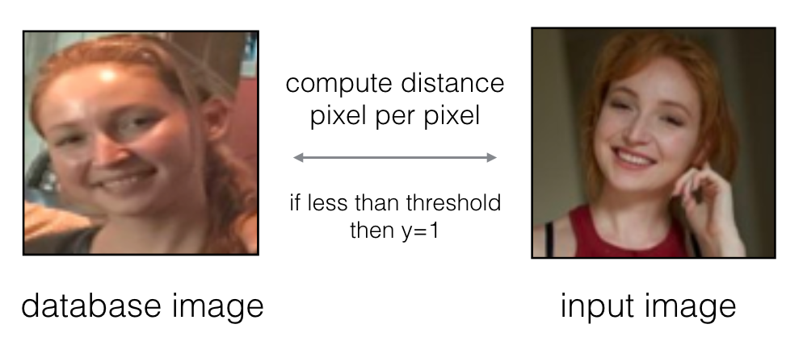
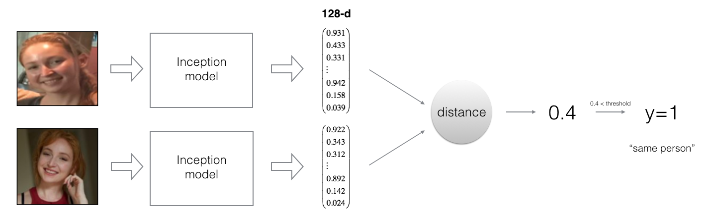
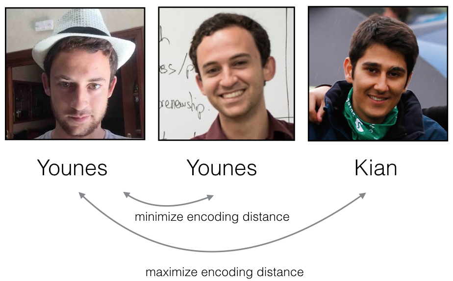
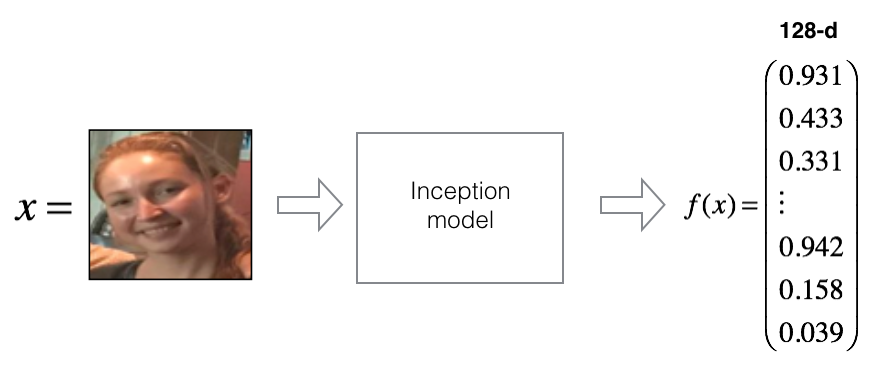
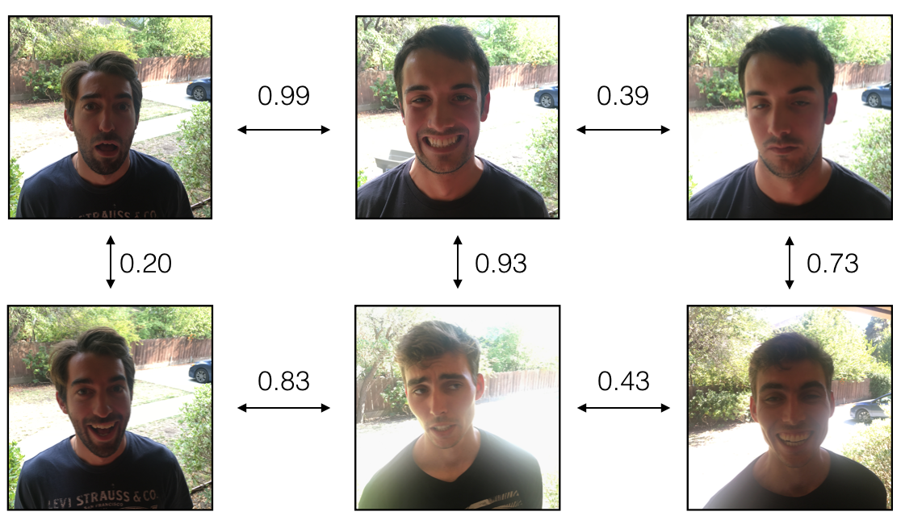

Face Recognition#
Welcome! In this assignment, you’re going to build a face recognition system. Many of the ideas presented here are from FaceNet. In the lecture, you also encountered DeepFace.
Face recognition problems commonly fall into one of two categories:
Face Verification “Is this the claimed person?” For example, at some airports, you can pass through customs by letting a system scan your passport and then verifying that you (the person carrying the passport) are the correct person. A mobile phone that unlocks using your face is also using face verification. This is a 1:1 matching problem.
Face Recognition “Who is this person?” For example, the video lecture showed a face recognition video of Baidu employees entering the office without needing to otherwise identify themselves. This is a 1:K matching problem.
FaceNet learns a neural network that encodes a face image into a vector of 128 numbers. By comparing two such vectors, you can then determine if two pictures are of the same person.
By the end of this assignment, you’ll be able to:
Differentiate between face recognition and face verification
Implement one-shot learning to solve a face recognition problem
Apply the triplet loss function to learn a network’s parameters in the context of face recognition
Explain how to pose face recognition as a binary classification problem
Map face images into 128-dimensional encodings using a pretrained model
Perform face verification and face recognition with these encodings
Channels-last notation
For this assignment, you’ll be using a pre-trained model which represents ConvNet activations using a “channels last” convention, as used during the lecture and in previous programming assignments.
In other words, a batch of images will be of shape \((m, n_H, n_W, n_C)\).
Important Note on Submission to the AutoGrader#
Before submitting your assignment to the AutoGrader, please make sure you are not doing the following:
You have not added any extra
printstatement(s) in the assignment.You have not added any extra code cell(s) in the assignment.
You have not changed any of the function parameters.
You are not using any global variables inside your graded exercises. Unless specifically instructed to do so, please refrain from it and use the local variables instead.
You are not changing the assignment code where it is not required, like creating extra variables.
If you do any of the following, you will get something like, Grader Error: Grader feedback not found (or similarly unexpected) error upon submitting your assignment. Before asking for help/debugging the errors in your assignment, check for these first. If this is the case, and you don’t remember the changes you have made, you can get a fresh copy of the assignment by following these instructions.
1 - Packages#
Go ahead and run the cell below to import the packages you’ll need.
### v1.1
from tensorflow.keras.models import Sequential
from tensorflow.keras.layers import Conv2D, ZeroPadding2D, Activation, Input, concatenate
from tensorflow.keras.models import Model
from tensorflow.keras.layers import BatchNormalization
from tensorflow.keras.layers import MaxPooling2D, AveragePooling2D
from tensorflow.keras.layers import Concatenate
from tensorflow.keras.layers import Lambda, Flatten, Dense
from tensorflow.keras.initializers import glorot_uniform
from tensorflow.keras.layers import Layer
from tensorflow.keras import backend as K
K.set_image_data_format('channels_last')
import os
import numpy as np
from numpy import genfromtxt
import pandas as pd
import tensorflow as tf
import PIL
%matplotlib inline
%load_ext autoreload
%autoreload 2
2 - Naive Face Verification#
In Face Verification, you’re given two images and you have to determine if they are of the same person. The simplest way to do this is to compare the two images pixel-by-pixel. If the distance between the raw images is below a chosen threshold, it may be the same person!

Of course, this algorithm performs poorly, since the pixel values change dramatically due to variations in lighting, orientation of the person’s face, minor changes in head position, and so on.
You’ll see that rather than using the raw image, you can learn an encoding, \(f(img)\).
By using an encoding for each image, an element-wise comparison produces a more accurate judgement as to whether two pictures are of the same person.
3 - Encoding Face Images into a 128-Dimensional Vector#
3.1 - Using a ConvNet to Compute Encodings#
The FaceNet model takes a lot of data and a long time to train. So following the common practice in applied deep learning, you’ll load weights that someone else has already trained. The network architecture follows the Inception model from Szegedy et al.. An Inception network implementation has been provided for you, and you can find it in the file inception_blocks_v2.py to get a closer look at how it is implemented.
Hot tip: Go to “File->Open…” at the top of this notebook. This opens the file directory that contains the .py file).
The key things to be aware of are:
This network uses 160x160 dimensional RGB images as its input. Specifically, a face image (or batch of \(m\) face images) as a tensor of shape \((m, n_H, n_W, n_C) = (m, 160, 160, 3)\)
The input images are originally of shape 96x96, thus, you need to scale them to 160x160. This is done in the
img_to_encoding()function.The output is a matrix of shape \((m, 128)\) that encodes each input face image into a 128-dimensional vector
Run the cell below to create the model for face images!
from tensorflow.keras.models import model_from_json
json_file = open('keras-facenet-h5/model.json', 'r')
loaded_model_json = json_file.read()
json_file.close()
model = model_from_json(loaded_model_json)
model.load_weights('keras-facenet-h5/model.h5')
---------------------------------------------------------------------------
TypeError Traceback (most recent call last)
Cell In[3], line 6
4 loaded_model_json = json_file.read()
5 json_file.close()
----> 6 model = model_from_json(loaded_model_json)
7 model.load_weights('keras-facenet-h5/model.h5')
File ~\Python\Lib\site-packages\keras\src\models\model.py:886, in model_from_json(json_string, custom_objects)
883 from keras.src.saving import serialization_lib
885 model_config = json.loads(json_string)
--> 886 return serialization_lib.deserialize_keras_object(
887 model_config, custom_objects=custom_objects
888 )
File ~\Python\Lib\site-packages\keras\src\saving\serialization_lib.py:709, in deserialize_keras_object(config, custom_objects, safe_mode, **kwargs)
706 if obj is not None:
707 return obj
--> 709 cls = _retrieve_class_or_fn(
710 class_name,
711 registered_name,
712 module,
713 obj_type="class",
714 full_config=config,
715 custom_objects=custom_objects,
716 )
718 if isinstance(cls, types.FunctionType):
719 return cls
File ~\Python\Lib\site-packages\keras\src\saving\serialization_lib.py:836, in _retrieve_class_or_fn(name, registered_name, module, obj_type, full_config, custom_objects)
829 except ModuleNotFoundError:
830 raise TypeError(
831 f"Could not deserialize {obj_type} '{name}' because "
832 f"its parent module {module} cannot be imported. "
833 f"Full object config: {full_config}"
834 )
--> 836 raise TypeError(
837 f"Could not locate {obj_type} '{name}'. "
838 "Make sure custom classes are decorated with "
839 "`@keras.saving.register_keras_serializable()`. "
840 f"Full object config: {full_config}"
841 )
TypeError: Could not locate class 'Functional'. Make sure custom classes are decorated with `@keras.saving.register_keras_serializable()`. Full object config: {'class_name': 'Functional', 'config': {'name': 'inception_resnet_v1', 'layers': [{'class_name': 'InputLayer', 'config': {'batch_input_shape': [None, 160, 160, 3], 'dtype': 'float32', 'sparse': False, 'ragged': False, 'name': 'input_1'}, 'name': 'input_1', 'inbound_nodes': []}, {'class_name': 'Conv2D', 'config': {'name': 'Conv2d_1a_3x3', 'trainable': True, 'dtype': 'float32', 'filters': 32, 'kernel_size': [3, 3], 'strides': [2, 2], 'padding': 'valid', 'data_format': 'channels_last', 'dilation_rate': [1, 1], 'groups': 1, 'activation': 'linear', 'use_bias': False, 'kernel_initializer': {'class_name': 'VarianceScaling', 'config': {'scale': 1.0, 'mode': 'fan_avg', 'distribution': 'uniform', 'seed': None}}, 'bias_initializer': {'class_name': 'Zeros', 'config': {}}, 'kernel_regularizer': None, 'bias_regularizer': None, 'activity_regularizer': None, 'kernel_constraint': None, 'bias_constraint': None}, 'name': 'Conv2d_1a_3x3', 'inbound_nodes': [[['input_1', 0, 0, {}]]]}, {'class_name': 'BatchNormalization', 'config': {'name': 'Conv2d_1a_3x3_BatchNorm', 'trainable': True, 'dtype': 'float32', 'axis': [3], 'momentum': 0.995, 'epsilon': 0.001, 'center': True, 'scale': False, 'beta_initializer': {'class_name': 'Zeros', 'config': {}}, 'gamma_initializer': {'class_name': 'Ones', 'config': {}}, 'moving_mean_initializer': {'class_name': 'Zeros', 'config': {}}, 'moving_variance_initializer': {'class_name': 'Ones', 'config': {}}, 'beta_regularizer': None, 'gamma_regularizer': None, 'beta_constraint': None, 'gamma_constraint': None}, 'name': 'Conv2d_1a_3x3_BatchNorm', 'inbound_nodes': [[['Conv2d_1a_3x3', 0, 0, {}]]]}, {'class_name': 'Activation', 'config': {'name': 'Conv2d_1a_3x3_Activation', 'trainable': True, 'dtype': 'float32', 'activation': 'relu'}, 'name': 'Conv2d_1a_3x3_Activation', 'inbound_nodes': [[['Conv2d_1a_3x3_BatchNorm', 0, 0, {}]]]}, {'class_name': 'Conv2D', 'config': {'name': 'Conv2d_2a_3x3', 'trainable': True, 'dtype': 'float32', 'filters': 32, 'kernel_size': [3, 3], 'strides': [1, 1], 'padding': 'valid', 'data_format': 'channels_last', 'dilation_rate': [1, 1], 'groups': 1, 'activation': 'linear', 'use_bias': False, 'kernel_initializer': {'class_name': 'VarianceScaling', 'config': {'scale': 1.0, 'mode': 'fan_avg', 'distribution': 'uniform', 'seed': None}}, 'bias_initializer': {'class_name': 'Zeros', 'config': {}}, 'kernel_regularizer': None, 'bias_regularizer': None, 'activity_regularizer': None, 'kernel_constraint': None, 'bias_constraint': None}, 'name': 'Conv2d_2a_3x3', 'inbound_nodes': [[['Conv2d_1a_3x3_Activation', 0, 0, {}]]]}, {'class_name': 'BatchNormalization', 'config': {'name': 'Conv2d_2a_3x3_BatchNorm', 'trainable': True, 'dtype': 'float32', 'axis': [3], 'momentum': 0.995, 'epsilon': 0.001, 'center': True, 'scale': False, 'beta_initializer': {'class_name': 'Zeros', 'config': {}}, 'gamma_initializer': {'class_name': 'Ones', 'config': {}}, 'moving_mean_initializer': {'class_name': 'Zeros', 'config': {}}, 'moving_variance_initializer': {'class_name': 'Ones', 'config': {}}, 'beta_regularizer': None, 'gamma_regularizer': None, 'beta_constraint': None, 'gamma_constraint': None}, 'name': 'Conv2d_2a_3x3_BatchNorm', 'inbound_nodes': [[['Conv2d_2a_3x3', 0, 0, {}]]]}, {'class_name': 'Activation', 'config': {'name': 'Conv2d_2a_3x3_Activation', 'trainable': True, 'dtype': 'float32', 'activation': 'relu'}, 'name': 'Conv2d_2a_3x3_Activation', 'inbound_nodes': [[['Conv2d_2a_3x3_BatchNorm', 0, 0, {}]]]}, {'class_name': 'Conv2D', 'config': {'name': 'Conv2d_2b_3x3', 'trainable': True, 'dtype': 'float32', 'filters': 64, 'kernel_size': [3, 3], 'strides': [1, 1], 'padding': 'same', 'data_format': 'channels_last', 'dilation_rate': [1, 1], 'groups': 1, 'activation': 'linear', 'use_bias': False, 'kernel_initializer': {'class_name': 'VarianceScaling', 'config': {'scale': 1.0, 'mode': 'fan_avg', 'distribution': 'uniform', 'seed': None}}, 'bias_initializer': {'class_name': 'Zeros', 'config': {}}, 'kernel_regularizer': None, 'bias_regularizer': None, 'activity_regularizer': None, 'kernel_constraint': None, 'bias_constraint': None}, 'name': 'Conv2d_2b_3x3', 'inbound_nodes': [[['Conv2d_2a_3x3_Activation', 0, 0, {}]]]}, {'class_name': 'BatchNormalization', 'config': {'name': 'Conv2d_2b_3x3_BatchNorm', 'trainable': True, 'dtype': 'float32', 'axis': [3], 'momentum': 0.995, 'epsilon': 0.001, 'center': True, 'scale': False, 'beta_initializer': {'class_name': 'Zeros', 'config': {}}, 'gamma_initializer': {'class_name': 'Ones', 'config': {}}, 'moving_mean_initializer': {'class_name': 'Zeros', 'config': {}}, 'moving_variance_initializer': {'class_name': 'Ones', 'config': {}}, 'beta_regularizer': None, 'gamma_regularizer': None, 'beta_constraint': None, 'gamma_constraint': None}, 'name': 'Conv2d_2b_3x3_BatchNorm', 'inbound_nodes': [[['Conv2d_2b_3x3', 0, 0, {}]]]}, {'class_name': 'Activation', 'config': {'name': 'Conv2d_2b_3x3_Activation', 'trainable': True, 'dtype': 'float32', 'activation': 'relu'}, 'name': 'Conv2d_2b_3x3_Activation', 'inbound_nodes': [[['Conv2d_2b_3x3_BatchNorm', 0, 0, {}]]]}, {'class_name': 'MaxPooling2D', 'config': {'name': 'MaxPool_3a_3x3', 'trainable': True, 'dtype': 'float32', 'pool_size': [3, 3], 'padding': 'valid', 'strides': [2, 2], 'data_format': 'channels_last'}, 'name': 'MaxPool_3a_3x3', 'inbound_nodes': [[['Conv2d_2b_3x3_Activation', 0, 0, {}]]]}, {'class_name': 'Conv2D', 'config': {'name': 'Conv2d_3b_1x1', 'trainable': True, 'dtype': 'float32', 'filters': 80, 'kernel_size': [1, 1], 'strides': [1, 1], 'padding': 'valid', 'data_format': 'channels_last', 'dilation_rate': [1, 1], 'groups': 1, 'activation': 'linear', 'use_bias': False, 'kernel_initializer': {'class_name': 'VarianceScaling', 'config': {'scale': 1.0, 'mode': 'fan_avg', 'distribution': 'uniform', 'seed': None}}, 'bias_initializer': {'class_name': 'Zeros', 'config': {}}, 'kernel_regularizer': None, 'bias_regularizer': None, 'activity_regularizer': None, 'kernel_constraint': None, 'bias_constraint': None}, 'name': 'Conv2d_3b_1x1', 'inbound_nodes': [[['MaxPool_3a_3x3', 0, 0, {}]]]}, {'class_name': 'BatchNormalization', 'config': {'name': 'Conv2d_3b_1x1_BatchNorm', 'trainable': True, 'dtype': 'float32', 'axis': [3], 'momentum': 0.995, 'epsilon': 0.001, 'center': True, 'scale': False, 'beta_initializer': {'class_name': 'Zeros', 'config': {}}, 'gamma_initializer': {'class_name': 'Ones', 'config': {}}, 'moving_mean_initializer': {'class_name': 'Zeros', 'config': {}}, 'moving_variance_initializer': {'class_name': 'Ones', 'config': {}}, 'beta_regularizer': None, 'gamma_regularizer': None, 'beta_constraint': None, 'gamma_constraint': None}, 'name': 'Conv2d_3b_1x1_BatchNorm', 'inbound_nodes': [[['Conv2d_3b_1x1', 0, 0, {}]]]}, {'class_name': 'Activation', 'config': {'name': 'Conv2d_3b_1x1_Activation', 'trainable': True, 'dtype': 'float32', 'activation': 'relu'}, 'name': 'Conv2d_3b_1x1_Activation', 'inbound_nodes': [[['Conv2d_3b_1x1_BatchNorm', 0, 0, {}]]]}, {'class_name': 'Conv2D', 'config': {'name': 'Conv2d_4a_3x3', 'trainable': True, 'dtype': 'float32', 'filters': 192, 'kernel_size': [3, 3], 'strides': [1, 1], 'padding': 'valid', 'data_format': 'channels_last', 'dilation_rate': [1, 1], 'groups': 1, 'activation': 'linear', 'use_bias': False, 'kernel_initializer': {'class_name': 'VarianceScaling', 'config': {'scale': 1.0, 'mode': 'fan_avg', 'distribution': 'uniform', 'seed': None}}, 'bias_initializer': {'class_name': 'Zeros', 'config': {}}, 'kernel_regularizer': None, 'bias_regularizer': None, 'activity_regularizer': None, 'kernel_constraint': None, 'bias_constraint': None}, 'name': 'Conv2d_4a_3x3', 'inbound_nodes': [[['Conv2d_3b_1x1_Activation', 0, 0, {}]]]}, {'class_name': 'BatchNormalization', 'config': {'name': 'Conv2d_4a_3x3_BatchNorm', 'trainable': True, 'dtype': 'float32', 'axis': [3], 'momentum': 0.995, 'epsilon': 0.001, 'center': True, 'scale': False, 'beta_initializer': {'class_name': 'Zeros', 'config': {}}, 'gamma_initializer': {'class_name': 'Ones', 'config': {}}, 'moving_mean_initializer': {'class_name': 'Zeros', 'config': {}}, 'moving_variance_initializer': {'class_name': 'Ones', 'config': {}}, 'beta_regularizer': None, 'gamma_regularizer': None, 'beta_constraint': None, 'gamma_constraint': None}, 'name': 'Conv2d_4a_3x3_BatchNorm', 'inbound_nodes': [[['Conv2d_4a_3x3', 0, 0, {}]]]}, {'class_name': 'Activation', 'config': {'name': 'Conv2d_4a_3x3_Activation', 'trainable': True, 'dtype': 'float32', 'activation': 'relu'}, 'name': 'Conv2d_4a_3x3_Activation', 'inbound_nodes': [[['Conv2d_4a_3x3_BatchNorm', 0, 0, {}]]]}, {'class_name': 'Conv2D', 'config': {'name': 'Conv2d_4b_3x3', 'trainable': True, 'dtype': 'float32', 'filters': 256, 'kernel_size': [3, 3], 'strides': [2, 2], 'padding': 'valid', 'data_format': 'channels_last', 'dilation_rate': [1, 1], 'groups': 1, 'activation': 'linear', 'use_bias': False, 'kernel_initializer': {'class_name': 'VarianceScaling', 'config': {'scale': 1.0, 'mode': 'fan_avg', 'distribution': 'uniform', 'seed': None}}, 'bias_initializer': {'class_name': 'Zeros', 'config': {}}, 'kernel_regularizer': None, 'bias_regularizer': None, 'activity_regularizer': None, 'kernel_constraint': None, 'bias_constraint': None}, 'name': 'Conv2d_4b_3x3', 'inbound_nodes': [[['Conv2d_4a_3x3_Activation', 0, 0, {}]]]}, {'class_name': 'BatchNormalization', 'config': {'name': 'Conv2d_4b_3x3_BatchNorm', 'trainable': True, 'dtype': 'float32', 'axis': [3], 'momentum': 0.995, 'epsilon': 0.001, 'center': True, 'scale': False, 'beta_initializer': {'class_name': 'Zeros', 'config': {}}, 'gamma_initializer': {'class_name': 'Ones', 'config': {}}, 'moving_mean_initializer': {'class_name': 'Zeros', 'config': {}}, 'moving_variance_initializer': {'class_name': 'Ones', 'config': {}}, 'beta_regularizer': None, 'gamma_regularizer': None, 'beta_constraint': None, 'gamma_constraint': None}, 'name': 'Conv2d_4b_3x3_BatchNorm', 'inbound_nodes': [[['Conv2d_4b_3x3', 0, 0, {}]]]}, {'class_name': 'Activation', 'config': {'name': 'Conv2d_4b_3x3_Activation', 'trainable': True, 'dtype': 'float32', 'activation': 'relu'}, 'name': 'Conv2d_4b_3x3_Activation', 'inbound_nodes': [[['Conv2d_4b_3x3_BatchNorm', 0, 0, {}]]]}, {'class_name': 'Conv2D', 'config': {'name': 'Block35_1_Branch_2_Conv2d_0a_1x1', 'trainable': True, 'dtype': 'float32', 'filters': 32, 'kernel_size': [1, 1], 'strides': [1, 1], 'padding': 'same', 'data_format': 'channels_last', 'dilation_rate': [1, 1], 'groups': 1, 'activation': 'linear', 'use_bias': False, 'kernel_initializer': {'class_name': 'VarianceScaling', 'config': {'scale': 1.0, 'mode': 'fan_avg', 'distribution': 'uniform', 'seed': None}}, 'bias_initializer': {'class_name': 'Zeros', 'config': {}}, 'kernel_regularizer': None, 'bias_regularizer': None, 'activity_regularizer': None, 'kernel_constraint': None, 'bias_constraint': None}, 'name': 'Block35_1_Branch_2_Conv2d_0a_1x1', 'inbound_nodes': [[['Conv2d_4b_3x3_Activation', 0, 0, {}]]]}, {'class_name': 'BatchNormalization', 'config': {'name': 'Block35_1_Branch_2_Conv2d_0a_1x1_BatchNorm', 'trainable': True, 'dtype': 'float32', 'axis': [3], 'momentum': 0.995, 'epsilon': 0.001, 'center': True, 'scale': False, 'beta_initializer': {'class_name': 'Zeros', 'config': {}}, 'gamma_initializer': {'class_name': 'Ones', 'config': {}}, 'moving_mean_initializer': {'class_name': 'Zeros', 'config': {}}, 'moving_variance_initializer': {'class_name': 'Ones', 'config': {}}, 'beta_regularizer': None, 'gamma_regularizer': None, 'beta_constraint': None, 'gamma_constraint': None}, 'name': 'Block35_1_Branch_2_Conv2d_0a_1x1_BatchNorm', 'inbound_nodes': [[['Block35_1_Branch_2_Conv2d_0a_1x1', 0, 0, {}]]]}, {'class_name': 'Activation', 'config': {'name': 'Block35_1_Branch_2_Conv2d_0a_1x1_Activation', 'trainable': True, 'dtype': 'float32', 'activation': 'relu'}, 'name': 'Block35_1_Branch_2_Conv2d_0a_1x1_Activation', 'inbound_nodes': [[['Block35_1_Branch_2_Conv2d_0a_1x1_BatchNorm', 0, 0, {}]]]}, {'class_name': 'Conv2D', 'config': {'name': 'Block35_1_Branch_1_Conv2d_0a_1x1', 'trainable': True, 'dtype': 'float32', 'filters': 32, 'kernel_size': [1, 1], 'strides': [1, 1], 'padding': 'same', 'data_format': 'channels_last', 'dilation_rate': [1, 1], 'groups': 1, 'activation': 'linear', 'use_bias': False, 'kernel_initializer': {'class_name': 'VarianceScaling', 'config': {'scale': 1.0, 'mode': 'fan_avg', 'distribution': 'uniform', 'seed': None}}, 'bias_initializer': {'class_name': 'Zeros', 'config': {}}, 'kernel_regularizer': None, 'bias_regularizer': None, 'activity_regularizer': None, 'kernel_constraint': None, 'bias_constraint': None}, 'name': 'Block35_1_Branch_1_Conv2d_0a_1x1', 'inbound_nodes': [[['Conv2d_4b_3x3_Activation', 0, 0, {}]]]}, {'class_name': 'Conv2D', 'config': {'name': 'Block35_1_Branch_2_Conv2d_0b_3x3', 'trainable': True, 'dtype': 'float32', 'filters': 32, 'kernel_size': [3, 3], 'strides': [1, 1], 'padding': 'same', 'data_format': 'channels_last', 'dilation_rate': [1, 1], 'groups': 1, 'activation': 'linear', 'use_bias': False, 'kernel_initializer': {'class_name': 'VarianceScaling', 'config': {'scale': 1.0, 'mode': 'fan_avg', 'distribution': 'uniform', 'seed': None}}, 'bias_initializer': {'class_name': 'Zeros', 'config': {}}, 'kernel_regularizer': None, 'bias_regularizer': None, 'activity_regularizer': None, 'kernel_constraint': None, 'bias_constraint': None}, 'name': 'Block35_1_Branch_2_Conv2d_0b_3x3', 'inbound_nodes': [[['Block35_1_Branch_2_Conv2d_0a_1x1_Activation', 0, 0, {}]]]}, {'class_name': 'BatchNormalization', 'config': {'name': 'Block35_1_Branch_1_Conv2d_0a_1x1_BatchNorm', 'trainable': True, 'dtype': 'float32', 'axis': [3], 'momentum': 0.995, 'epsilon': 0.001, 'center': True, 'scale': False, 'beta_initializer': {'class_name': 'Zeros', 'config': {}}, 'gamma_initializer': {'class_name': 'Ones', 'config': {}}, 'moving_mean_initializer': {'class_name': 'Zeros', 'config': {}}, 'moving_variance_initializer': {'class_name': 'Ones', 'config': {}}, 'beta_regularizer': None, 'gamma_regularizer': None, 'beta_constraint': None, 'gamma_constraint': None}, 'name': 'Block35_1_Branch_1_Conv2d_0a_1x1_BatchNorm', 'inbound_nodes': [[['Block35_1_Branch_1_Conv2d_0a_1x1', 0, 0, {}]]]}, {'class_name': 'BatchNormalization', 'config': {'name': 'Block35_1_Branch_2_Conv2d_0b_3x3_BatchNorm', 'trainable': True, 'dtype': 'float32', 'axis': [3], 'momentum': 0.995, 'epsilon': 0.001, 'center': True, 'scale': False, 'beta_initializer': {'class_name': 'Zeros', 'config': {}}, 'gamma_initializer': {'class_name': 'Ones', 'config': {}}, 'moving_mean_initializer': {'class_name': 'Zeros', 'config': {}}, 'moving_variance_initializer': {'class_name': 'Ones', 'config': {}}, 'beta_regularizer': None, 'gamma_regularizer': None, 'beta_constraint': None, 'gamma_constraint': None}, 'name': 'Block35_1_Branch_2_Conv2d_0b_3x3_BatchNorm', 'inbound_nodes': [[['Block35_1_Branch_2_Conv2d_0b_3x3', 0, 0, {}]]]}, {'class_name': 'Activation', 'config': {'name': 'Block35_1_Branch_1_Conv2d_0a_1x1_Activation', 'trainable': True, 'dtype': 'float32', 'activation': 'relu'}, 'name': 'Block35_1_Branch_1_Conv2d_0a_1x1_Activation', 'inbound_nodes': [[['Block35_1_Branch_1_Conv2d_0a_1x1_BatchNorm', 0, 0, {}]]]}, {'class_name': 'Activation', 'config': {'name': 'Block35_1_Branch_2_Conv2d_0b_3x3_Activation', 'trainable': True, 'dtype': 'float32', 'activation': 'relu'}, 'name': 'Block35_1_Branch_2_Conv2d_0b_3x3_Activation', 'inbound_nodes': [[['Block35_1_Branch_2_Conv2d_0b_3x3_BatchNorm', 0, 0, {}]]]}, {'class_name': 'Conv2D', 'config': {'name': 'Block35_1_Branch_0_Conv2d_1x1', 'trainable': True, 'dtype': 'float32', 'filters': 32, 'kernel_size': [1, 1], 'strides': [1, 1], 'padding': 'same', 'data_format': 'channels_last', 'dilation_rate': [1, 1], 'groups': 1, 'activation': 'linear', 'use_bias': False, 'kernel_initializer': {'class_name': 'VarianceScaling', 'config': {'scale': 1.0, 'mode': 'fan_avg', 'distribution': 'uniform', 'seed': None}}, 'bias_initializer': {'class_name': 'Zeros', 'config': {}}, 'kernel_regularizer': None, 'bias_regularizer': None, 'activity_regularizer': None, 'kernel_constraint': None, 'bias_constraint': None}, 'name': 'Block35_1_Branch_0_Conv2d_1x1', 'inbound_nodes': [[['Conv2d_4b_3x3_Activation', 0, 0, {}]]]}, {'class_name': 'Conv2D', 'config': {'name': 'Block35_1_Branch_1_Conv2d_0b_3x3', 'trainable': True, 'dtype': 'float32', 'filters': 32, 'kernel_size': [3, 3], 'strides': [1, 1], 'padding': 'same', 'data_format': 'channels_last', 'dilation_rate': [1, 1], 'groups': 1, 'activation': 'linear', 'use_bias': False, 'kernel_initializer': {'class_name': 'VarianceScaling', 'config': {'scale': 1.0, 'mode': 'fan_avg', 'distribution': 'uniform', 'seed': None}}, 'bias_initializer': {'class_name': 'Zeros', 'config': {}}, 'kernel_regularizer': None, 'bias_regularizer': None, 'activity_regularizer': None, 'kernel_constraint': None, 'bias_constraint': None}, 'name': 'Block35_1_Branch_1_Conv2d_0b_3x3', 'inbound_nodes': [[['Block35_1_Branch_1_Conv2d_0a_1x1_Activation', 0, 0, {}]]]}, {'class_name': 'Conv2D', 'config': {'name': 'Block35_1_Branch_2_Conv2d_0c_3x3', 'trainable': True, 'dtype': 'float32', 'filters': 32, 'kernel_size': [3, 3], 'strides': [1, 1], 'padding': 'same', 'data_format': 'channels_last', 'dilation_rate': [1, 1], 'groups': 1, 'activation': 'linear', 'use_bias': False, 'kernel_initializer': {'class_name': 'VarianceScaling', 'config': {'scale': 1.0, 'mode': 'fan_avg', 'distribution': 'uniform', 'seed': None}}, 'bias_initializer': {'class_name': 'Zeros', 'config': {}}, 'kernel_regularizer': None, 'bias_regularizer': None, 'activity_regularizer': None, 'kernel_constraint': None, 'bias_constraint': None}, 'name': 'Block35_1_Branch_2_Conv2d_0c_3x3', 'inbound_nodes': [[['Block35_1_Branch_2_Conv2d_0b_3x3_Activation', 0, 0, {}]]]}, {'class_name': 'BatchNormalization', 'config': {'name': 'Block35_1_Branch_0_Conv2d_1x1_BatchNorm', 'trainable': True, 'dtype': 'float32', 'axis': [3], 'momentum': 0.995, 'epsilon': 0.001, 'center': True, 'scale': False, 'beta_initializer': {'class_name': 'Zeros', 'config': {}}, 'gamma_initializer': {'class_name': 'Ones', 'config': {}}, 'moving_mean_initializer': {'class_name': 'Zeros', 'config': {}}, 'moving_variance_initializer': {'class_name': 'Ones', 'config': {}}, 'beta_regularizer': None, 'gamma_regularizer': None, 'beta_constraint': None, 'gamma_constraint': None}, 'name': 'Block35_1_Branch_0_Conv2d_1x1_BatchNorm', 'inbound_nodes': [[['Block35_1_Branch_0_Conv2d_1x1', 0, 0, {}]]]}, {'class_name': 'BatchNormalization', 'config': {'name': 'Block35_1_Branch_1_Conv2d_0b_3x3_BatchNorm', 'trainable': True, 'dtype': 'float32', 'axis': [3], 'momentum': 0.995, 'epsilon': 0.001, 'center': True, 'scale': False, 'beta_initializer': {'class_name': 'Zeros', 'config': {}}, 'gamma_initializer': {'class_name': 'Ones', 'config': {}}, 'moving_mean_initializer': {'class_name': 'Zeros', 'config': {}}, 'moving_variance_initializer': {'class_name': 'Ones', 'config': {}}, 'beta_regularizer': None, 'gamma_regularizer': None, 'beta_constraint': None, 'gamma_constraint': None}, 'name': 'Block35_1_Branch_1_Conv2d_0b_3x3_BatchNorm', 'inbound_nodes': [[['Block35_1_Branch_1_Conv2d_0b_3x3', 0, 0, {}]]]}, {'class_name': 'BatchNormalization', 'config': {'name': 'Block35_1_Branch_2_Conv2d_0c_3x3_BatchNorm', 'trainable': True, 'dtype': 'float32', 'axis': [3], 'momentum': 0.995, 'epsilon': 0.001, 'center': True, 'scale': False, 'beta_initializer': {'class_name': 'Zeros', 'config': {}}, 'gamma_initializer': {'class_name': 'Ones', 'config': {}}, 'moving_mean_initializer': {'class_name': 'Zeros', 'config': {}}, 'moving_variance_initializer': {'class_name': 'Ones', 'config': {}}, 'beta_regularizer': None, 'gamma_regularizer': None, 'beta_constraint': None, 'gamma_constraint': None}, 'name': 'Block35_1_Branch_2_Conv2d_0c_3x3_BatchNorm', 'inbound_nodes': [[['Block35_1_Branch_2_Conv2d_0c_3x3', 0, 0, {}]]]}, {'class_name': 'Activation', 'config': {'name': 'Block35_1_Branch_0_Conv2d_1x1_Activation', 'trainable': True, 'dtype': 'float32', 'activation': 'relu'}, 'name': 'Block35_1_Branch_0_Conv2d_1x1_Activation', 'inbound_nodes': [[['Block35_1_Branch_0_Conv2d_1x1_BatchNorm', 0, 0, {}]]]}, {'class_name': 'Activation', 'config': {'name': 'Block35_1_Branch_1_Conv2d_0b_3x3_Activation', 'trainable': True, 'dtype': 'float32', 'activation': 'relu'}, 'name': 'Block35_1_Branch_1_Conv2d_0b_3x3_Activation', 'inbound_nodes': [[['Block35_1_Branch_1_Conv2d_0b_3x3_BatchNorm', 0, 0, {}]]]}, {'class_name': 'Activation', 'config': {'name': 'Block35_1_Branch_2_Conv2d_0c_3x3_Activation', 'trainable': True, 'dtype': 'float32', 'activation': 'relu'}, 'name': 'Block35_1_Branch_2_Conv2d_0c_3x3_Activation', 'inbound_nodes': [[['Block35_1_Branch_2_Conv2d_0c_3x3_BatchNorm', 0, 0, {}]]]}, {'class_name': 'Concatenate', 'config': {'name': 'Block35_1_Concatenate', 'trainable': True, 'dtype': 'float32', 'axis': 3}, 'name': 'Block35_1_Concatenate', 'inbound_nodes': [[['Block35_1_Branch_0_Conv2d_1x1_Activation', 0, 0, {}], ['Block35_1_Branch_1_Conv2d_0b_3x3_Activation', 0, 0, {}], ['Block35_1_Branch_2_Conv2d_0c_3x3_Activation', 0, 0, {}]]]}, {'class_name': 'Conv2D', 'config': {'name': 'Block35_1_Conv2d_1x1', 'trainable': True, 'dtype': 'float32', 'filters': 256, 'kernel_size': [1, 1], 'strides': [1, 1], 'padding': 'same', 'data_format': 'channels_last', 'dilation_rate': [1, 1], 'groups': 1, 'activation': 'linear', 'use_bias': True, 'kernel_initializer': {'class_name': 'VarianceScaling', 'config': {'scale': 1.0, 'mode': 'fan_avg', 'distribution': 'uniform', 'seed': None}}, 'bias_initializer': {'class_name': 'Zeros', 'config': {}}, 'kernel_regularizer': None, 'bias_regularizer': None, 'activity_regularizer': None, 'kernel_constraint': None, 'bias_constraint': None}, 'name': 'Block35_1_Conv2d_1x1', 'inbound_nodes': [[['Block35_1_Concatenate', 0, 0, {}]]]}, {'class_name': 'Lambda', 'config': {'name': 'Block35_1_ScaleSum', 'trainable': True, 'dtype': 'float32', 'function': ['4wIAAAAAAAAAAgAAAAMAAABTAAAAcxQAAAB8AGQBGQB8AGQCGQB8ARQAFwBTACkDTukAAAAA6QEA\nAACpACkC2gZpbnB1dHPaBXNjYWxlcgMAAAByAwAAAPobLi4vY29kZS9mYWNlbmV0X2tlcmFzX3Yx\nLnB52gg8bGFtYmRhPloAAADzAAAAAA==\n', None, None], 'function_type': 'lambda', 'module': 'tensorflow.python.keras.layers.core', 'output_shape': [17, 17, 256], 'output_shape_type': 'raw', 'output_shape_module': None, 'arguments': {'scale': 0.17}}, 'name': 'Block35_1_ScaleSum', 'inbound_nodes': [[['Conv2d_4b_3x3_Activation', 0, 0, {}], ['Block35_1_Conv2d_1x1', 0, 0, {}]]]}, {'class_name': 'Activation', 'config': {'name': 'Block35_1_Activation', 'trainable': True, 'dtype': 'float32', 'activation': 'relu'}, 'name': 'Block35_1_Activation', 'inbound_nodes': [[['Block35_1_ScaleSum', 0, 0, {}]]]}, {'class_name': 'Conv2D', 'config': {'name': 'Block35_2_Branch_2_Conv2d_0a_1x1', 'trainable': True, 'dtype': 'float32', 'filters': 32, 'kernel_size': [1, 1], 'strides': [1, 1], 'padding': 'same', 'data_format': 'channels_last', 'dilation_rate': [1, 1], 'groups': 1, 'activation': 'linear', 'use_bias': False, 'kernel_initializer': {'class_name': 'VarianceScaling', 'config': {'scale': 1.0, 'mode': 'fan_avg', 'distribution': 'uniform', 'seed': None}}, 'bias_initializer': {'class_name': 'Zeros', 'config': {}}, 'kernel_regularizer': None, 'bias_regularizer': None, 'activity_regularizer': None, 'kernel_constraint': None, 'bias_constraint': None}, 'name': 'Block35_2_Branch_2_Conv2d_0a_1x1', 'inbound_nodes': [[['Block35_1_Activation', 0, 0, {}]]]}, {'class_name': 'BatchNormalization', 'config': {'name': 'Block35_2_Branch_2_Conv2d_0a_1x1_BatchNorm', 'trainable': True, 'dtype': 'float32', 'axis': [3], 'momentum': 0.995, 'epsilon': 0.001, 'center': True, 'scale': False, 'beta_initializer': {'class_name': 'Zeros', 'config': {}}, 'gamma_initializer': {'class_name': 'Ones', 'config': {}}, 'moving_mean_initializer': {'class_name': 'Zeros', 'config': {}}, 'moving_variance_initializer': {'class_name': 'Ones', 'config': {}}, 'beta_regularizer': None, 'gamma_regularizer': None, 'beta_constraint': None, 'gamma_constraint': None}, 'name': 'Block35_2_Branch_2_Conv2d_0a_1x1_BatchNorm', 'inbound_nodes': [[['Block35_2_Branch_2_Conv2d_0a_1x1', 0, 0, {}]]]}, {'class_name': 'Activation', 'config': {'name': 'Block35_2_Branch_2_Conv2d_0a_1x1_Activation', 'trainable': True, 'dtype': 'float32', 'activation': 'relu'}, 'name': 'Block35_2_Branch_2_Conv2d_0a_1x1_Activation', 'inbound_nodes': [[['Block35_2_Branch_2_Conv2d_0a_1x1_BatchNorm', 0, 0, {}]]]}, {'class_name': 'Conv2D', 'config': {'name': 'Block35_2_Branch_1_Conv2d_0a_1x1', 'trainable': True, 'dtype': 'float32', 'filters': 32, 'kernel_size': [1, 1], 'strides': [1, 1], 'padding': 'same', 'data_format': 'channels_last', 'dilation_rate': [1, 1], 'groups': 1, 'activation': 'linear', 'use_bias': False, 'kernel_initializer': {'class_name': 'VarianceScaling', 'config': {'scale': 1.0, 'mode': 'fan_avg', 'distribution': 'uniform', 'seed': None}}, 'bias_initializer': {'class_name': 'Zeros', 'config': {}}, 'kernel_regularizer': None, 'bias_regularizer': None, 'activity_regularizer': None, 'kernel_constraint': None, 'bias_constraint': None}, 'name': 'Block35_2_Branch_1_Conv2d_0a_1x1', 'inbound_nodes': [[['Block35_1_Activation', 0, 0, {}]]]}, {'class_name': 'Conv2D', 'config': {'name': 'Block35_2_Branch_2_Conv2d_0b_3x3', 'trainable': True, 'dtype': 'float32', 'filters': 32, 'kernel_size': [3, 3], 'strides': [1, 1], 'padding': 'same', 'data_format': 'channels_last', 'dilation_rate': [1, 1], 'groups': 1, 'activation': 'linear', 'use_bias': False, 'kernel_initializer': {'class_name': 'VarianceScaling', 'config': {'scale': 1.0, 'mode': 'fan_avg', 'distribution': 'uniform', 'seed': None}}, 'bias_initializer': {'class_name': 'Zeros', 'config': {}}, 'kernel_regularizer': None, 'bias_regularizer': None, 'activity_regularizer': None, 'kernel_constraint': None, 'bias_constraint': None}, 'name': 'Block35_2_Branch_2_Conv2d_0b_3x3', 'inbound_nodes': [[['Block35_2_Branch_2_Conv2d_0a_1x1_Activation', 0, 0, {}]]]}, {'class_name': 'BatchNormalization', 'config': {'name': 'Block35_2_Branch_1_Conv2d_0a_1x1_BatchNorm', 'trainable': True, 'dtype': 'float32', 'axis': [3], 'momentum': 0.995, 'epsilon': 0.001, 'center': True, 'scale': False, 'beta_initializer': {'class_name': 'Zeros', 'config': {}}, 'gamma_initializer': {'class_name': 'Ones', 'config': {}}, 'moving_mean_initializer': {'class_name': 'Zeros', 'config': {}}, 'moving_variance_initializer': {'class_name': 'Ones', 'config': {}}, 'beta_regularizer': None, 'gamma_regularizer': None, 'beta_constraint': None, 'gamma_constraint': None}, 'name': 'Block35_2_Branch_1_Conv2d_0a_1x1_BatchNorm', 'inbound_nodes': [[['Block35_2_Branch_1_Conv2d_0a_1x1', 0, 0, {}]]]}, {'class_name': 'BatchNormalization', 'config': {'name': 'Block35_2_Branch_2_Conv2d_0b_3x3_BatchNorm', 'trainable': True, 'dtype': 'float32', 'axis': [3], 'momentum': 0.995, 'epsilon': 0.001, 'center': True, 'scale': False, 'beta_initializer': {'class_name': 'Zeros', 'config': {}}, 'gamma_initializer': {'class_name': 'Ones', 'config': {}}, 'moving_mean_initializer': {'class_name': 'Zeros', 'config': {}}, 'moving_variance_initializer': {'class_name': 'Ones', 'config': {}}, 'beta_regularizer': None, 'gamma_regularizer': None, 'beta_constraint': None, 'gamma_constraint': None}, 'name': 'Block35_2_Branch_2_Conv2d_0b_3x3_BatchNorm', 'inbound_nodes': [[['Block35_2_Branch_2_Conv2d_0b_3x3', 0, 0, {}]]]}, {'class_name': 'Activation', 'config': {'name': 'Block35_2_Branch_1_Conv2d_0a_1x1_Activation', 'trainable': True, 'dtype': 'float32', 'activation': 'relu'}, 'name': 'Block35_2_Branch_1_Conv2d_0a_1x1_Activation', 'inbound_nodes': [[['Block35_2_Branch_1_Conv2d_0a_1x1_BatchNorm', 0, 0, {}]]]}, {'class_name': 'Activation', 'config': {'name': 'Block35_2_Branch_2_Conv2d_0b_3x3_Activation', 'trainable': True, 'dtype': 'float32', 'activation': 'relu'}, 'name': 'Block35_2_Branch_2_Conv2d_0b_3x3_Activation', 'inbound_nodes': [[['Block35_2_Branch_2_Conv2d_0b_3x3_BatchNorm', 0, 0, {}]]]}, {'class_name': 'Conv2D', 'config': {'name': 'Block35_2_Branch_0_Conv2d_1x1', 'trainable': True, 'dtype': 'float32', 'filters': 32, 'kernel_size': [1, 1], 'strides': [1, 1], 'padding': 'same', 'data_format': 'channels_last', 'dilation_rate': [1, 1], 'groups': 1, 'activation': 'linear', 'use_bias': False, 'kernel_initializer': {'class_name': 'VarianceScaling', 'config': {'scale': 1.0, 'mode': 'fan_avg', 'distribution': 'uniform', 'seed': None}}, 'bias_initializer': {'class_name': 'Zeros', 'config': {}}, 'kernel_regularizer': None, 'bias_regularizer': None, 'activity_regularizer': None, 'kernel_constraint': None, 'bias_constraint': None}, 'name': 'Block35_2_Branch_0_Conv2d_1x1', 'inbound_nodes': [[['Block35_1_Activation', 0, 0, {}]]]}, {'class_name': 'Conv2D', 'config': {'name': 'Block35_2_Branch_1_Conv2d_0b_3x3', 'trainable': True, 'dtype': 'float32', 'filters': 32, 'kernel_size': [3, 3], 'strides': [1, 1], 'padding': 'same', 'data_format': 'channels_last', 'dilation_rate': [1, 1], 'groups': 1, 'activation': 'linear', 'use_bias': False, 'kernel_initializer': {'class_name': 'VarianceScaling', 'config': {'scale': 1.0, 'mode': 'fan_avg', 'distribution': 'uniform', 'seed': None}}, 'bias_initializer': {'class_name': 'Zeros', 'config': {}}, 'kernel_regularizer': None, 'bias_regularizer': None, 'activity_regularizer': None, 'kernel_constraint': None, 'bias_constraint': None}, 'name': 'Block35_2_Branch_1_Conv2d_0b_3x3', 'inbound_nodes': [[['Block35_2_Branch_1_Conv2d_0a_1x1_Activation', 0, 0, {}]]]}, {'class_name': 'Conv2D', 'config': {'name': 'Block35_2_Branch_2_Conv2d_0c_3x3', 'trainable': True, 'dtype': 'float32', 'filters': 32, 'kernel_size': [3, 3], 'strides': [1, 1], 'padding': 'same', 'data_format': 'channels_last', 'dilation_rate': [1, 1], 'groups': 1, 'activation': 'linear', 'use_bias': False, 'kernel_initializer': {'class_name': 'VarianceScaling', 'config': {'scale': 1.0, 'mode': 'fan_avg', 'distribution': 'uniform', 'seed': None}}, 'bias_initializer': {'class_name': 'Zeros', 'config': {}}, 'kernel_regularizer': None, 'bias_regularizer': None, 'activity_regularizer': None, 'kernel_constraint': None, 'bias_constraint': None}, 'name': 'Block35_2_Branch_2_Conv2d_0c_3x3', 'inbound_nodes': [[['Block35_2_Branch_2_Conv2d_0b_3x3_Activation', 0, 0, {}]]]}, {'class_name': 'BatchNormalization', 'config': {'name': 'Block35_2_Branch_0_Conv2d_1x1_BatchNorm', 'trainable': True, 'dtype': 'float32', 'axis': [3], 'momentum': 0.995, 'epsilon': 0.001, 'center': True, 'scale': False, 'beta_initializer': {'class_name': 'Zeros', 'config': {}}, 'gamma_initializer': {'class_name': 'Ones', 'config': {}}, 'moving_mean_initializer': {'class_name': 'Zeros', 'config': {}}, 'moving_variance_initializer': {'class_name': 'Ones', 'config': {}}, 'beta_regularizer': None, 'gamma_regularizer': None, 'beta_constraint': None, 'gamma_constraint': None}, 'name': 'Block35_2_Branch_0_Conv2d_1x1_BatchNorm', 'inbound_nodes': [[['Block35_2_Branch_0_Conv2d_1x1', 0, 0, {}]]]}, {'class_name': 'BatchNormalization', 'config': {'name': 'Block35_2_Branch_1_Conv2d_0b_3x3_BatchNorm', 'trainable': True, 'dtype': 'float32', 'axis': [3], 'momentum': 0.995, 'epsilon': 0.001, 'center': True, 'scale': False, 'beta_initializer': {'class_name': 'Zeros', 'config': {}}, 'gamma_initializer': {'class_name': 'Ones', 'config': {}}, 'moving_mean_initializer': {'class_name': 'Zeros', 'config': {}}, 'moving_variance_initializer': {'class_name': 'Ones', 'config': {}}, 'beta_regularizer': None, 'gamma_regularizer': None, 'beta_constraint': None, 'gamma_constraint': None}, 'name': 'Block35_2_Branch_1_Conv2d_0b_3x3_BatchNorm', 'inbound_nodes': [[['Block35_2_Branch_1_Conv2d_0b_3x3', 0, 0, {}]]]}, {'class_name': 'BatchNormalization', 'config': {'name': 'Block35_2_Branch_2_Conv2d_0c_3x3_BatchNorm', 'trainable': True, 'dtype': 'float32', 'axis': [3], 'momentum': 0.995, 'epsilon': 0.001, 'center': True, 'scale': False, 'beta_initializer': {'class_name': 'Zeros', 'config': {}}, 'gamma_initializer': {'class_name': 'Ones', 'config': {}}, 'moving_mean_initializer': {'class_name': 'Zeros', 'config': {}}, 'moving_variance_initializer': {'class_name': 'Ones', 'config': {}}, 'beta_regularizer': None, 'gamma_regularizer': None, 'beta_constraint': None, 'gamma_constraint': None}, 'name': 'Block35_2_Branch_2_Conv2d_0c_3x3_BatchNorm', 'inbound_nodes': [[['Block35_2_Branch_2_Conv2d_0c_3x3', 0, 0, {}]]]}, {'class_name': 'Activation', 'config': {'name': 'Block35_2_Branch_0_Conv2d_1x1_Activation', 'trainable': True, 'dtype': 'float32', 'activation': 'relu'}, 'name': 'Block35_2_Branch_0_Conv2d_1x1_Activation', 'inbound_nodes': [[['Block35_2_Branch_0_Conv2d_1x1_BatchNorm', 0, 0, {}]]]}, {'class_name': 'Activation', 'config': {'name': 'Block35_2_Branch_1_Conv2d_0b_3x3_Activation', 'trainable': True, 'dtype': 'float32', 'activation': 'relu'}, 'name': 'Block35_2_Branch_1_Conv2d_0b_3x3_Activation', 'inbound_nodes': [[['Block35_2_Branch_1_Conv2d_0b_3x3_BatchNorm', 0, 0, {}]]]}, {'class_name': 'Activation', 'config': {'name': 'Block35_2_Branch_2_Conv2d_0c_3x3_Activation', 'trainable': True, 'dtype': 'float32', 'activation': 'relu'}, 'name': 'Block35_2_Branch_2_Conv2d_0c_3x3_Activation', 'inbound_nodes': [[['Block35_2_Branch_2_Conv2d_0c_3x3_BatchNorm', 0, 0, {}]]]}, {'class_name': 'Concatenate', 'config': {'name': 'Block35_2_Concatenate', 'trainable': True, 'dtype': 'float32', 'axis': 3}, 'name': 'Block35_2_Concatenate', 'inbound_nodes': [[['Block35_2_Branch_0_Conv2d_1x1_Activation', 0, 0, {}], ['Block35_2_Branch_1_Conv2d_0b_3x3_Activation', 0, 0, {}], ['Block35_2_Branch_2_Conv2d_0c_3x3_Activation', 0, 0, {}]]]}, {'class_name': 'Conv2D', 'config': {'name': 'Block35_2_Conv2d_1x1', 'trainable': True, 'dtype': 'float32', 'filters': 256, 'kernel_size': [1, 1], 'strides': [1, 1], 'padding': 'same', 'data_format': 'channels_last', 'dilation_rate': [1, 1], 'groups': 1, 'activation': 'linear', 'use_bias': True, 'kernel_initializer': {'class_name': 'VarianceScaling', 'config': {'scale': 1.0, 'mode': 'fan_avg', 'distribution': 'uniform', 'seed': None}}, 'bias_initializer': {'class_name': 'Zeros', 'config': {}}, 'kernel_regularizer': None, 'bias_regularizer': None, 'activity_regularizer': None, 'kernel_constraint': None, 'bias_constraint': None}, 'name': 'Block35_2_Conv2d_1x1', 'inbound_nodes': [[['Block35_2_Concatenate', 0, 0, {}]]]}, {'class_name': 'Lambda', 'config': {'name': 'Block35_2_ScaleSum', 'trainable': True, 'dtype': 'float32', 'function': ['4wIAAAAAAAAAAgAAAAMAAABTAAAAcxQAAAB8AGQBGQB8AGQCGQB8ARQAFwBTACkDTukAAAAA6QEA\nAACpACkC2gZpbnB1dHPaBXNjYWxlcgMAAAByAwAAAPobLi4vY29kZS9mYWNlbmV0X2tlcmFzX3Yx\nLnB52gg8bGFtYmRhPloAAADzAAAAAA==\n', None, None], 'function_type': 'lambda', 'module': 'tensorflow.python.keras.layers.core', 'output_shape': [17, 17, 256], 'output_shape_type': 'raw', 'output_shape_module': None, 'arguments': {'scale': 0.17}}, 'name': 'Block35_2_ScaleSum', 'inbound_nodes': [[['Block35_1_Activation', 0, 0, {}], ['Block35_2_Conv2d_1x1', 0, 0, {}]]]}, {'class_name': 'Activation', 'config': {'name': 'Block35_2_Activation', 'trainable': True, 'dtype': 'float32', 'activation': 'relu'}, 'name': 'Block35_2_Activation', 'inbound_nodes': [[['Block35_2_ScaleSum', 0, 0, {}]]]}, {'class_name': 'Conv2D', 'config': {'name': 'Block35_3_Branch_2_Conv2d_0a_1x1', 'trainable': True, 'dtype': 'float32', 'filters': 32, 'kernel_size': [1, 1], 'strides': [1, 1], 'padding': 'same', 'data_format': 'channels_last', 'dilation_rate': [1, 1], 'groups': 1, 'activation': 'linear', 'use_bias': False, 'kernel_initializer': {'class_name': 'VarianceScaling', 'config': {'scale': 1.0, 'mode': 'fan_avg', 'distribution': 'uniform', 'seed': None}}, 'bias_initializer': {'class_name': 'Zeros', 'config': {}}, 'kernel_regularizer': None, 'bias_regularizer': None, 'activity_regularizer': None, 'kernel_constraint': None, 'bias_constraint': None}, 'name': 'Block35_3_Branch_2_Conv2d_0a_1x1', 'inbound_nodes': [[['Block35_2_Activation', 0, 0, {}]]]}, {'class_name': 'BatchNormalization', 'config': {'name': 'Block35_3_Branch_2_Conv2d_0a_1x1_BatchNorm', 'trainable': True, 'dtype': 'float32', 'axis': [3], 'momentum': 0.995, 'epsilon': 0.001, 'center': True, 'scale': False, 'beta_initializer': {'class_name': 'Zeros', 'config': {}}, 'gamma_initializer': {'class_name': 'Ones', 'config': {}}, 'moving_mean_initializer': {'class_name': 'Zeros', 'config': {}}, 'moving_variance_initializer': {'class_name': 'Ones', 'config': {}}, 'beta_regularizer': None, 'gamma_regularizer': None, 'beta_constraint': None, 'gamma_constraint': None}, 'name': 'Block35_3_Branch_2_Conv2d_0a_1x1_BatchNorm', 'inbound_nodes': [[['Block35_3_Branch_2_Conv2d_0a_1x1', 0, 0, {}]]]}, {'class_name': 'Activation', 'config': {'name': 'Block35_3_Branch_2_Conv2d_0a_1x1_Activation', 'trainable': True, 'dtype': 'float32', 'activation': 'relu'}, 'name': 'Block35_3_Branch_2_Conv2d_0a_1x1_Activation', 'inbound_nodes': [[['Block35_3_Branch_2_Conv2d_0a_1x1_BatchNorm', 0, 0, {}]]]}, {'class_name': 'Conv2D', 'config': {'name': 'Block35_3_Branch_1_Conv2d_0a_1x1', 'trainable': True, 'dtype': 'float32', 'filters': 32, 'kernel_size': [1, 1], 'strides': [1, 1], 'padding': 'same', 'data_format': 'channels_last', 'dilation_rate': [1, 1], 'groups': 1, 'activation': 'linear', 'use_bias': False, 'kernel_initializer': {'class_name': 'VarianceScaling', 'config': {'scale': 1.0, 'mode': 'fan_avg', 'distribution': 'uniform', 'seed': None}}, 'bias_initializer': {'class_name': 'Zeros', 'config': {}}, 'kernel_regularizer': None, 'bias_regularizer': None, 'activity_regularizer': None, 'kernel_constraint': None, 'bias_constraint': None}, 'name': 'Block35_3_Branch_1_Conv2d_0a_1x1', 'inbound_nodes': [[['Block35_2_Activation', 0, 0, {}]]]}, {'class_name': 'Conv2D', 'config': {'name': 'Block35_3_Branch_2_Conv2d_0b_3x3', 'trainable': True, 'dtype': 'float32', 'filters': 32, 'kernel_size': [3, 3], 'strides': [1, 1], 'padding': 'same', 'data_format': 'channels_last', 'dilation_rate': [1, 1], 'groups': 1, 'activation': 'linear', 'use_bias': False, 'kernel_initializer': {'class_name': 'VarianceScaling', 'config': {'scale': 1.0, 'mode': 'fan_avg', 'distribution': 'uniform', 'seed': None}}, 'bias_initializer': {'class_name': 'Zeros', 'config': {}}, 'kernel_regularizer': None, 'bias_regularizer': None, 'activity_regularizer': None, 'kernel_constraint': None, 'bias_constraint': None}, 'name': 'Block35_3_Branch_2_Conv2d_0b_3x3', 'inbound_nodes': [[['Block35_3_Branch_2_Conv2d_0a_1x1_Activation', 0, 0, {}]]]}, {'class_name': 'BatchNormalization', 'config': {'name': 'Block35_3_Branch_1_Conv2d_0a_1x1_BatchNorm', 'trainable': True, 'dtype': 'float32', 'axis': [3], 'momentum': 0.995, 'epsilon': 0.001, 'center': True, 'scale': False, 'beta_initializer': {'class_name': 'Zeros', 'config': {}}, 'gamma_initializer': {'class_name': 'Ones', 'config': {}}, 'moving_mean_initializer': {'class_name': 'Zeros', 'config': {}}, 'moving_variance_initializer': {'class_name': 'Ones', 'config': {}}, 'beta_regularizer': None, 'gamma_regularizer': None, 'beta_constraint': None, 'gamma_constraint': None}, 'name': 'Block35_3_Branch_1_Conv2d_0a_1x1_BatchNorm', 'inbound_nodes': [[['Block35_3_Branch_1_Conv2d_0a_1x1', 0, 0, {}]]]}, {'class_name': 'BatchNormalization', 'config': {'name': 'Block35_3_Branch_2_Conv2d_0b_3x3_BatchNorm', 'trainable': True, 'dtype': 'float32', 'axis': [3], 'momentum': 0.995, 'epsilon': 0.001, 'center': True, 'scale': False, 'beta_initializer': {'class_name': 'Zeros', 'config': {}}, 'gamma_initializer': {'class_name': 'Ones', 'config': {}}, 'moving_mean_initializer': {'class_name': 'Zeros', 'config': {}}, 'moving_variance_initializer': {'class_name': 'Ones', 'config': {}}, 'beta_regularizer': None, 'gamma_regularizer': None, 'beta_constraint': None, 'gamma_constraint': None}, 'name': 'Block35_3_Branch_2_Conv2d_0b_3x3_BatchNorm', 'inbound_nodes': [[['Block35_3_Branch_2_Conv2d_0b_3x3', 0, 0, {}]]]}, {'class_name': 'Activation', 'config': {'name': 'Block35_3_Branch_1_Conv2d_0a_1x1_Activation', 'trainable': True, 'dtype': 'float32', 'activation': 'relu'}, 'name': 'Block35_3_Branch_1_Conv2d_0a_1x1_Activation', 'inbound_nodes': [[['Block35_3_Branch_1_Conv2d_0a_1x1_BatchNorm', 0, 0, {}]]]}, {'class_name': 'Activation', 'config': {'name': 'Block35_3_Branch_2_Conv2d_0b_3x3_Activation', 'trainable': True, 'dtype': 'float32', 'activation': 'relu'}, 'name': 'Block35_3_Branch_2_Conv2d_0b_3x3_Activation', 'inbound_nodes': [[['Block35_3_Branch_2_Conv2d_0b_3x3_BatchNorm', 0, 0, {}]]]}, {'class_name': 'Conv2D', 'config': {'name': 'Block35_3_Branch_0_Conv2d_1x1', 'trainable': True, 'dtype': 'float32', 'filters': 32, 'kernel_size': [1, 1], 'strides': [1, 1], 'padding': 'same', 'data_format': 'channels_last', 'dilation_rate': [1, 1], 'groups': 1, 'activation': 'linear', 'use_bias': False, 'kernel_initializer': {'class_name': 'VarianceScaling', 'config': {'scale': 1.0, 'mode': 'fan_avg', 'distribution': 'uniform', 'seed': None}}, 'bias_initializer': {'class_name': 'Zeros', 'config': {}}, 'kernel_regularizer': None, 'bias_regularizer': None, 'activity_regularizer': None, 'kernel_constraint': None, 'bias_constraint': None}, 'name': 'Block35_3_Branch_0_Conv2d_1x1', 'inbound_nodes': [[['Block35_2_Activation', 0, 0, {}]]]}, {'class_name': 'Conv2D', 'config': {'name': 'Block35_3_Branch_1_Conv2d_0b_3x3', 'trainable': True, 'dtype': 'float32', 'filters': 32, 'kernel_size': [3, 3], 'strides': [1, 1], 'padding': 'same', 'data_format': 'channels_last', 'dilation_rate': [1, 1], 'groups': 1, 'activation': 'linear', 'use_bias': False, 'kernel_initializer': {'class_name': 'VarianceScaling', 'config': {'scale': 1.0, 'mode': 'fan_avg', 'distribution': 'uniform', 'seed': None}}, 'bias_initializer': {'class_name': 'Zeros', 'config': {}}, 'kernel_regularizer': None, 'bias_regularizer': None, 'activity_regularizer': None, 'kernel_constraint': None, 'bias_constraint': None}, 'name': 'Block35_3_Branch_1_Conv2d_0b_3x3', 'inbound_nodes': [[['Block35_3_Branch_1_Conv2d_0a_1x1_Activation', 0, 0, {}]]]}, {'class_name': 'Conv2D', 'config': {'name': 'Block35_3_Branch_2_Conv2d_0c_3x3', 'trainable': True, 'dtype': 'float32', 'filters': 32, 'kernel_size': [3, 3], 'strides': [1, 1], 'padding': 'same', 'data_format': 'channels_last', 'dilation_rate': [1, 1], 'groups': 1, 'activation': 'linear', 'use_bias': False, 'kernel_initializer': {'class_name': 'VarianceScaling', 'config': {'scale': 1.0, 'mode': 'fan_avg', 'distribution': 'uniform', 'seed': None}}, 'bias_initializer': {'class_name': 'Zeros', 'config': {}}, 'kernel_regularizer': None, 'bias_regularizer': None, 'activity_regularizer': None, 'kernel_constraint': None, 'bias_constraint': None}, 'name': 'Block35_3_Branch_2_Conv2d_0c_3x3', 'inbound_nodes': [[['Block35_3_Branch_2_Conv2d_0b_3x3_Activation', 0, 0, {}]]]}, {'class_name': 'BatchNormalization', 'config': {'name': 'Block35_3_Branch_0_Conv2d_1x1_BatchNorm', 'trainable': True, 'dtype': 'float32', 'axis': [3], 'momentum': 0.995, 'epsilon': 0.001, 'center': True, 'scale': False, 'beta_initializer': {'class_name': 'Zeros', 'config': {}}, 'gamma_initializer': {'class_name': 'Ones', 'config': {}}, 'moving_mean_initializer': {'class_name': 'Zeros', 'config': {}}, 'moving_variance_initializer': {'class_name': 'Ones', 'config': {}}, 'beta_regularizer': None, 'gamma_regularizer': None, 'beta_constraint': None, 'gamma_constraint': None}, 'name': 'Block35_3_Branch_0_Conv2d_1x1_BatchNorm', 'inbound_nodes': [[['Block35_3_Branch_0_Conv2d_1x1', 0, 0, {}]]]}, {'class_name': 'BatchNormalization', 'config': {'name': 'Block35_3_Branch_1_Conv2d_0b_3x3_BatchNorm', 'trainable': True, 'dtype': 'float32', 'axis': [3], 'momentum': 0.995, 'epsilon': 0.001, 'center': True, 'scale': False, 'beta_initializer': {'class_name': 'Zeros', 'config': {}}, 'gamma_initializer': {'class_name': 'Ones', 'config': {}}, 'moving_mean_initializer': {'class_name': 'Zeros', 'config': {}}, 'moving_variance_initializer': {'class_name': 'Ones', 'config': {}}, 'beta_regularizer': None, 'gamma_regularizer': None, 'beta_constraint': None, 'gamma_constraint': None}, 'name': 'Block35_3_Branch_1_Conv2d_0b_3x3_BatchNorm', 'inbound_nodes': [[['Block35_3_Branch_1_Conv2d_0b_3x3', 0, 0, {}]]]}, {'class_name': 'BatchNormalization', 'config': {'name': 'Block35_3_Branch_2_Conv2d_0c_3x3_BatchNorm', 'trainable': True, 'dtype': 'float32', 'axis': [3], 'momentum': 0.995, 'epsilon': 0.001, 'center': True, 'scale': False, 'beta_initializer': {'class_name': 'Zeros', 'config': {}}, 'gamma_initializer': {'class_name': 'Ones', 'config': {}}, 'moving_mean_initializer': {'class_name': 'Zeros', 'config': {}}, 'moving_variance_initializer': {'class_name': 'Ones', 'config': {}}, 'beta_regularizer': None, 'gamma_regularizer': None, 'beta_constraint': None, 'gamma_constraint': None}, 'name': 'Block35_3_Branch_2_Conv2d_0c_3x3_BatchNorm', 'inbound_nodes': [[['Block35_3_Branch_2_Conv2d_0c_3x3', 0, 0, {}]]]}, {'class_name': 'Activation', 'config': {'name': 'Block35_3_Branch_0_Conv2d_1x1_Activation', 'trainable': True, 'dtype': 'float32', 'activation': 'relu'}, 'name': 'Block35_3_Branch_0_Conv2d_1x1_Activation', 'inbound_nodes': [[['Block35_3_Branch_0_Conv2d_1x1_BatchNorm', 0, 0, {}]]]}, {'class_name': 'Activation', 'config': {'name': 'Block35_3_Branch_1_Conv2d_0b_3x3_Activation', 'trainable': True, 'dtype': 'float32', 'activation': 'relu'}, 'name': 'Block35_3_Branch_1_Conv2d_0b_3x3_Activation', 'inbound_nodes': [[['Block35_3_Branch_1_Conv2d_0b_3x3_BatchNorm', 0, 0, {}]]]}, {'class_name': 'Activation', 'config': {'name': 'Block35_3_Branch_2_Conv2d_0c_3x3_Activation', 'trainable': True, 'dtype': 'float32', 'activation': 'relu'}, 'name': 'Block35_3_Branch_2_Conv2d_0c_3x3_Activation', 'inbound_nodes': [[['Block35_3_Branch_2_Conv2d_0c_3x3_BatchNorm', 0, 0, {}]]]}, {'class_name': 'Concatenate', 'config': {'name': 'Block35_3_Concatenate', 'trainable': True, 'dtype': 'float32', 'axis': 3}, 'name': 'Block35_3_Concatenate', 'inbound_nodes': [[['Block35_3_Branch_0_Conv2d_1x1_Activation', 0, 0, {}], ['Block35_3_Branch_1_Conv2d_0b_3x3_Activation', 0, 0, {}], ['Block35_3_Branch_2_Conv2d_0c_3x3_Activation', 0, 0, {}]]]}, {'class_name': 'Conv2D', 'config': {'name': 'Block35_3_Conv2d_1x1', 'trainable': True, 'dtype': 'float32', 'filters': 256, 'kernel_size': [1, 1], 'strides': [1, 1], 'padding': 'same', 'data_format': 'channels_last', 'dilation_rate': [1, 1], 'groups': 1, 'activation': 'linear', 'use_bias': True, 'kernel_initializer': {'class_name': 'VarianceScaling', 'config': {'scale': 1.0, 'mode': 'fan_avg', 'distribution': 'uniform', 'seed': None}}, 'bias_initializer': {'class_name': 'Zeros', 'config': {}}, 'kernel_regularizer': None, 'bias_regularizer': None, 'activity_regularizer': None, 'kernel_constraint': None, 'bias_constraint': None}, 'name': 'Block35_3_Conv2d_1x1', 'inbound_nodes': [[['Block35_3_Concatenate', 0, 0, {}]]]}, {'class_name': 'Lambda', 'config': {'name': 'Block35_3_ScaleSum', 'trainable': True, 'dtype': 'float32', 'function': ['4wIAAAAAAAAAAgAAAAMAAABTAAAAcxQAAAB8AGQBGQB8AGQCGQB8ARQAFwBTACkDTukAAAAA6QEA\nAACpACkC2gZpbnB1dHPaBXNjYWxlcgMAAAByAwAAAPobLi4vY29kZS9mYWNlbmV0X2tlcmFzX3Yx\nLnB52gg8bGFtYmRhPloAAADzAAAAAA==\n', None, None], 'function_type': 'lambda', 'module': 'tensorflow.python.keras.layers.core', 'output_shape': [17, 17, 256], 'output_shape_type': 'raw', 'output_shape_module': None, 'arguments': {'scale': 0.17}}, 'name': 'Block35_3_ScaleSum', 'inbound_nodes': [[['Block35_2_Activation', 0, 0, {}], ['Block35_3_Conv2d_1x1', 0, 0, {}]]]}, {'class_name': 'Activation', 'config': {'name': 'Block35_3_Activation', 'trainable': True, 'dtype': 'float32', 'activation': 'relu'}, 'name': 'Block35_3_Activation', 'inbound_nodes': [[['Block35_3_ScaleSum', 0, 0, {}]]]}, {'class_name': 'Conv2D', 'config': {'name': 'Block35_4_Branch_2_Conv2d_0a_1x1', 'trainable': True, 'dtype': 'float32', 'filters': 32, 'kernel_size': [1, 1], 'strides': [1, 1], 'padding': 'same', 'data_format': 'channels_last', 'dilation_rate': [1, 1], 'groups': 1, 'activation': 'linear', 'use_bias': False, 'kernel_initializer': {'class_name': 'VarianceScaling', 'config': {'scale': 1.0, 'mode': 'fan_avg', 'distribution': 'uniform', 'seed': None}}, 'bias_initializer': {'class_name': 'Zeros', 'config': {}}, 'kernel_regularizer': None, 'bias_regularizer': None, 'activity_regularizer': None, 'kernel_constraint': None, 'bias_constraint': None}, 'name': 'Block35_4_Branch_2_Conv2d_0a_1x1', 'inbound_nodes': [[['Block35_3_Activation', 0, 0, {}]]]}, {'class_name': 'BatchNormalization', 'config': {'name': 'Block35_4_Branch_2_Conv2d_0a_1x1_BatchNorm', 'trainable': True, 'dtype': 'float32', 'axis': [3], 'momentum': 0.995, 'epsilon': 0.001, 'center': True, 'scale': False, 'beta_initializer': {'class_name': 'Zeros', 'config': {}}, 'gamma_initializer': {'class_name': 'Ones', 'config': {}}, 'moving_mean_initializer': {'class_name': 'Zeros', 'config': {}}, 'moving_variance_initializer': {'class_name': 'Ones', 'config': {}}, 'beta_regularizer': None, 'gamma_regularizer': None, 'beta_constraint': None, 'gamma_constraint': None}, 'name': 'Block35_4_Branch_2_Conv2d_0a_1x1_BatchNorm', 'inbound_nodes': [[['Block35_4_Branch_2_Conv2d_0a_1x1', 0, 0, {}]]]}, {'class_name': 'Activation', 'config': {'name': 'Block35_4_Branch_2_Conv2d_0a_1x1_Activation', 'trainable': True, 'dtype': 'float32', 'activation': 'relu'}, 'name': 'Block35_4_Branch_2_Conv2d_0a_1x1_Activation', 'inbound_nodes': [[['Block35_4_Branch_2_Conv2d_0a_1x1_BatchNorm', 0, 0, {}]]]}, {'class_name': 'Conv2D', 'config': {'name': 'Block35_4_Branch_1_Conv2d_0a_1x1', 'trainable': True, 'dtype': 'float32', 'filters': 32, 'kernel_size': [1, 1], 'strides': [1, 1], 'padding': 'same', 'data_format': 'channels_last', 'dilation_rate': [1, 1], 'groups': 1, 'activation': 'linear', 'use_bias': False, 'kernel_initializer': {'class_name': 'VarianceScaling', 'config': {'scale': 1.0, 'mode': 'fan_avg', 'distribution': 'uniform', 'seed': None}}, 'bias_initializer': {'class_name': 'Zeros', 'config': {}}, 'kernel_regularizer': None, 'bias_regularizer': None, 'activity_regularizer': None, 'kernel_constraint': None, 'bias_constraint': None}, 'name': 'Block35_4_Branch_1_Conv2d_0a_1x1', 'inbound_nodes': [[['Block35_3_Activation', 0, 0, {}]]]}, {'class_name': 'Conv2D', 'config': {'name': 'Block35_4_Branch_2_Conv2d_0b_3x3', 'trainable': True, 'dtype': 'float32', 'filters': 32, 'kernel_size': [3, 3], 'strides': [1, 1], 'padding': 'same', 'data_format': 'channels_last', 'dilation_rate': [1, 1], 'groups': 1, 'activation': 'linear', 'use_bias': False, 'kernel_initializer': {'class_name': 'VarianceScaling', 'config': {'scale': 1.0, 'mode': 'fan_avg', 'distribution': 'uniform', 'seed': None}}, 'bias_initializer': {'class_name': 'Zeros', 'config': {}}, 'kernel_regularizer': None, 'bias_regularizer': None, 'activity_regularizer': None, 'kernel_constraint': None, 'bias_constraint': None}, 'name': 'Block35_4_Branch_2_Conv2d_0b_3x3', 'inbound_nodes': [[['Block35_4_Branch_2_Conv2d_0a_1x1_Activation', 0, 0, {}]]]}, {'class_name': 'BatchNormalization', 'config': {'name': 'Block35_4_Branch_1_Conv2d_0a_1x1_BatchNorm', 'trainable': True, 'dtype': 'float32', 'axis': [3], 'momentum': 0.995, 'epsilon': 0.001, 'center': True, 'scale': False, 'beta_initializer': {'class_name': 'Zeros', 'config': {}}, 'gamma_initializer': {'class_name': 'Ones', 'config': {}}, 'moving_mean_initializer': {'class_name': 'Zeros', 'config': {}}, 'moving_variance_initializer': {'class_name': 'Ones', 'config': {}}, 'beta_regularizer': None, 'gamma_regularizer': None, 'beta_constraint': None, 'gamma_constraint': None}, 'name': 'Block35_4_Branch_1_Conv2d_0a_1x1_BatchNorm', 'inbound_nodes': [[['Block35_4_Branch_1_Conv2d_0a_1x1', 0, 0, {}]]]}, {'class_name': 'BatchNormalization', 'config': {'name': 'Block35_4_Branch_2_Conv2d_0b_3x3_BatchNorm', 'trainable': True, 'dtype': 'float32', 'axis': [3], 'momentum': 0.995, 'epsilon': 0.001, 'center': True, 'scale': False, 'beta_initializer': {'class_name': 'Zeros', 'config': {}}, 'gamma_initializer': {'class_name': 'Ones', 'config': {}}, 'moving_mean_initializer': {'class_name': 'Zeros', 'config': {}}, 'moving_variance_initializer': {'class_name': 'Ones', 'config': {}}, 'beta_regularizer': None, 'gamma_regularizer': None, 'beta_constraint': None, 'gamma_constraint': None}, 'name': 'Block35_4_Branch_2_Conv2d_0b_3x3_BatchNorm', 'inbound_nodes': [[['Block35_4_Branch_2_Conv2d_0b_3x3', 0, 0, {}]]]}, {'class_name': 'Activation', 'config': {'name': 'Block35_4_Branch_1_Conv2d_0a_1x1_Activation', 'trainable': True, 'dtype': 'float32', 'activation': 'relu'}, 'name': 'Block35_4_Branch_1_Conv2d_0a_1x1_Activation', 'inbound_nodes': [[['Block35_4_Branch_1_Conv2d_0a_1x1_BatchNorm', 0, 0, {}]]]}, {'class_name': 'Activation', 'config': {'name': 'Block35_4_Branch_2_Conv2d_0b_3x3_Activation', 'trainable': True, 'dtype': 'float32', 'activation': 'relu'}, 'name': 'Block35_4_Branch_2_Conv2d_0b_3x3_Activation', 'inbound_nodes': [[['Block35_4_Branch_2_Conv2d_0b_3x3_BatchNorm', 0, 0, {}]]]}, {'class_name': 'Conv2D', 'config': {'name': 'Block35_4_Branch_0_Conv2d_1x1', 'trainable': True, 'dtype': 'float32', 'filters': 32, 'kernel_size': [1, 1], 'strides': [1, 1], 'padding': 'same', 'data_format': 'channels_last', 'dilation_rate': [1, 1], 'groups': 1, 'activation': 'linear', 'use_bias': False, 'kernel_initializer': {'class_name': 'VarianceScaling', 'config': {'scale': 1.0, 'mode': 'fan_avg', 'distribution': 'uniform', 'seed': None}}, 'bias_initializer': {'class_name': 'Zeros', 'config': {}}, 'kernel_regularizer': None, 'bias_regularizer': None, 'activity_regularizer': None, 'kernel_constraint': None, 'bias_constraint': None}, 'name': 'Block35_4_Branch_0_Conv2d_1x1', 'inbound_nodes': [[['Block35_3_Activation', 0, 0, {}]]]}, {'class_name': 'Conv2D', 'config': {'name': 'Block35_4_Branch_1_Conv2d_0b_3x3', 'trainable': True, 'dtype': 'float32', 'filters': 32, 'kernel_size': [3, 3], 'strides': [1, 1], 'padding': 'same', 'data_format': 'channels_last', 'dilation_rate': [1, 1], 'groups': 1, 'activation': 'linear', 'use_bias': False, 'kernel_initializer': {'class_name': 'VarianceScaling', 'config': {'scale': 1.0, 'mode': 'fan_avg', 'distribution': 'uniform', 'seed': None}}, 'bias_initializer': {'class_name': 'Zeros', 'config': {}}, 'kernel_regularizer': None, 'bias_regularizer': None, 'activity_regularizer': None, 'kernel_constraint': None, 'bias_constraint': None}, 'name': 'Block35_4_Branch_1_Conv2d_0b_3x3', 'inbound_nodes': [[['Block35_4_Branch_1_Conv2d_0a_1x1_Activation', 0, 0, {}]]]}, {'class_name': 'Conv2D', 'config': {'name': 'Block35_4_Branch_2_Conv2d_0c_3x3', 'trainable': True, 'dtype': 'float32', 'filters': 32, 'kernel_size': [3, 3], 'strides': [1, 1], 'padding': 'same', 'data_format': 'channels_last', 'dilation_rate': [1, 1], 'groups': 1, 'activation': 'linear', 'use_bias': False, 'kernel_initializer': {'class_name': 'VarianceScaling', 'config': {'scale': 1.0, 'mode': 'fan_avg', 'distribution': 'uniform', 'seed': None}}, 'bias_initializer': {'class_name': 'Zeros', 'config': {}}, 'kernel_regularizer': None, 'bias_regularizer': None, 'activity_regularizer': None, 'kernel_constraint': None, 'bias_constraint': None}, 'name': 'Block35_4_Branch_2_Conv2d_0c_3x3', 'inbound_nodes': [[['Block35_4_Branch_2_Conv2d_0b_3x3_Activation', 0, 0, {}]]]}, {'class_name': 'BatchNormalization', 'config': {'name': 'Block35_4_Branch_0_Conv2d_1x1_BatchNorm', 'trainable': True, 'dtype': 'float32', 'axis': [3], 'momentum': 0.995, 'epsilon': 0.001, 'center': True, 'scale': False, 'beta_initializer': {'class_name': 'Zeros', 'config': {}}, 'gamma_initializer': {'class_name': 'Ones', 'config': {}}, 'moving_mean_initializer': {'class_name': 'Zeros', 'config': {}}, 'moving_variance_initializer': {'class_name': 'Ones', 'config': {}}, 'beta_regularizer': None, 'gamma_regularizer': None, 'beta_constraint': None, 'gamma_constraint': None}, 'name': 'Block35_4_Branch_0_Conv2d_1x1_BatchNorm', 'inbound_nodes': [[['Block35_4_Branch_0_Conv2d_1x1', 0, 0, {}]]]}, {'class_name': 'BatchNormalization', 'config': {'name': 'Block35_4_Branch_1_Conv2d_0b_3x3_BatchNorm', 'trainable': True, 'dtype': 'float32', 'axis': [3], 'momentum': 0.995, 'epsilon': 0.001, 'center': True, 'scale': False, 'beta_initializer': {'class_name': 'Zeros', 'config': {}}, 'gamma_initializer': {'class_name': 'Ones', 'config': {}}, 'moving_mean_initializer': {'class_name': 'Zeros', 'config': {}}, 'moving_variance_initializer': {'class_name': 'Ones', 'config': {}}, 'beta_regularizer': None, 'gamma_regularizer': None, 'beta_constraint': None, 'gamma_constraint': None}, 'name': 'Block35_4_Branch_1_Conv2d_0b_3x3_BatchNorm', 'inbound_nodes': [[['Block35_4_Branch_1_Conv2d_0b_3x3', 0, 0, {}]]]}, {'class_name': 'BatchNormalization', 'config': {'name': 'Block35_4_Branch_2_Conv2d_0c_3x3_BatchNorm', 'trainable': True, 'dtype': 'float32', 'axis': [3], 'momentum': 0.995, 'epsilon': 0.001, 'center': True, 'scale': False, 'beta_initializer': {'class_name': 'Zeros', 'config': {}}, 'gamma_initializer': {'class_name': 'Ones', 'config': {}}, 'moving_mean_initializer': {'class_name': 'Zeros', 'config': {}}, 'moving_variance_initializer': {'class_name': 'Ones', 'config': {}}, 'beta_regularizer': None, 'gamma_regularizer': None, 'beta_constraint': None, 'gamma_constraint': None}, 'name': 'Block35_4_Branch_2_Conv2d_0c_3x3_BatchNorm', 'inbound_nodes': [[['Block35_4_Branch_2_Conv2d_0c_3x3', 0, 0, {}]]]}, {'class_name': 'Activation', 'config': {'name': 'Block35_4_Branch_0_Conv2d_1x1_Activation', 'trainable': True, 'dtype': 'float32', 'activation': 'relu'}, 'name': 'Block35_4_Branch_0_Conv2d_1x1_Activation', 'inbound_nodes': [[['Block35_4_Branch_0_Conv2d_1x1_BatchNorm', 0, 0, {}]]]}, {'class_name': 'Activation', 'config': {'name': 'Block35_4_Branch_1_Conv2d_0b_3x3_Activation', 'trainable': True, 'dtype': 'float32', 'activation': 'relu'}, 'name': 'Block35_4_Branch_1_Conv2d_0b_3x3_Activation', 'inbound_nodes': [[['Block35_4_Branch_1_Conv2d_0b_3x3_BatchNorm', 0, 0, {}]]]}, {'class_name': 'Activation', 'config': {'name': 'Block35_4_Branch_2_Conv2d_0c_3x3_Activation', 'trainable': True, 'dtype': 'float32', 'activation': 'relu'}, 'name': 'Block35_4_Branch_2_Conv2d_0c_3x3_Activation', 'inbound_nodes': [[['Block35_4_Branch_2_Conv2d_0c_3x3_BatchNorm', 0, 0, {}]]]}, {'class_name': 'Concatenate', 'config': {'name': 'Block35_4_Concatenate', 'trainable': True, 'dtype': 'float32', 'axis': 3}, 'name': 'Block35_4_Concatenate', 'inbound_nodes': [[['Block35_4_Branch_0_Conv2d_1x1_Activation', 0, 0, {}], ['Block35_4_Branch_1_Conv2d_0b_3x3_Activation', 0, 0, {}], ['Block35_4_Branch_2_Conv2d_0c_3x3_Activation', 0, 0, {}]]]}, {'class_name': 'Conv2D', 'config': {'name': 'Block35_4_Conv2d_1x1', 'trainable': True, 'dtype': 'float32', 'filters': 256, 'kernel_size': [1, 1], 'strides': [1, 1], 'padding': 'same', 'data_format': 'channels_last', 'dilation_rate': [1, 1], 'groups': 1, 'activation': 'linear', 'use_bias': True, 'kernel_initializer': {'class_name': 'VarianceScaling', 'config': {'scale': 1.0, 'mode': 'fan_avg', 'distribution': 'uniform', 'seed': None}}, 'bias_initializer': {'class_name': 'Zeros', 'config': {}}, 'kernel_regularizer': None, 'bias_regularizer': None, 'activity_regularizer': None, 'kernel_constraint': None, 'bias_constraint': None}, 'name': 'Block35_4_Conv2d_1x1', 'inbound_nodes': [[['Block35_4_Concatenate', 0, 0, {}]]]}, {'class_name': 'Lambda', 'config': {'name': 'Block35_4_ScaleSum', 'trainable': True, 'dtype': 'float32', 'function': ['4wIAAAAAAAAAAgAAAAMAAABTAAAAcxQAAAB8AGQBGQB8AGQCGQB8ARQAFwBTACkDTukAAAAA6QEA\nAACpACkC2gZpbnB1dHPaBXNjYWxlcgMAAAByAwAAAPobLi4vY29kZS9mYWNlbmV0X2tlcmFzX3Yx\nLnB52gg8bGFtYmRhPloAAADzAAAAAA==\n', None, None], 'function_type': 'lambda', 'module': 'tensorflow.python.keras.layers.core', 'output_shape': [17, 17, 256], 'output_shape_type': 'raw', 'output_shape_module': None, 'arguments': {'scale': 0.17}}, 'name': 'Block35_4_ScaleSum', 'inbound_nodes': [[['Block35_3_Activation', 0, 0, {}], ['Block35_4_Conv2d_1x1', 0, 0, {}]]]}, {'class_name': 'Activation', 'config': {'name': 'Block35_4_Activation', 'trainable': True, 'dtype': 'float32', 'activation': 'relu'}, 'name': 'Block35_4_Activation', 'inbound_nodes': [[['Block35_4_ScaleSum', 0, 0, {}]]]}, {'class_name': 'Conv2D', 'config': {'name': 'Block35_5_Branch_2_Conv2d_0a_1x1', 'trainable': True, 'dtype': 'float32', 'filters': 32, 'kernel_size': [1, 1], 'strides': [1, 1], 'padding': 'same', 'data_format': 'channels_last', 'dilation_rate': [1, 1], 'groups': 1, 'activation': 'linear', 'use_bias': False, 'kernel_initializer': {'class_name': 'VarianceScaling', 'config': {'scale': 1.0, 'mode': 'fan_avg', 'distribution': 'uniform', 'seed': None}}, 'bias_initializer': {'class_name': 'Zeros', 'config': {}}, 'kernel_regularizer': None, 'bias_regularizer': None, 'activity_regularizer': None, 'kernel_constraint': None, 'bias_constraint': None}, 'name': 'Block35_5_Branch_2_Conv2d_0a_1x1', 'inbound_nodes': [[['Block35_4_Activation', 0, 0, {}]]]}, {'class_name': 'BatchNormalization', 'config': {'name': 'Block35_5_Branch_2_Conv2d_0a_1x1_BatchNorm', 'trainable': True, 'dtype': 'float32', 'axis': [3], 'momentum': 0.995, 'epsilon': 0.001, 'center': True, 'scale': False, 'beta_initializer': {'class_name': 'Zeros', 'config': {}}, 'gamma_initializer': {'class_name': 'Ones', 'config': {}}, 'moving_mean_initializer': {'class_name': 'Zeros', 'config': {}}, 'moving_variance_initializer': {'class_name': 'Ones', 'config': {}}, 'beta_regularizer': None, 'gamma_regularizer': None, 'beta_constraint': None, 'gamma_constraint': None}, 'name': 'Block35_5_Branch_2_Conv2d_0a_1x1_BatchNorm', 'inbound_nodes': [[['Block35_5_Branch_2_Conv2d_0a_1x1', 0, 0, {}]]]}, {'class_name': 'Activation', 'config': {'name': 'Block35_5_Branch_2_Conv2d_0a_1x1_Activation', 'trainable': True, 'dtype': 'float32', 'activation': 'relu'}, 'name': 'Block35_5_Branch_2_Conv2d_0a_1x1_Activation', 'inbound_nodes': [[['Block35_5_Branch_2_Conv2d_0a_1x1_BatchNorm', 0, 0, {}]]]}, {'class_name': 'Conv2D', 'config': {'name': 'Block35_5_Branch_1_Conv2d_0a_1x1', 'trainable': True, 'dtype': 'float32', 'filters': 32, 'kernel_size': [1, 1], 'strides': [1, 1], 'padding': 'same', 'data_format': 'channels_last', 'dilation_rate': [1, 1], 'groups': 1, 'activation': 'linear', 'use_bias': False, 'kernel_initializer': {'class_name': 'VarianceScaling', 'config': {'scale': 1.0, 'mode': 'fan_avg', 'distribution': 'uniform', 'seed': None}}, 'bias_initializer': {'class_name': 'Zeros', 'config': {}}, 'kernel_regularizer': None, 'bias_regularizer': None, 'activity_regularizer': None, 'kernel_constraint': None, 'bias_constraint': None}, 'name': 'Block35_5_Branch_1_Conv2d_0a_1x1', 'inbound_nodes': [[['Block35_4_Activation', 0, 0, {}]]]}, {'class_name': 'Conv2D', 'config': {'name': 'Block35_5_Branch_2_Conv2d_0b_3x3', 'trainable': True, 'dtype': 'float32', 'filters': 32, 'kernel_size': [3, 3], 'strides': [1, 1], 'padding': 'same', 'data_format': 'channels_last', 'dilation_rate': [1, 1], 'groups': 1, 'activation': 'linear', 'use_bias': False, 'kernel_initializer': {'class_name': 'VarianceScaling', 'config': {'scale': 1.0, 'mode': 'fan_avg', 'distribution': 'uniform', 'seed': None}}, 'bias_initializer': {'class_name': 'Zeros', 'config': {}}, 'kernel_regularizer': None, 'bias_regularizer': None, 'activity_regularizer': None, 'kernel_constraint': None, 'bias_constraint': None}, 'name': 'Block35_5_Branch_2_Conv2d_0b_3x3', 'inbound_nodes': [[['Block35_5_Branch_2_Conv2d_0a_1x1_Activation', 0, 0, {}]]]}, {'class_name': 'BatchNormalization', 'config': {'name': 'Block35_5_Branch_1_Conv2d_0a_1x1_BatchNorm', 'trainable': True, 'dtype': 'float32', 'axis': [3], 'momentum': 0.995, 'epsilon': 0.001, 'center': True, 'scale': False, 'beta_initializer': {'class_name': 'Zeros', 'config': {}}, 'gamma_initializer': {'class_name': 'Ones', 'config': {}}, 'moving_mean_initializer': {'class_name': 'Zeros', 'config': {}}, 'moving_variance_initializer': {'class_name': 'Ones', 'config': {}}, 'beta_regularizer': None, 'gamma_regularizer': None, 'beta_constraint': None, 'gamma_constraint': None}, 'name': 'Block35_5_Branch_1_Conv2d_0a_1x1_BatchNorm', 'inbound_nodes': [[['Block35_5_Branch_1_Conv2d_0a_1x1', 0, 0, {}]]]}, {'class_name': 'BatchNormalization', 'config': {'name': 'Block35_5_Branch_2_Conv2d_0b_3x3_BatchNorm', 'trainable': True, 'dtype': 'float32', 'axis': [3], 'momentum': 0.995, 'epsilon': 0.001, 'center': True, 'scale': False, 'beta_initializer': {'class_name': 'Zeros', 'config': {}}, 'gamma_initializer': {'class_name': 'Ones', 'config': {}}, 'moving_mean_initializer': {'class_name': 'Zeros', 'config': {}}, 'moving_variance_initializer': {'class_name': 'Ones', 'config': {}}, 'beta_regularizer': None, 'gamma_regularizer': None, 'beta_constraint': None, 'gamma_constraint': None}, 'name': 'Block35_5_Branch_2_Conv2d_0b_3x3_BatchNorm', 'inbound_nodes': [[['Block35_5_Branch_2_Conv2d_0b_3x3', 0, 0, {}]]]}, {'class_name': 'Activation', 'config': {'name': 'Block35_5_Branch_1_Conv2d_0a_1x1_Activation', 'trainable': True, 'dtype': 'float32', 'activation': 'relu'}, 'name': 'Block35_5_Branch_1_Conv2d_0a_1x1_Activation', 'inbound_nodes': [[['Block35_5_Branch_1_Conv2d_0a_1x1_BatchNorm', 0, 0, {}]]]}, {'class_name': 'Activation', 'config': {'name': 'Block35_5_Branch_2_Conv2d_0b_3x3_Activation', 'trainable': True, 'dtype': 'float32', 'activation': 'relu'}, 'name': 'Block35_5_Branch_2_Conv2d_0b_3x3_Activation', 'inbound_nodes': [[['Block35_5_Branch_2_Conv2d_0b_3x3_BatchNorm', 0, 0, {}]]]}, {'class_name': 'Conv2D', 'config': {'name': 'Block35_5_Branch_0_Conv2d_1x1', 'trainable': True, 'dtype': 'float32', 'filters': 32, 'kernel_size': [1, 1], 'strides': [1, 1], 'padding': 'same', 'data_format': 'channels_last', 'dilation_rate': [1, 1], 'groups': 1, 'activation': 'linear', 'use_bias': False, 'kernel_initializer': {'class_name': 'VarianceScaling', 'config': {'scale': 1.0, 'mode': 'fan_avg', 'distribution': 'uniform', 'seed': None}}, 'bias_initializer': {'class_name': 'Zeros', 'config': {}}, 'kernel_regularizer': None, 'bias_regularizer': None, 'activity_regularizer': None, 'kernel_constraint': None, 'bias_constraint': None}, 'name': 'Block35_5_Branch_0_Conv2d_1x1', 'inbound_nodes': [[['Block35_4_Activation', 0, 0, {}]]]}, {'class_name': 'Conv2D', 'config': {'name': 'Block35_5_Branch_1_Conv2d_0b_3x3', 'trainable': True, 'dtype': 'float32', 'filters': 32, 'kernel_size': [3, 3], 'strides': [1, 1], 'padding': 'same', 'data_format': 'channels_last', 'dilation_rate': [1, 1], 'groups': 1, 'activation': 'linear', 'use_bias': False, 'kernel_initializer': {'class_name': 'VarianceScaling', 'config': {'scale': 1.0, 'mode': 'fan_avg', 'distribution': 'uniform', 'seed': None}}, 'bias_initializer': {'class_name': 'Zeros', 'config': {}}, 'kernel_regularizer': None, 'bias_regularizer': None, 'activity_regularizer': None, 'kernel_constraint': None, 'bias_constraint': None}, 'name': 'Block35_5_Branch_1_Conv2d_0b_3x3', 'inbound_nodes': [[['Block35_5_Branch_1_Conv2d_0a_1x1_Activation', 0, 0, {}]]]}, {'class_name': 'Conv2D', 'config': {'name': 'Block35_5_Branch_2_Conv2d_0c_3x3', 'trainable': True, 'dtype': 'float32', 'filters': 32, 'kernel_size': [3, 3], 'strides': [1, 1], 'padding': 'same', 'data_format': 'channels_last', 'dilation_rate': [1, 1], 'groups': 1, 'activation': 'linear', 'use_bias': False, 'kernel_initializer': {'class_name': 'VarianceScaling', 'config': {'scale': 1.0, 'mode': 'fan_avg', 'distribution': 'uniform', 'seed': None}}, 'bias_initializer': {'class_name': 'Zeros', 'config': {}}, 'kernel_regularizer': None, 'bias_regularizer': None, 'activity_regularizer': None, 'kernel_constraint': None, 'bias_constraint': None}, 'name': 'Block35_5_Branch_2_Conv2d_0c_3x3', 'inbound_nodes': [[['Block35_5_Branch_2_Conv2d_0b_3x3_Activation', 0, 0, {}]]]}, {'class_name': 'BatchNormalization', 'config': {'name': 'Block35_5_Branch_0_Conv2d_1x1_BatchNorm', 'trainable': True, 'dtype': 'float32', 'axis': [3], 'momentum': 0.995, 'epsilon': 0.001, 'center': True, 'scale': False, 'beta_initializer': {'class_name': 'Zeros', 'config': {}}, 'gamma_initializer': {'class_name': 'Ones', 'config': {}}, 'moving_mean_initializer': {'class_name': 'Zeros', 'config': {}}, 'moving_variance_initializer': {'class_name': 'Ones', 'config': {}}, 'beta_regularizer': None, 'gamma_regularizer': None, 'beta_constraint': None, 'gamma_constraint': None}, 'name': 'Block35_5_Branch_0_Conv2d_1x1_BatchNorm', 'inbound_nodes': [[['Block35_5_Branch_0_Conv2d_1x1', 0, 0, {}]]]}, {'class_name': 'BatchNormalization', 'config': {'name': 'Block35_5_Branch_1_Conv2d_0b_3x3_BatchNorm', 'trainable': True, 'dtype': 'float32', 'axis': [3], 'momentum': 0.995, 'epsilon': 0.001, 'center': True, 'scale': False, 'beta_initializer': {'class_name': 'Zeros', 'config': {}}, 'gamma_initializer': {'class_name': 'Ones', 'config': {}}, 'moving_mean_initializer': {'class_name': 'Zeros', 'config': {}}, 'moving_variance_initializer': {'class_name': 'Ones', 'config': {}}, 'beta_regularizer': None, 'gamma_regularizer': None, 'beta_constraint': None, 'gamma_constraint': None}, 'name': 'Block35_5_Branch_1_Conv2d_0b_3x3_BatchNorm', 'inbound_nodes': [[['Block35_5_Branch_1_Conv2d_0b_3x3', 0, 0, {}]]]}, {'class_name': 'BatchNormalization', 'config': {'name': 'Block35_5_Branch_2_Conv2d_0c_3x3_BatchNorm', 'trainable': True, 'dtype': 'float32', 'axis': [3], 'momentum': 0.995, 'epsilon': 0.001, 'center': True, 'scale': False, 'beta_initializer': {'class_name': 'Zeros', 'config': {}}, 'gamma_initializer': {'class_name': 'Ones', 'config': {}}, 'moving_mean_initializer': {'class_name': 'Zeros', 'config': {}}, 'moving_variance_initializer': {'class_name': 'Ones', 'config': {}}, 'beta_regularizer': None, 'gamma_regularizer': None, 'beta_constraint': None, 'gamma_constraint': None}, 'name': 'Block35_5_Branch_2_Conv2d_0c_3x3_BatchNorm', 'inbound_nodes': [[['Block35_5_Branch_2_Conv2d_0c_3x3', 0, 0, {}]]]}, {'class_name': 'Activation', 'config': {'name': 'Block35_5_Branch_0_Conv2d_1x1_Activation', 'trainable': True, 'dtype': 'float32', 'activation': 'relu'}, 'name': 'Block35_5_Branch_0_Conv2d_1x1_Activation', 'inbound_nodes': [[['Block35_5_Branch_0_Conv2d_1x1_BatchNorm', 0, 0, {}]]]}, {'class_name': 'Activation', 'config': {'name': 'Block35_5_Branch_1_Conv2d_0b_3x3_Activation', 'trainable': True, 'dtype': 'float32', 'activation': 'relu'}, 'name': 'Block35_5_Branch_1_Conv2d_0b_3x3_Activation', 'inbound_nodes': [[['Block35_5_Branch_1_Conv2d_0b_3x3_BatchNorm', 0, 0, {}]]]}, {'class_name': 'Activation', 'config': {'name': 'Block35_5_Branch_2_Conv2d_0c_3x3_Activation', 'trainable': True, 'dtype': 'float32', 'activation': 'relu'}, 'name': 'Block35_5_Branch_2_Conv2d_0c_3x3_Activation', 'inbound_nodes': [[['Block35_5_Branch_2_Conv2d_0c_3x3_BatchNorm', 0, 0, {}]]]}, {'class_name': 'Concatenate', 'config': {'name': 'Block35_5_Concatenate', 'trainable': True, 'dtype': 'float32', 'axis': 3}, 'name': 'Block35_5_Concatenate', 'inbound_nodes': [[['Block35_5_Branch_0_Conv2d_1x1_Activation', 0, 0, {}], ['Block35_5_Branch_1_Conv2d_0b_3x3_Activation', 0, 0, {}], ['Block35_5_Branch_2_Conv2d_0c_3x3_Activation', 0, 0, {}]]]}, {'class_name': 'Conv2D', 'config': {'name': 'Block35_5_Conv2d_1x1', 'trainable': True, 'dtype': 'float32', 'filters': 256, 'kernel_size': [1, 1], 'strides': [1, 1], 'padding': 'same', 'data_format': 'channels_last', 'dilation_rate': [1, 1], 'groups': 1, 'activation': 'linear', 'use_bias': True, 'kernel_initializer': {'class_name': 'VarianceScaling', 'config': {'scale': 1.0, 'mode': 'fan_avg', 'distribution': 'uniform', 'seed': None}}, 'bias_initializer': {'class_name': 'Zeros', 'config': {}}, 'kernel_regularizer': None, 'bias_regularizer': None, 'activity_regularizer': None, 'kernel_constraint': None, 'bias_constraint': None}, 'name': 'Block35_5_Conv2d_1x1', 'inbound_nodes': [[['Block35_5_Concatenate', 0, 0, {}]]]}, {'class_name': 'Lambda', 'config': {'name': 'Block35_5_ScaleSum', 'trainable': True, 'dtype': 'float32', 'function': ['4wIAAAAAAAAAAgAAAAMAAABTAAAAcxQAAAB8AGQBGQB8AGQCGQB8ARQAFwBTACkDTukAAAAA6QEA\nAACpACkC2gZpbnB1dHPaBXNjYWxlcgMAAAByAwAAAPobLi4vY29kZS9mYWNlbmV0X2tlcmFzX3Yx\nLnB52gg8bGFtYmRhPloAAADzAAAAAA==\n', None, None], 'function_type': 'lambda', 'module': 'tensorflow.python.keras.layers.core', 'output_shape': [17, 17, 256], 'output_shape_type': 'raw', 'output_shape_module': None, 'arguments': {'scale': 0.17}}, 'name': 'Block35_5_ScaleSum', 'inbound_nodes': [[['Block35_4_Activation', 0, 0, {}], ['Block35_5_Conv2d_1x1', 0, 0, {}]]]}, {'class_name': 'Activation', 'config': {'name': 'Block35_5_Activation', 'trainable': True, 'dtype': 'float32', 'activation': 'relu'}, 'name': 'Block35_5_Activation', 'inbound_nodes': [[['Block35_5_ScaleSum', 0, 0, {}]]]}, {'class_name': 'Conv2D', 'config': {'name': 'Mixed_6a_Branch_1_Conv2d_0a_1x1', 'trainable': True, 'dtype': 'float32', 'filters': 192, 'kernel_size': [1, 1], 'strides': [1, 1], 'padding': 'same', 'data_format': 'channels_last', 'dilation_rate': [1, 1], 'groups': 1, 'activation': 'linear', 'use_bias': False, 'kernel_initializer': {'class_name': 'VarianceScaling', 'config': {'scale': 1.0, 'mode': 'fan_avg', 'distribution': 'uniform', 'seed': None}}, 'bias_initializer': {'class_name': 'Zeros', 'config': {}}, 'kernel_regularizer': None, 'bias_regularizer': None, 'activity_regularizer': None, 'kernel_constraint': None, 'bias_constraint': None}, 'name': 'Mixed_6a_Branch_1_Conv2d_0a_1x1', 'inbound_nodes': [[['Block35_5_Activation', 0, 0, {}]]]}, {'class_name': 'BatchNormalization', 'config': {'name': 'Mixed_6a_Branch_1_Conv2d_0a_1x1_BatchNorm', 'trainable': True, 'dtype': 'float32', 'axis': [3], 'momentum': 0.995, 'epsilon': 0.001, 'center': True, 'scale': False, 'beta_initializer': {'class_name': 'Zeros', 'config': {}}, 'gamma_initializer': {'class_name': 'Ones', 'config': {}}, 'moving_mean_initializer': {'class_name': 'Zeros', 'config': {}}, 'moving_variance_initializer': {'class_name': 'Ones', 'config': {}}, 'beta_regularizer': None, 'gamma_regularizer': None, 'beta_constraint': None, 'gamma_constraint': None}, 'name': 'Mixed_6a_Branch_1_Conv2d_0a_1x1_BatchNorm', 'inbound_nodes': [[['Mixed_6a_Branch_1_Conv2d_0a_1x1', 0, 0, {}]]]}, {'class_name': 'Activation', 'config': {'name': 'Mixed_6a_Branch_1_Conv2d_0a_1x1_Activation', 'trainable': True, 'dtype': 'float32', 'activation': 'relu'}, 'name': 'Mixed_6a_Branch_1_Conv2d_0a_1x1_Activation', 'inbound_nodes': [[['Mixed_6a_Branch_1_Conv2d_0a_1x1_BatchNorm', 0, 0, {}]]]}, {'class_name': 'Conv2D', 'config': {'name': 'Mixed_6a_Branch_1_Conv2d_0b_3x3', 'trainable': True, 'dtype': 'float32', 'filters': 192, 'kernel_size': [3, 3], 'strides': [1, 1], 'padding': 'same', 'data_format': 'channels_last', 'dilation_rate': [1, 1], 'groups': 1, 'activation': 'linear', 'use_bias': False, 'kernel_initializer': {'class_name': 'VarianceScaling', 'config': {'scale': 1.0, 'mode': 'fan_avg', 'distribution': 'uniform', 'seed': None}}, 'bias_initializer': {'class_name': 'Zeros', 'config': {}}, 'kernel_regularizer': None, 'bias_regularizer': None, 'activity_regularizer': None, 'kernel_constraint': None, 'bias_constraint': None}, 'name': 'Mixed_6a_Branch_1_Conv2d_0b_3x3', 'inbound_nodes': [[['Mixed_6a_Branch_1_Conv2d_0a_1x1_Activation', 0, 0, {}]]]}, {'class_name': 'BatchNormalization', 'config': {'name': 'Mixed_6a_Branch_1_Conv2d_0b_3x3_BatchNorm', 'trainable': True, 'dtype': 'float32', 'axis': [3], 'momentum': 0.995, 'epsilon': 0.001, 'center': True, 'scale': False, 'beta_initializer': {'class_name': 'Zeros', 'config': {}}, 'gamma_initializer': {'class_name': 'Ones', 'config': {}}, 'moving_mean_initializer': {'class_name': 'Zeros', 'config': {}}, 'moving_variance_initializer': {'class_name': 'Ones', 'config': {}}, 'beta_regularizer': None, 'gamma_regularizer': None, 'beta_constraint': None, 'gamma_constraint': None}, 'name': 'Mixed_6a_Branch_1_Conv2d_0b_3x3_BatchNorm', 'inbound_nodes': [[['Mixed_6a_Branch_1_Conv2d_0b_3x3', 0, 0, {}]]]}, {'class_name': 'Activation', 'config': {'name': 'Mixed_6a_Branch_1_Conv2d_0b_3x3_Activation', 'trainable': True, 'dtype': 'float32', 'activation': 'relu'}, 'name': 'Mixed_6a_Branch_1_Conv2d_0b_3x3_Activation', 'inbound_nodes': [[['Mixed_6a_Branch_1_Conv2d_0b_3x3_BatchNorm', 0, 0, {}]]]}, {'class_name': 'Conv2D', 'config': {'name': 'Mixed_6a_Branch_0_Conv2d_1a_3x3', 'trainable': True, 'dtype': 'float32', 'filters': 384, 'kernel_size': [3, 3], 'strides': [2, 2], 'padding': 'valid', 'data_format': 'channels_last', 'dilation_rate': [1, 1], 'groups': 1, 'activation': 'linear', 'use_bias': False, 'kernel_initializer': {'class_name': 'VarianceScaling', 'config': {'scale': 1.0, 'mode': 'fan_avg', 'distribution': 'uniform', 'seed': None}}, 'bias_initializer': {'class_name': 'Zeros', 'config': {}}, 'kernel_regularizer': None, 'bias_regularizer': None, 'activity_regularizer': None, 'kernel_constraint': None, 'bias_constraint': None}, 'name': 'Mixed_6a_Branch_0_Conv2d_1a_3x3', 'inbound_nodes': [[['Block35_5_Activation', 0, 0, {}]]]}, {'class_name': 'Conv2D', 'config': {'name': 'Mixed_6a_Branch_1_Conv2d_1a_3x3', 'trainable': True, 'dtype': 'float32', 'filters': 256, 'kernel_size': [3, 3], 'strides': [2, 2], 'padding': 'valid', 'data_format': 'channels_last', 'dilation_rate': [1, 1], 'groups': 1, 'activation': 'linear', 'use_bias': False, 'kernel_initializer': {'class_name': 'VarianceScaling', 'config': {'scale': 1.0, 'mode': 'fan_avg', 'distribution': 'uniform', 'seed': None}}, 'bias_initializer': {'class_name': 'Zeros', 'config': {}}, 'kernel_regularizer': None, 'bias_regularizer': None, 'activity_regularizer': None, 'kernel_constraint': None, 'bias_constraint': None}, 'name': 'Mixed_6a_Branch_1_Conv2d_1a_3x3', 'inbound_nodes': [[['Mixed_6a_Branch_1_Conv2d_0b_3x3_Activation', 0, 0, {}]]]}, {'class_name': 'BatchNormalization', 'config': {'name': 'Mixed_6a_Branch_0_Conv2d_1a_3x3_BatchNorm', 'trainable': True, 'dtype': 'float32', 'axis': [3], 'momentum': 0.995, 'epsilon': 0.001, 'center': True, 'scale': False, 'beta_initializer': {'class_name': 'Zeros', 'config': {}}, 'gamma_initializer': {'class_name': 'Ones', 'config': {}}, 'moving_mean_initializer': {'class_name': 'Zeros', 'config': {}}, 'moving_variance_initializer': {'class_name': 'Ones', 'config': {}}, 'beta_regularizer': None, 'gamma_regularizer': None, 'beta_constraint': None, 'gamma_constraint': None}, 'name': 'Mixed_6a_Branch_0_Conv2d_1a_3x3_BatchNorm', 'inbound_nodes': [[['Mixed_6a_Branch_0_Conv2d_1a_3x3', 0, 0, {}]]]}, {'class_name': 'BatchNormalization', 'config': {'name': 'Mixed_6a_Branch_1_Conv2d_1a_3x3_BatchNorm', 'trainable': True, 'dtype': 'float32', 'axis': [3], 'momentum': 0.995, 'epsilon': 0.001, 'center': True, 'scale': False, 'beta_initializer': {'class_name': 'Zeros', 'config': {}}, 'gamma_initializer': {'class_name': 'Ones', 'config': {}}, 'moving_mean_initializer': {'class_name': 'Zeros', 'config': {}}, 'moving_variance_initializer': {'class_name': 'Ones', 'config': {}}, 'beta_regularizer': None, 'gamma_regularizer': None, 'beta_constraint': None, 'gamma_constraint': None}, 'name': 'Mixed_6a_Branch_1_Conv2d_1a_3x3_BatchNorm', 'inbound_nodes': [[['Mixed_6a_Branch_1_Conv2d_1a_3x3', 0, 0, {}]]]}, {'class_name': 'Activation', 'config': {'name': 'Mixed_6a_Branch_0_Conv2d_1a_3x3_Activation', 'trainable': True, 'dtype': 'float32', 'activation': 'relu'}, 'name': 'Mixed_6a_Branch_0_Conv2d_1a_3x3_Activation', 'inbound_nodes': [[['Mixed_6a_Branch_0_Conv2d_1a_3x3_BatchNorm', 0, 0, {}]]]}, {'class_name': 'Activation', 'config': {'name': 'Mixed_6a_Branch_1_Conv2d_1a_3x3_Activation', 'trainable': True, 'dtype': 'float32', 'activation': 'relu'}, 'name': 'Mixed_6a_Branch_1_Conv2d_1a_3x3_Activation', 'inbound_nodes': [[['Mixed_6a_Branch_1_Conv2d_1a_3x3_BatchNorm', 0, 0, {}]]]}, {'class_name': 'MaxPooling2D', 'config': {'name': 'Mixed_6a_Branch_2_MaxPool_1a_3x3', 'trainable': True, 'dtype': 'float32', 'pool_size': [3, 3], 'padding': 'valid', 'strides': [2, 2], 'data_format': 'channels_last'}, 'name': 'Mixed_6a_Branch_2_MaxPool_1a_3x3', 'inbound_nodes': [[['Block35_5_Activation', 0, 0, {}]]]}, {'class_name': 'Concatenate', 'config': {'name': 'Mixed_6a', 'trainable': True, 'dtype': 'float32', 'axis': 3}, 'name': 'Mixed_6a', 'inbound_nodes': [[['Mixed_6a_Branch_0_Conv2d_1a_3x3_Activation', 0, 0, {}], ['Mixed_6a_Branch_1_Conv2d_1a_3x3_Activation', 0, 0, {}], ['Mixed_6a_Branch_2_MaxPool_1a_3x3', 0, 0, {}]]]}, {'class_name': 'Conv2D', 'config': {'name': 'Block17_1_Branch_1_Conv2d_0a_1x1', 'trainable': True, 'dtype': 'float32', 'filters': 128, 'kernel_size': [1, 1], 'strides': [1, 1], 'padding': 'same', 'data_format': 'channels_last', 'dilation_rate': [1, 1], 'groups': 1, 'activation': 'linear', 'use_bias': False, 'kernel_initializer': {'class_name': 'VarianceScaling', 'config': {'scale': 1.0, 'mode': 'fan_avg', 'distribution': 'uniform', 'seed': None}}, 'bias_initializer': {'class_name': 'Zeros', 'config': {}}, 'kernel_regularizer': None, 'bias_regularizer': None, 'activity_regularizer': None, 'kernel_constraint': None, 'bias_constraint': None}, 'name': 'Block17_1_Branch_1_Conv2d_0a_1x1', 'inbound_nodes': [[['Mixed_6a', 0, 0, {}]]]}, {'class_name': 'BatchNormalization', 'config': {'name': 'Block17_1_Branch_1_Conv2d_0a_1x1_BatchNorm', 'trainable': True, 'dtype': 'float32', 'axis': [3], 'momentum': 0.995, 'epsilon': 0.001, 'center': True, 'scale': False, 'beta_initializer': {'class_name': 'Zeros', 'config': {}}, 'gamma_initializer': {'class_name': 'Ones', 'config': {}}, 'moving_mean_initializer': {'class_name': 'Zeros', 'config': {}}, 'moving_variance_initializer': {'class_name': 'Ones', 'config': {}}, 'beta_regularizer': None, 'gamma_regularizer': None, 'beta_constraint': None, 'gamma_constraint': None}, 'name': 'Block17_1_Branch_1_Conv2d_0a_1x1_BatchNorm', 'inbound_nodes': [[['Block17_1_Branch_1_Conv2d_0a_1x1', 0, 0, {}]]]}, {'class_name': 'Activation', 'config': {'name': 'Block17_1_Branch_1_Conv2d_0a_1x1_Activation', 'trainable': True, 'dtype': 'float32', 'activation': 'relu'}, 'name': 'Block17_1_Branch_1_Conv2d_0a_1x1_Activation', 'inbound_nodes': [[['Block17_1_Branch_1_Conv2d_0a_1x1_BatchNorm', 0, 0, {}]]]}, {'class_name': 'Conv2D', 'config': {'name': 'Block17_1_Branch_1_Conv2d_0b_1x7', 'trainable': True, 'dtype': 'float32', 'filters': 128, 'kernel_size': [1, 7], 'strides': [1, 1], 'padding': 'same', 'data_format': 'channels_last', 'dilation_rate': [1, 1], 'groups': 1, 'activation': 'linear', 'use_bias': False, 'kernel_initializer': {'class_name': 'VarianceScaling', 'config': {'scale': 1.0, 'mode': 'fan_avg', 'distribution': 'uniform', 'seed': None}}, 'bias_initializer': {'class_name': 'Zeros', 'config': {}}, 'kernel_regularizer': None, 'bias_regularizer': None, 'activity_regularizer': None, 'kernel_constraint': None, 'bias_constraint': None}, 'name': 'Block17_1_Branch_1_Conv2d_0b_1x7', 'inbound_nodes': [[['Block17_1_Branch_1_Conv2d_0a_1x1_Activation', 0, 0, {}]]]}, {'class_name': 'BatchNormalization', 'config': {'name': 'Block17_1_Branch_1_Conv2d_0b_1x7_BatchNorm', 'trainable': True, 'dtype': 'float32', 'axis': [3], 'momentum': 0.995, 'epsilon': 0.001, 'center': True, 'scale': False, 'beta_initializer': {'class_name': 'Zeros', 'config': {}}, 'gamma_initializer': {'class_name': 'Ones', 'config': {}}, 'moving_mean_initializer': {'class_name': 'Zeros', 'config': {}}, 'moving_variance_initializer': {'class_name': 'Ones', 'config': {}}, 'beta_regularizer': None, 'gamma_regularizer': None, 'beta_constraint': None, 'gamma_constraint': None}, 'name': 'Block17_1_Branch_1_Conv2d_0b_1x7_BatchNorm', 'inbound_nodes': [[['Block17_1_Branch_1_Conv2d_0b_1x7', 0, 0, {}]]]}, {'class_name': 'Activation', 'config': {'name': 'Block17_1_Branch_1_Conv2d_0b_1x7_Activation', 'trainable': True, 'dtype': 'float32', 'activation': 'relu'}, 'name': 'Block17_1_Branch_1_Conv2d_0b_1x7_Activation', 'inbound_nodes': [[['Block17_1_Branch_1_Conv2d_0b_1x7_BatchNorm', 0, 0, {}]]]}, {'class_name': 'Conv2D', 'config': {'name': 'Block17_1_Branch_0_Conv2d_1x1', 'trainable': True, 'dtype': 'float32', 'filters': 128, 'kernel_size': [1, 1], 'strides': [1, 1], 'padding': 'same', 'data_format': 'channels_last', 'dilation_rate': [1, 1], 'groups': 1, 'activation': 'linear', 'use_bias': False, 'kernel_initializer': {'class_name': 'VarianceScaling', 'config': {'scale': 1.0, 'mode': 'fan_avg', 'distribution': 'uniform', 'seed': None}}, 'bias_initializer': {'class_name': 'Zeros', 'config': {}}, 'kernel_regularizer': None, 'bias_regularizer': None, 'activity_regularizer': None, 'kernel_constraint': None, 'bias_constraint': None}, 'name': 'Block17_1_Branch_0_Conv2d_1x1', 'inbound_nodes': [[['Mixed_6a', 0, 0, {}]]]}, {'class_name': 'Conv2D', 'config': {'name': 'Block17_1_Branch_1_Conv2d_0c_7x1', 'trainable': True, 'dtype': 'float32', 'filters': 128, 'kernel_size': [7, 1], 'strides': [1, 1], 'padding': 'same', 'data_format': 'channels_last', 'dilation_rate': [1, 1], 'groups': 1, 'activation': 'linear', 'use_bias': False, 'kernel_initializer': {'class_name': 'VarianceScaling', 'config': {'scale': 1.0, 'mode': 'fan_avg', 'distribution': 'uniform', 'seed': None}}, 'bias_initializer': {'class_name': 'Zeros', 'config': {}}, 'kernel_regularizer': None, 'bias_regularizer': None, 'activity_regularizer': None, 'kernel_constraint': None, 'bias_constraint': None}, 'name': 'Block17_1_Branch_1_Conv2d_0c_7x1', 'inbound_nodes': [[['Block17_1_Branch_1_Conv2d_0b_1x7_Activation', 0, 0, {}]]]}, {'class_name': 'BatchNormalization', 'config': {'name': 'Block17_1_Branch_0_Conv2d_1x1_BatchNorm', 'trainable': True, 'dtype': 'float32', 'axis': [3], 'momentum': 0.995, 'epsilon': 0.001, 'center': True, 'scale': False, 'beta_initializer': {'class_name': 'Zeros', 'config': {}}, 'gamma_initializer': {'class_name': 'Ones', 'config': {}}, 'moving_mean_initializer': {'class_name': 'Zeros', 'config': {}}, 'moving_variance_initializer': {'class_name': 'Ones', 'config': {}}, 'beta_regularizer': None, 'gamma_regularizer': None, 'beta_constraint': None, 'gamma_constraint': None}, 'name': 'Block17_1_Branch_0_Conv2d_1x1_BatchNorm', 'inbound_nodes': [[['Block17_1_Branch_0_Conv2d_1x1', 0, 0, {}]]]}, {'class_name': 'BatchNormalization', 'config': {'name': 'Block17_1_Branch_1_Conv2d_0c_7x1_BatchNorm', 'trainable': True, 'dtype': 'float32', 'axis': [3], 'momentum': 0.995, 'epsilon': 0.001, 'center': True, 'scale': False, 'beta_initializer': {'class_name': 'Zeros', 'config': {}}, 'gamma_initializer': {'class_name': 'Ones', 'config': {}}, 'moving_mean_initializer': {'class_name': 'Zeros', 'config': {}}, 'moving_variance_initializer': {'class_name': 'Ones', 'config': {}}, 'beta_regularizer': None, 'gamma_regularizer': None, 'beta_constraint': None, 'gamma_constraint': None}, 'name': 'Block17_1_Branch_1_Conv2d_0c_7x1_BatchNorm', 'inbound_nodes': [[['Block17_1_Branch_1_Conv2d_0c_7x1', 0, 0, {}]]]}, {'class_name': 'Activation', 'config': {'name': 'Block17_1_Branch_0_Conv2d_1x1_Activation', 'trainable': True, 'dtype': 'float32', 'activation': 'relu'}, 'name': 'Block17_1_Branch_0_Conv2d_1x1_Activation', 'inbound_nodes': [[['Block17_1_Branch_0_Conv2d_1x1_BatchNorm', 0, 0, {}]]]}, {'class_name': 'Activation', 'config': {'name': 'Block17_1_Branch_1_Conv2d_0c_7x1_Activation', 'trainable': True, 'dtype': 'float32', 'activation': 'relu'}, 'name': 'Block17_1_Branch_1_Conv2d_0c_7x1_Activation', 'inbound_nodes': [[['Block17_1_Branch_1_Conv2d_0c_7x1_BatchNorm', 0, 0, {}]]]}, {'class_name': 'Concatenate', 'config': {'name': 'Block17_1_Concatenate', 'trainable': True, 'dtype': 'float32', 'axis': 3}, 'name': 'Block17_1_Concatenate', 'inbound_nodes': [[['Block17_1_Branch_0_Conv2d_1x1_Activation', 0, 0, {}], ['Block17_1_Branch_1_Conv2d_0c_7x1_Activation', 0, 0, {}]]]}, {'class_name': 'Conv2D', 'config': {'name': 'Block17_1_Conv2d_1x1', 'trainable': True, 'dtype': 'float32', 'filters': 896, 'kernel_size': [1, 1], 'strides': [1, 1], 'padding': 'same', 'data_format': 'channels_last', 'dilation_rate': [1, 1], 'groups': 1, 'activation': 'linear', 'use_bias': True, 'kernel_initializer': {'class_name': 'VarianceScaling', 'config': {'scale': 1.0, 'mode': 'fan_avg', 'distribution': 'uniform', 'seed': None}}, 'bias_initializer': {'class_name': 'Zeros', 'config': {}}, 'kernel_regularizer': None, 'bias_regularizer': None, 'activity_regularizer': None, 'kernel_constraint': None, 'bias_constraint': None}, 'name': 'Block17_1_Conv2d_1x1', 'inbound_nodes': [[['Block17_1_Concatenate', 0, 0, {}]]]}, {'class_name': 'Lambda', 'config': {'name': 'Block17_1_ScaleSum', 'trainable': True, 'dtype': 'float32', 'function': ['4wIAAAAAAAAAAgAAAAMAAABTAAAAcxQAAAB8AGQBGQB8AGQCGQB8ARQAFwBTACkDTukAAAAA6QEA\nAACpACkC2gZpbnB1dHPaBXNjYWxlcgMAAAByAwAAAPobLi4vY29kZS9mYWNlbmV0X2tlcmFzX3Yx\nLnB52gg8bGFtYmRhPloAAADzAAAAAA==\n', None, None], 'function_type': 'lambda', 'module': 'tensorflow.python.keras.layers.core', 'output_shape': [8, 8, 896], 'output_shape_type': 'raw', 'output_shape_module': None, 'arguments': {'scale': 0.1}}, 'name': 'Block17_1_ScaleSum', 'inbound_nodes': [[['Mixed_6a', 0, 0, {}], ['Block17_1_Conv2d_1x1', 0, 0, {}]]]}, {'class_name': 'Activation', 'config': {'name': 'Block17_1_Activation', 'trainable': True, 'dtype': 'float32', 'activation': 'relu'}, 'name': 'Block17_1_Activation', 'inbound_nodes': [[['Block17_1_ScaleSum', 0, 0, {}]]]}, {'class_name': 'Conv2D', 'config': {'name': 'Block17_2_Branch_1_Conv2d_0a_1x1', 'trainable': True, 'dtype': 'float32', 'filters': 128, 'kernel_size': [1, 1], 'strides': [1, 1], 'padding': 'same', 'data_format': 'channels_last', 'dilation_rate': [1, 1], 'groups': 1, 'activation': 'linear', 'use_bias': False, 'kernel_initializer': {'class_name': 'VarianceScaling', 'config': {'scale': 1.0, 'mode': 'fan_avg', 'distribution': 'uniform', 'seed': None}}, 'bias_initializer': {'class_name': 'Zeros', 'config': {}}, 'kernel_regularizer': None, 'bias_regularizer': None, 'activity_regularizer': None, 'kernel_constraint': None, 'bias_constraint': None}, 'name': 'Block17_2_Branch_1_Conv2d_0a_1x1', 'inbound_nodes': [[['Block17_1_Activation', 0, 0, {}]]]}, {'class_name': 'BatchNormalization', 'config': {'name': 'Block17_2_Branch_1_Conv2d_0a_1x1_BatchNorm', 'trainable': True, 'dtype': 'float32', 'axis': [3], 'momentum': 0.995, 'epsilon': 0.001, 'center': True, 'scale': False, 'beta_initializer': {'class_name': 'Zeros', 'config': {}}, 'gamma_initializer': {'class_name': 'Ones', 'config': {}}, 'moving_mean_initializer': {'class_name': 'Zeros', 'config': {}}, 'moving_variance_initializer': {'class_name': 'Ones', 'config': {}}, 'beta_regularizer': None, 'gamma_regularizer': None, 'beta_constraint': None, 'gamma_constraint': None}, 'name': 'Block17_2_Branch_1_Conv2d_0a_1x1_BatchNorm', 'inbound_nodes': [[['Block17_2_Branch_1_Conv2d_0a_1x1', 0, 0, {}]]]}, {'class_name': 'Activation', 'config': {'name': 'Block17_2_Branch_1_Conv2d_0a_1x1_Activation', 'trainable': True, 'dtype': 'float32', 'activation': 'relu'}, 'name': 'Block17_2_Branch_1_Conv2d_0a_1x1_Activation', 'inbound_nodes': [[['Block17_2_Branch_1_Conv2d_0a_1x1_BatchNorm', 0, 0, {}]]]}, {'class_name': 'Conv2D', 'config': {'name': 'Block17_2_Branch_1_Conv2d_0b_1x7', 'trainable': True, 'dtype': 'float32', 'filters': 128, 'kernel_size': [1, 7], 'strides': [1, 1], 'padding': 'same', 'data_format': 'channels_last', 'dilation_rate': [1, 1], 'groups': 1, 'activation': 'linear', 'use_bias': False, 'kernel_initializer': {'class_name': 'VarianceScaling', 'config': {'scale': 1.0, 'mode': 'fan_avg', 'distribution': 'uniform', 'seed': None}}, 'bias_initializer': {'class_name': 'Zeros', 'config': {}}, 'kernel_regularizer': None, 'bias_regularizer': None, 'activity_regularizer': None, 'kernel_constraint': None, 'bias_constraint': None}, 'name': 'Block17_2_Branch_1_Conv2d_0b_1x7', 'inbound_nodes': [[['Block17_2_Branch_1_Conv2d_0a_1x1_Activation', 0, 0, {}]]]}, {'class_name': 'BatchNormalization', 'config': {'name': 'Block17_2_Branch_1_Conv2d_0b_1x7_BatchNorm', 'trainable': True, 'dtype': 'float32', 'axis': [3], 'momentum': 0.995, 'epsilon': 0.001, 'center': True, 'scale': False, 'beta_initializer': {'class_name': 'Zeros', 'config': {}}, 'gamma_initializer': {'class_name': 'Ones', 'config': {}}, 'moving_mean_initializer': {'class_name': 'Zeros', 'config': {}}, 'moving_variance_initializer': {'class_name': 'Ones', 'config': {}}, 'beta_regularizer': None, 'gamma_regularizer': None, 'beta_constraint': None, 'gamma_constraint': None}, 'name': 'Block17_2_Branch_1_Conv2d_0b_1x7_BatchNorm', 'inbound_nodes': [[['Block17_2_Branch_1_Conv2d_0b_1x7', 0, 0, {}]]]}, {'class_name': 'Activation', 'config': {'name': 'Block17_2_Branch_1_Conv2d_0b_1x7_Activation', 'trainable': True, 'dtype': 'float32', 'activation': 'relu'}, 'name': 'Block17_2_Branch_1_Conv2d_0b_1x7_Activation', 'inbound_nodes': [[['Block17_2_Branch_1_Conv2d_0b_1x7_BatchNorm', 0, 0, {}]]]}, {'class_name': 'Conv2D', 'config': {'name': 'Block17_2_Branch_0_Conv2d_1x1', 'trainable': True, 'dtype': 'float32', 'filters': 128, 'kernel_size': [1, 1], 'strides': [1, 1], 'padding': 'same', 'data_format': 'channels_last', 'dilation_rate': [1, 1], 'groups': 1, 'activation': 'linear', 'use_bias': False, 'kernel_initializer': {'class_name': 'VarianceScaling', 'config': {'scale': 1.0, 'mode': 'fan_avg', 'distribution': 'uniform', 'seed': None}}, 'bias_initializer': {'class_name': 'Zeros', 'config': {}}, 'kernel_regularizer': None, 'bias_regularizer': None, 'activity_regularizer': None, 'kernel_constraint': None, 'bias_constraint': None}, 'name': 'Block17_2_Branch_0_Conv2d_1x1', 'inbound_nodes': [[['Block17_1_Activation', 0, 0, {}]]]}, {'class_name': 'Conv2D', 'config': {'name': 'Block17_2_Branch_1_Conv2d_0c_7x1', 'trainable': True, 'dtype': 'float32', 'filters': 128, 'kernel_size': [7, 1], 'strides': [1, 1], 'padding': 'same', 'data_format': 'channels_last', 'dilation_rate': [1, 1], 'groups': 1, 'activation': 'linear', 'use_bias': False, 'kernel_initializer': {'class_name': 'VarianceScaling', 'config': {'scale': 1.0, 'mode': 'fan_avg', 'distribution': 'uniform', 'seed': None}}, 'bias_initializer': {'class_name': 'Zeros', 'config': {}}, 'kernel_regularizer': None, 'bias_regularizer': None, 'activity_regularizer': None, 'kernel_constraint': None, 'bias_constraint': None}, 'name': 'Block17_2_Branch_1_Conv2d_0c_7x1', 'inbound_nodes': [[['Block17_2_Branch_1_Conv2d_0b_1x7_Activation', 0, 0, {}]]]}, {'class_name': 'BatchNormalization', 'config': {'name': 'Block17_2_Branch_0_Conv2d_1x1_BatchNorm', 'trainable': True, 'dtype': 'float32', 'axis': [3], 'momentum': 0.995, 'epsilon': 0.001, 'center': True, 'scale': False, 'beta_initializer': {'class_name': 'Zeros', 'config': {}}, 'gamma_initializer': {'class_name': 'Ones', 'config': {}}, 'moving_mean_initializer': {'class_name': 'Zeros', 'config': {}}, 'moving_variance_initializer': {'class_name': 'Ones', 'config': {}}, 'beta_regularizer': None, 'gamma_regularizer': None, 'beta_constraint': None, 'gamma_constraint': None}, 'name': 'Block17_2_Branch_0_Conv2d_1x1_BatchNorm', 'inbound_nodes': [[['Block17_2_Branch_0_Conv2d_1x1', 0, 0, {}]]]}, {'class_name': 'BatchNormalization', 'config': {'name': 'Block17_2_Branch_1_Conv2d_0c_7x1_BatchNorm', 'trainable': True, 'dtype': 'float32', 'axis': [3], 'momentum': 0.995, 'epsilon': 0.001, 'center': True, 'scale': False, 'beta_initializer': {'class_name': 'Zeros', 'config': {}}, 'gamma_initializer': {'class_name': 'Ones', 'config': {}}, 'moving_mean_initializer': {'class_name': 'Zeros', 'config': {}}, 'moving_variance_initializer': {'class_name': 'Ones', 'config': {}}, 'beta_regularizer': None, 'gamma_regularizer': None, 'beta_constraint': None, 'gamma_constraint': None}, 'name': 'Block17_2_Branch_1_Conv2d_0c_7x1_BatchNorm', 'inbound_nodes': [[['Block17_2_Branch_1_Conv2d_0c_7x1', 0, 0, {}]]]}, {'class_name': 'Activation', 'config': {'name': 'Block17_2_Branch_0_Conv2d_1x1_Activation', 'trainable': True, 'dtype': 'float32', 'activation': 'relu'}, 'name': 'Block17_2_Branch_0_Conv2d_1x1_Activation', 'inbound_nodes': [[['Block17_2_Branch_0_Conv2d_1x1_BatchNorm', 0, 0, {}]]]}, {'class_name': 'Activation', 'config': {'name': 'Block17_2_Branch_1_Conv2d_0c_7x1_Activation', 'trainable': True, 'dtype': 'float32', 'activation': 'relu'}, 'name': 'Block17_2_Branch_1_Conv2d_0c_7x1_Activation', 'inbound_nodes': [[['Block17_2_Branch_1_Conv2d_0c_7x1_BatchNorm', 0, 0, {}]]]}, {'class_name': 'Concatenate', 'config': {'name': 'Block17_2_Concatenate', 'trainable': True, 'dtype': 'float32', 'axis': 3}, 'name': 'Block17_2_Concatenate', 'inbound_nodes': [[['Block17_2_Branch_0_Conv2d_1x1_Activation', 0, 0, {}], ['Block17_2_Branch_1_Conv2d_0c_7x1_Activation', 0, 0, {}]]]}, {'class_name': 'Conv2D', 'config': {'name': 'Block17_2_Conv2d_1x1', 'trainable': True, 'dtype': 'float32', 'filters': 896, 'kernel_size': [1, 1], 'strides': [1, 1], 'padding': 'same', 'data_format': 'channels_last', 'dilation_rate': [1, 1], 'groups': 1, 'activation': 'linear', 'use_bias': True, 'kernel_initializer': {'class_name': 'VarianceScaling', 'config': {'scale': 1.0, 'mode': 'fan_avg', 'distribution': 'uniform', 'seed': None}}, 'bias_initializer': {'class_name': 'Zeros', 'config': {}}, 'kernel_regularizer': None, 'bias_regularizer': None, 'activity_regularizer': None, 'kernel_constraint': None, 'bias_constraint': None}, 'name': 'Block17_2_Conv2d_1x1', 'inbound_nodes': [[['Block17_2_Concatenate', 0, 0, {}]]]}, {'class_name': 'Lambda', 'config': {'name': 'Block17_2_ScaleSum', 'trainable': True, 'dtype': 'float32', 'function': ['4wIAAAAAAAAAAgAAAAMAAABTAAAAcxQAAAB8AGQBGQB8AGQCGQB8ARQAFwBTACkDTukAAAAA6QEA\nAACpACkC2gZpbnB1dHPaBXNjYWxlcgMAAAByAwAAAPobLi4vY29kZS9mYWNlbmV0X2tlcmFzX3Yx\nLnB52gg8bGFtYmRhPloAAADzAAAAAA==\n', None, None], 'function_type': 'lambda', 'module': 'tensorflow.python.keras.layers.core', 'output_shape': [8, 8, 896], 'output_shape_type': 'raw', 'output_shape_module': None, 'arguments': {'scale': 0.1}}, 'name': 'Block17_2_ScaleSum', 'inbound_nodes': [[['Block17_1_Activation', 0, 0, {}], ['Block17_2_Conv2d_1x1', 0, 0, {}]]]}, {'class_name': 'Activation', 'config': {'name': 'Block17_2_Activation', 'trainable': True, 'dtype': 'float32', 'activation': 'relu'}, 'name': 'Block17_2_Activation', 'inbound_nodes': [[['Block17_2_ScaleSum', 0, 0, {}]]]}, {'class_name': 'Conv2D', 'config': {'name': 'Block17_3_Branch_1_Conv2d_0a_1x1', 'trainable': True, 'dtype': 'float32', 'filters': 128, 'kernel_size': [1, 1], 'strides': [1, 1], 'padding': 'same', 'data_format': 'channels_last', 'dilation_rate': [1, 1], 'groups': 1, 'activation': 'linear', 'use_bias': False, 'kernel_initializer': {'class_name': 'VarianceScaling', 'config': {'scale': 1.0, 'mode': 'fan_avg', 'distribution': 'uniform', 'seed': None}}, 'bias_initializer': {'class_name': 'Zeros', 'config': {}}, 'kernel_regularizer': None, 'bias_regularizer': None, 'activity_regularizer': None, 'kernel_constraint': None, 'bias_constraint': None}, 'name': 'Block17_3_Branch_1_Conv2d_0a_1x1', 'inbound_nodes': [[['Block17_2_Activation', 0, 0, {}]]]}, {'class_name': 'BatchNormalization', 'config': {'name': 'Block17_3_Branch_1_Conv2d_0a_1x1_BatchNorm', 'trainable': True, 'dtype': 'float32', 'axis': [3], 'momentum': 0.995, 'epsilon': 0.001, 'center': True, 'scale': False, 'beta_initializer': {'class_name': 'Zeros', 'config': {}}, 'gamma_initializer': {'class_name': 'Ones', 'config': {}}, 'moving_mean_initializer': {'class_name': 'Zeros', 'config': {}}, 'moving_variance_initializer': {'class_name': 'Ones', 'config': {}}, 'beta_regularizer': None, 'gamma_regularizer': None, 'beta_constraint': None, 'gamma_constraint': None}, 'name': 'Block17_3_Branch_1_Conv2d_0a_1x1_BatchNorm', 'inbound_nodes': [[['Block17_3_Branch_1_Conv2d_0a_1x1', 0, 0, {}]]]}, {'class_name': 'Activation', 'config': {'name': 'Block17_3_Branch_1_Conv2d_0a_1x1_Activation', 'trainable': True, 'dtype': 'float32', 'activation': 'relu'}, 'name': 'Block17_3_Branch_1_Conv2d_0a_1x1_Activation', 'inbound_nodes': [[['Block17_3_Branch_1_Conv2d_0a_1x1_BatchNorm', 0, 0, {}]]]}, {'class_name': 'Conv2D', 'config': {'name': 'Block17_3_Branch_1_Conv2d_0b_1x7', 'trainable': True, 'dtype': 'float32', 'filters': 128, 'kernel_size': [1, 7], 'strides': [1, 1], 'padding': 'same', 'data_format': 'channels_last', 'dilation_rate': [1, 1], 'groups': 1, 'activation': 'linear', 'use_bias': False, 'kernel_initializer': {'class_name': 'VarianceScaling', 'config': {'scale': 1.0, 'mode': 'fan_avg', 'distribution': 'uniform', 'seed': None}}, 'bias_initializer': {'class_name': 'Zeros', 'config': {}}, 'kernel_regularizer': None, 'bias_regularizer': None, 'activity_regularizer': None, 'kernel_constraint': None, 'bias_constraint': None}, 'name': 'Block17_3_Branch_1_Conv2d_0b_1x7', 'inbound_nodes': [[['Block17_3_Branch_1_Conv2d_0a_1x1_Activation', 0, 0, {}]]]}, {'class_name': 'BatchNormalization', 'config': {'name': 'Block17_3_Branch_1_Conv2d_0b_1x7_BatchNorm', 'trainable': True, 'dtype': 'float32', 'axis': [3], 'momentum': 0.995, 'epsilon': 0.001, 'center': True, 'scale': False, 'beta_initializer': {'class_name': 'Zeros', 'config': {}}, 'gamma_initializer': {'class_name': 'Ones', 'config': {}}, 'moving_mean_initializer': {'class_name': 'Zeros', 'config': {}}, 'moving_variance_initializer': {'class_name': 'Ones', 'config': {}}, 'beta_regularizer': None, 'gamma_regularizer': None, 'beta_constraint': None, 'gamma_constraint': None}, 'name': 'Block17_3_Branch_1_Conv2d_0b_1x7_BatchNorm', 'inbound_nodes': [[['Block17_3_Branch_1_Conv2d_0b_1x7', 0, 0, {}]]]}, {'class_name': 'Activation', 'config': {'name': 'Block17_3_Branch_1_Conv2d_0b_1x7_Activation', 'trainable': True, 'dtype': 'float32', 'activation': 'relu'}, 'name': 'Block17_3_Branch_1_Conv2d_0b_1x7_Activation', 'inbound_nodes': [[['Block17_3_Branch_1_Conv2d_0b_1x7_BatchNorm', 0, 0, {}]]]}, {'class_name': 'Conv2D', 'config': {'name': 'Block17_3_Branch_0_Conv2d_1x1', 'trainable': True, 'dtype': 'float32', 'filters': 128, 'kernel_size': [1, 1], 'strides': [1, 1], 'padding': 'same', 'data_format': 'channels_last', 'dilation_rate': [1, 1], 'groups': 1, 'activation': 'linear', 'use_bias': False, 'kernel_initializer': {'class_name': 'VarianceScaling', 'config': {'scale': 1.0, 'mode': 'fan_avg', 'distribution': 'uniform', 'seed': None}}, 'bias_initializer': {'class_name': 'Zeros', 'config': {}}, 'kernel_regularizer': None, 'bias_regularizer': None, 'activity_regularizer': None, 'kernel_constraint': None, 'bias_constraint': None}, 'name': 'Block17_3_Branch_0_Conv2d_1x1', 'inbound_nodes': [[['Block17_2_Activation', 0, 0, {}]]]}, {'class_name': 'Conv2D', 'config': {'name': 'Block17_3_Branch_1_Conv2d_0c_7x1', 'trainable': True, 'dtype': 'float32', 'filters': 128, 'kernel_size': [7, 1], 'strides': [1, 1], 'padding': 'same', 'data_format': 'channels_last', 'dilation_rate': [1, 1], 'groups': 1, 'activation': 'linear', 'use_bias': False, 'kernel_initializer': {'class_name': 'VarianceScaling', 'config': {'scale': 1.0, 'mode': 'fan_avg', 'distribution': 'uniform', 'seed': None}}, 'bias_initializer': {'class_name': 'Zeros', 'config': {}}, 'kernel_regularizer': None, 'bias_regularizer': None, 'activity_regularizer': None, 'kernel_constraint': None, 'bias_constraint': None}, 'name': 'Block17_3_Branch_1_Conv2d_0c_7x1', 'inbound_nodes': [[['Block17_3_Branch_1_Conv2d_0b_1x7_Activation', 0, 0, {}]]]}, {'class_name': 'BatchNormalization', 'config': {'name': 'Block17_3_Branch_0_Conv2d_1x1_BatchNorm', 'trainable': True, 'dtype': 'float32', 'axis': [3], 'momentum': 0.995, 'epsilon': 0.001, 'center': True, 'scale': False, 'beta_initializer': {'class_name': 'Zeros', 'config': {}}, 'gamma_initializer': {'class_name': 'Ones', 'config': {}}, 'moving_mean_initializer': {'class_name': 'Zeros', 'config': {}}, 'moving_variance_initializer': {'class_name': 'Ones', 'config': {}}, 'beta_regularizer': None, 'gamma_regularizer': None, 'beta_constraint': None, 'gamma_constraint': None}, 'name': 'Block17_3_Branch_0_Conv2d_1x1_BatchNorm', 'inbound_nodes': [[['Block17_3_Branch_0_Conv2d_1x1', 0, 0, {}]]]}, {'class_name': 'BatchNormalization', 'config': {'name': 'Block17_3_Branch_1_Conv2d_0c_7x1_BatchNorm', 'trainable': True, 'dtype': 'float32', 'axis': [3], 'momentum': 0.995, 'epsilon': 0.001, 'center': True, 'scale': False, 'beta_initializer': {'class_name': 'Zeros', 'config': {}}, 'gamma_initializer': {'class_name': 'Ones', 'config': {}}, 'moving_mean_initializer': {'class_name': 'Zeros', 'config': {}}, 'moving_variance_initializer': {'class_name': 'Ones', 'config': {}}, 'beta_regularizer': None, 'gamma_regularizer': None, 'beta_constraint': None, 'gamma_constraint': None}, 'name': 'Block17_3_Branch_1_Conv2d_0c_7x1_BatchNorm', 'inbound_nodes': [[['Block17_3_Branch_1_Conv2d_0c_7x1', 0, 0, {}]]]}, {'class_name': 'Activation', 'config': {'name': 'Block17_3_Branch_0_Conv2d_1x1_Activation', 'trainable': True, 'dtype': 'float32', 'activation': 'relu'}, 'name': 'Block17_3_Branch_0_Conv2d_1x1_Activation', 'inbound_nodes': [[['Block17_3_Branch_0_Conv2d_1x1_BatchNorm', 0, 0, {}]]]}, {'class_name': 'Activation', 'config': {'name': 'Block17_3_Branch_1_Conv2d_0c_7x1_Activation', 'trainable': True, 'dtype': 'float32', 'activation': 'relu'}, 'name': 'Block17_3_Branch_1_Conv2d_0c_7x1_Activation', 'inbound_nodes': [[['Block17_3_Branch_1_Conv2d_0c_7x1_BatchNorm', 0, 0, {}]]]}, {'class_name': 'Concatenate', 'config': {'name': 'Block17_3_Concatenate', 'trainable': True, 'dtype': 'float32', 'axis': 3}, 'name': 'Block17_3_Concatenate', 'inbound_nodes': [[['Block17_3_Branch_0_Conv2d_1x1_Activation', 0, 0, {}], ['Block17_3_Branch_1_Conv2d_0c_7x1_Activation', 0, 0, {}]]]}, {'class_name': 'Conv2D', 'config': {'name': 'Block17_3_Conv2d_1x1', 'trainable': True, 'dtype': 'float32', 'filters': 896, 'kernel_size': [1, 1], 'strides': [1, 1], 'padding': 'same', 'data_format': 'channels_last', 'dilation_rate': [1, 1], 'groups': 1, 'activation': 'linear', 'use_bias': True, 'kernel_initializer': {'class_name': 'VarianceScaling', 'config': {'scale': 1.0, 'mode': 'fan_avg', 'distribution': 'uniform', 'seed': None}}, 'bias_initializer': {'class_name': 'Zeros', 'config': {}}, 'kernel_regularizer': None, 'bias_regularizer': None, 'activity_regularizer': None, 'kernel_constraint': None, 'bias_constraint': None}, 'name': 'Block17_3_Conv2d_1x1', 'inbound_nodes': [[['Block17_3_Concatenate', 0, 0, {}]]]}, {'class_name': 'Lambda', 'config': {'name': 'Block17_3_ScaleSum', 'trainable': True, 'dtype': 'float32', 'function': ['4wIAAAAAAAAAAgAAAAMAAABTAAAAcxQAAAB8AGQBGQB8AGQCGQB8ARQAFwBTACkDTukAAAAA6QEA\nAACpACkC2gZpbnB1dHPaBXNjYWxlcgMAAAByAwAAAPobLi4vY29kZS9mYWNlbmV0X2tlcmFzX3Yx\nLnB52gg8bGFtYmRhPloAAADzAAAAAA==\n', None, None], 'function_type': 'lambda', 'module': 'tensorflow.python.keras.layers.core', 'output_shape': [8, 8, 896], 'output_shape_type': 'raw', 'output_shape_module': None, 'arguments': {'scale': 0.1}}, 'name': 'Block17_3_ScaleSum', 'inbound_nodes': [[['Block17_2_Activation', 0, 0, {}], ['Block17_3_Conv2d_1x1', 0, 0, {}]]]}, {'class_name': 'Activation', 'config': {'name': 'Block17_3_Activation', 'trainable': True, 'dtype': 'float32', 'activation': 'relu'}, 'name': 'Block17_3_Activation', 'inbound_nodes': [[['Block17_3_ScaleSum', 0, 0, {}]]]}, {'class_name': 'Conv2D', 'config': {'name': 'Block17_4_Branch_1_Conv2d_0a_1x1', 'trainable': True, 'dtype': 'float32', 'filters': 128, 'kernel_size': [1, 1], 'strides': [1, 1], 'padding': 'same', 'data_format': 'channels_last', 'dilation_rate': [1, 1], 'groups': 1, 'activation': 'linear', 'use_bias': False, 'kernel_initializer': {'class_name': 'VarianceScaling', 'config': {'scale': 1.0, 'mode': 'fan_avg', 'distribution': 'uniform', 'seed': None}}, 'bias_initializer': {'class_name': 'Zeros', 'config': {}}, 'kernel_regularizer': None, 'bias_regularizer': None, 'activity_regularizer': None, 'kernel_constraint': None, 'bias_constraint': None}, 'name': 'Block17_4_Branch_1_Conv2d_0a_1x1', 'inbound_nodes': [[['Block17_3_Activation', 0, 0, {}]]]}, {'class_name': 'BatchNormalization', 'config': {'name': 'Block17_4_Branch_1_Conv2d_0a_1x1_BatchNorm', 'trainable': True, 'dtype': 'float32', 'axis': [3], 'momentum': 0.995, 'epsilon': 0.001, 'center': True, 'scale': False, 'beta_initializer': {'class_name': 'Zeros', 'config': {}}, 'gamma_initializer': {'class_name': 'Ones', 'config': {}}, 'moving_mean_initializer': {'class_name': 'Zeros', 'config': {}}, 'moving_variance_initializer': {'class_name': 'Ones', 'config': {}}, 'beta_regularizer': None, 'gamma_regularizer': None, 'beta_constraint': None, 'gamma_constraint': None}, 'name': 'Block17_4_Branch_1_Conv2d_0a_1x1_BatchNorm', 'inbound_nodes': [[['Block17_4_Branch_1_Conv2d_0a_1x1', 0, 0, {}]]]}, {'class_name': 'Activation', 'config': {'name': 'Block17_4_Branch_1_Conv2d_0a_1x1_Activation', 'trainable': True, 'dtype': 'float32', 'activation': 'relu'}, 'name': 'Block17_4_Branch_1_Conv2d_0a_1x1_Activation', 'inbound_nodes': [[['Block17_4_Branch_1_Conv2d_0a_1x1_BatchNorm', 0, 0, {}]]]}, {'class_name': 'Conv2D', 'config': {'name': 'Block17_4_Branch_1_Conv2d_0b_1x7', 'trainable': True, 'dtype': 'float32', 'filters': 128, 'kernel_size': [1, 7], 'strides': [1, 1], 'padding': 'same', 'data_format': 'channels_last', 'dilation_rate': [1, 1], 'groups': 1, 'activation': 'linear', 'use_bias': False, 'kernel_initializer': {'class_name': 'VarianceScaling', 'config': {'scale': 1.0, 'mode': 'fan_avg', 'distribution': 'uniform', 'seed': None}}, 'bias_initializer': {'class_name': 'Zeros', 'config': {}}, 'kernel_regularizer': None, 'bias_regularizer': None, 'activity_regularizer': None, 'kernel_constraint': None, 'bias_constraint': None}, 'name': 'Block17_4_Branch_1_Conv2d_0b_1x7', 'inbound_nodes': [[['Block17_4_Branch_1_Conv2d_0a_1x1_Activation', 0, 0, {}]]]}, {'class_name': 'BatchNormalization', 'config': {'name': 'Block17_4_Branch_1_Conv2d_0b_1x7_BatchNorm', 'trainable': True, 'dtype': 'float32', 'axis': [3], 'momentum': 0.995, 'epsilon': 0.001, 'center': True, 'scale': False, 'beta_initializer': {'class_name': 'Zeros', 'config': {}}, 'gamma_initializer': {'class_name': 'Ones', 'config': {}}, 'moving_mean_initializer': {'class_name': 'Zeros', 'config': {}}, 'moving_variance_initializer': {'class_name': 'Ones', 'config': {}}, 'beta_regularizer': None, 'gamma_regularizer': None, 'beta_constraint': None, 'gamma_constraint': None}, 'name': 'Block17_4_Branch_1_Conv2d_0b_1x7_BatchNorm', 'inbound_nodes': [[['Block17_4_Branch_1_Conv2d_0b_1x7', 0, 0, {}]]]}, {'class_name': 'Activation', 'config': {'name': 'Block17_4_Branch_1_Conv2d_0b_1x7_Activation', 'trainable': True, 'dtype': 'float32', 'activation': 'relu'}, 'name': 'Block17_4_Branch_1_Conv2d_0b_1x7_Activation', 'inbound_nodes': [[['Block17_4_Branch_1_Conv2d_0b_1x7_BatchNorm', 0, 0, {}]]]}, {'class_name': 'Conv2D', 'config': {'name': 'Block17_4_Branch_0_Conv2d_1x1', 'trainable': True, 'dtype': 'float32', 'filters': 128, 'kernel_size': [1, 1], 'strides': [1, 1], 'padding': 'same', 'data_format': 'channels_last', 'dilation_rate': [1, 1], 'groups': 1, 'activation': 'linear', 'use_bias': False, 'kernel_initializer': {'class_name': 'VarianceScaling', 'config': {'scale': 1.0, 'mode': 'fan_avg', 'distribution': 'uniform', 'seed': None}}, 'bias_initializer': {'class_name': 'Zeros', 'config': {}}, 'kernel_regularizer': None, 'bias_regularizer': None, 'activity_regularizer': None, 'kernel_constraint': None, 'bias_constraint': None}, 'name': 'Block17_4_Branch_0_Conv2d_1x1', 'inbound_nodes': [[['Block17_3_Activation', 0, 0, {}]]]}, {'class_name': 'Conv2D', 'config': {'name': 'Block17_4_Branch_1_Conv2d_0c_7x1', 'trainable': True, 'dtype': 'float32', 'filters': 128, 'kernel_size': [7, 1], 'strides': [1, 1], 'padding': 'same', 'data_format': 'channels_last', 'dilation_rate': [1, 1], 'groups': 1, 'activation': 'linear', 'use_bias': False, 'kernel_initializer': {'class_name': 'VarianceScaling', 'config': {'scale': 1.0, 'mode': 'fan_avg', 'distribution': 'uniform', 'seed': None}}, 'bias_initializer': {'class_name': 'Zeros', 'config': {}}, 'kernel_regularizer': None, 'bias_regularizer': None, 'activity_regularizer': None, 'kernel_constraint': None, 'bias_constraint': None}, 'name': 'Block17_4_Branch_1_Conv2d_0c_7x1', 'inbound_nodes': [[['Block17_4_Branch_1_Conv2d_0b_1x7_Activation', 0, 0, {}]]]}, {'class_name': 'BatchNormalization', 'config': {'name': 'Block17_4_Branch_0_Conv2d_1x1_BatchNorm', 'trainable': True, 'dtype': 'float32', 'axis': [3], 'momentum': 0.995, 'epsilon': 0.001, 'center': True, 'scale': False, 'beta_initializer': {'class_name': 'Zeros', 'config': {}}, 'gamma_initializer': {'class_name': 'Ones', 'config': {}}, 'moving_mean_initializer': {'class_name': 'Zeros', 'config': {}}, 'moving_variance_initializer': {'class_name': 'Ones', 'config': {}}, 'beta_regularizer': None, 'gamma_regularizer': None, 'beta_constraint': None, 'gamma_constraint': None}, 'name': 'Block17_4_Branch_0_Conv2d_1x1_BatchNorm', 'inbound_nodes': [[['Block17_4_Branch_0_Conv2d_1x1', 0, 0, {}]]]}, {'class_name': 'BatchNormalization', 'config': {'name': 'Block17_4_Branch_1_Conv2d_0c_7x1_BatchNorm', 'trainable': True, 'dtype': 'float32', 'axis': [3], 'momentum': 0.995, 'epsilon': 0.001, 'center': True, 'scale': False, 'beta_initializer': {'class_name': 'Zeros', 'config': {}}, 'gamma_initializer': {'class_name': 'Ones', 'config': {}}, 'moving_mean_initializer': {'class_name': 'Zeros', 'config': {}}, 'moving_variance_initializer': {'class_name': 'Ones', 'config': {}}, 'beta_regularizer': None, 'gamma_regularizer': None, 'beta_constraint': None, 'gamma_constraint': None}, 'name': 'Block17_4_Branch_1_Conv2d_0c_7x1_BatchNorm', 'inbound_nodes': [[['Block17_4_Branch_1_Conv2d_0c_7x1', 0, 0, {}]]]}, {'class_name': 'Activation', 'config': {'name': 'Block17_4_Branch_0_Conv2d_1x1_Activation', 'trainable': True, 'dtype': 'float32', 'activation': 'relu'}, 'name': 'Block17_4_Branch_0_Conv2d_1x1_Activation', 'inbound_nodes': [[['Block17_4_Branch_0_Conv2d_1x1_BatchNorm', 0, 0, {}]]]}, {'class_name': 'Activation', 'config': {'name': 'Block17_4_Branch_1_Conv2d_0c_7x1_Activation', 'trainable': True, 'dtype': 'float32', 'activation': 'relu'}, 'name': 'Block17_4_Branch_1_Conv2d_0c_7x1_Activation', 'inbound_nodes': [[['Block17_4_Branch_1_Conv2d_0c_7x1_BatchNorm', 0, 0, {}]]]}, {'class_name': 'Concatenate', 'config': {'name': 'Block17_4_Concatenate', 'trainable': True, 'dtype': 'float32', 'axis': 3}, 'name': 'Block17_4_Concatenate', 'inbound_nodes': [[['Block17_4_Branch_0_Conv2d_1x1_Activation', 0, 0, {}], ['Block17_4_Branch_1_Conv2d_0c_7x1_Activation', 0, 0, {}]]]}, {'class_name': 'Conv2D', 'config': {'name': 'Block17_4_Conv2d_1x1', 'trainable': True, 'dtype': 'float32', 'filters': 896, 'kernel_size': [1, 1], 'strides': [1, 1], 'padding': 'same', 'data_format': 'channels_last', 'dilation_rate': [1, 1], 'groups': 1, 'activation': 'linear', 'use_bias': True, 'kernel_initializer': {'class_name': 'VarianceScaling', 'config': {'scale': 1.0, 'mode': 'fan_avg', 'distribution': 'uniform', 'seed': None}}, 'bias_initializer': {'class_name': 'Zeros', 'config': {}}, 'kernel_regularizer': None, 'bias_regularizer': None, 'activity_regularizer': None, 'kernel_constraint': None, 'bias_constraint': None}, 'name': 'Block17_4_Conv2d_1x1', 'inbound_nodes': [[['Block17_4_Concatenate', 0, 0, {}]]]}, {'class_name': 'Lambda', 'config': {'name': 'Block17_4_ScaleSum', 'trainable': True, 'dtype': 'float32', 'function': ['4wIAAAAAAAAAAgAAAAMAAABTAAAAcxQAAAB8AGQBGQB8AGQCGQB8ARQAFwBTACkDTukAAAAA6QEA\nAACpACkC2gZpbnB1dHPaBXNjYWxlcgMAAAByAwAAAPobLi4vY29kZS9mYWNlbmV0X2tlcmFzX3Yx\nLnB52gg8bGFtYmRhPloAAADzAAAAAA==\n', None, None], 'function_type': 'lambda', 'module': 'tensorflow.python.keras.layers.core', 'output_shape': [8, 8, 896], 'output_shape_type': 'raw', 'output_shape_module': None, 'arguments': {'scale': 0.1}}, 'name': 'Block17_4_ScaleSum', 'inbound_nodes': [[['Block17_3_Activation', 0, 0, {}], ['Block17_4_Conv2d_1x1', 0, 0, {}]]]}, {'class_name': 'Activation', 'config': {'name': 'Block17_4_Activation', 'trainable': True, 'dtype': 'float32', 'activation': 'relu'}, 'name': 'Block17_4_Activation', 'inbound_nodes': [[['Block17_4_ScaleSum', 0, 0, {}]]]}, {'class_name': 'Conv2D', 'config': {'name': 'Block17_5_Branch_1_Conv2d_0a_1x1', 'trainable': True, 'dtype': 'float32', 'filters': 128, 'kernel_size': [1, 1], 'strides': [1, 1], 'padding': 'same', 'data_format': 'channels_last', 'dilation_rate': [1, 1], 'groups': 1, 'activation': 'linear', 'use_bias': False, 'kernel_initializer': {'class_name': 'VarianceScaling', 'config': {'scale': 1.0, 'mode': 'fan_avg', 'distribution': 'uniform', 'seed': None}}, 'bias_initializer': {'class_name': 'Zeros', 'config': {}}, 'kernel_regularizer': None, 'bias_regularizer': None, 'activity_regularizer': None, 'kernel_constraint': None, 'bias_constraint': None}, 'name': 'Block17_5_Branch_1_Conv2d_0a_1x1', 'inbound_nodes': [[['Block17_4_Activation', 0, 0, {}]]]}, {'class_name': 'BatchNormalization', 'config': {'name': 'Block17_5_Branch_1_Conv2d_0a_1x1_BatchNorm', 'trainable': True, 'dtype': 'float32', 'axis': [3], 'momentum': 0.995, 'epsilon': 0.001, 'center': True, 'scale': False, 'beta_initializer': {'class_name': 'Zeros', 'config': {}}, 'gamma_initializer': {'class_name': 'Ones', 'config': {}}, 'moving_mean_initializer': {'class_name': 'Zeros', 'config': {}}, 'moving_variance_initializer': {'class_name': 'Ones', 'config': {}}, 'beta_regularizer': None, 'gamma_regularizer': None, 'beta_constraint': None, 'gamma_constraint': None}, 'name': 'Block17_5_Branch_1_Conv2d_0a_1x1_BatchNorm', 'inbound_nodes': [[['Block17_5_Branch_1_Conv2d_0a_1x1', 0, 0, {}]]]}, {'class_name': 'Activation', 'config': {'name': 'Block17_5_Branch_1_Conv2d_0a_1x1_Activation', 'trainable': True, 'dtype': 'float32', 'activation': 'relu'}, 'name': 'Block17_5_Branch_1_Conv2d_0a_1x1_Activation', 'inbound_nodes': [[['Block17_5_Branch_1_Conv2d_0a_1x1_BatchNorm', 0, 0, {}]]]}, {'class_name': 'Conv2D', 'config': {'name': 'Block17_5_Branch_1_Conv2d_0b_1x7', 'trainable': True, 'dtype': 'float32', 'filters': 128, 'kernel_size': [1, 7], 'strides': [1, 1], 'padding': 'same', 'data_format': 'channels_last', 'dilation_rate': [1, 1], 'groups': 1, 'activation': 'linear', 'use_bias': False, 'kernel_initializer': {'class_name': 'VarianceScaling', 'config': {'scale': 1.0, 'mode': 'fan_avg', 'distribution': 'uniform', 'seed': None}}, 'bias_initializer': {'class_name': 'Zeros', 'config': {}}, 'kernel_regularizer': None, 'bias_regularizer': None, 'activity_regularizer': None, 'kernel_constraint': None, 'bias_constraint': None}, 'name': 'Block17_5_Branch_1_Conv2d_0b_1x7', 'inbound_nodes': [[['Block17_5_Branch_1_Conv2d_0a_1x1_Activation', 0, 0, {}]]]}, {'class_name': 'BatchNormalization', 'config': {'name': 'Block17_5_Branch_1_Conv2d_0b_1x7_BatchNorm', 'trainable': True, 'dtype': 'float32', 'axis': [3], 'momentum': 0.995, 'epsilon': 0.001, 'center': True, 'scale': False, 'beta_initializer': {'class_name': 'Zeros', 'config': {}}, 'gamma_initializer': {'class_name': 'Ones', 'config': {}}, 'moving_mean_initializer': {'class_name': 'Zeros', 'config': {}}, 'moving_variance_initializer': {'class_name': 'Ones', 'config': {}}, 'beta_regularizer': None, 'gamma_regularizer': None, 'beta_constraint': None, 'gamma_constraint': None}, 'name': 'Block17_5_Branch_1_Conv2d_0b_1x7_BatchNorm', 'inbound_nodes': [[['Block17_5_Branch_1_Conv2d_0b_1x7', 0, 0, {}]]]}, {'class_name': 'Activation', 'config': {'name': 'Block17_5_Branch_1_Conv2d_0b_1x7_Activation', 'trainable': True, 'dtype': 'float32', 'activation': 'relu'}, 'name': 'Block17_5_Branch_1_Conv2d_0b_1x7_Activation', 'inbound_nodes': [[['Block17_5_Branch_1_Conv2d_0b_1x7_BatchNorm', 0, 0, {}]]]}, {'class_name': 'Conv2D', 'config': {'name': 'Block17_5_Branch_0_Conv2d_1x1', 'trainable': True, 'dtype': 'float32', 'filters': 128, 'kernel_size': [1, 1], 'strides': [1, 1], 'padding': 'same', 'data_format': 'channels_last', 'dilation_rate': [1, 1], 'groups': 1, 'activation': 'linear', 'use_bias': False, 'kernel_initializer': {'class_name': 'VarianceScaling', 'config': {'scale': 1.0, 'mode': 'fan_avg', 'distribution': 'uniform', 'seed': None}}, 'bias_initializer': {'class_name': 'Zeros', 'config': {}}, 'kernel_regularizer': None, 'bias_regularizer': None, 'activity_regularizer': None, 'kernel_constraint': None, 'bias_constraint': None}, 'name': 'Block17_5_Branch_0_Conv2d_1x1', 'inbound_nodes': [[['Block17_4_Activation', 0, 0, {}]]]}, {'class_name': 'Conv2D', 'config': {'name': 'Block17_5_Branch_1_Conv2d_0c_7x1', 'trainable': True, 'dtype': 'float32', 'filters': 128, 'kernel_size': [7, 1], 'strides': [1, 1], 'padding': 'same', 'data_format': 'channels_last', 'dilation_rate': [1, 1], 'groups': 1, 'activation': 'linear', 'use_bias': False, 'kernel_initializer': {'class_name': 'VarianceScaling', 'config': {'scale': 1.0, 'mode': 'fan_avg', 'distribution': 'uniform', 'seed': None}}, 'bias_initializer': {'class_name': 'Zeros', 'config': {}}, 'kernel_regularizer': None, 'bias_regularizer': None, 'activity_regularizer': None, 'kernel_constraint': None, 'bias_constraint': None}, 'name': 'Block17_5_Branch_1_Conv2d_0c_7x1', 'inbound_nodes': [[['Block17_5_Branch_1_Conv2d_0b_1x7_Activation', 0, 0, {}]]]}, {'class_name': 'BatchNormalization', 'config': {'name': 'Block17_5_Branch_0_Conv2d_1x1_BatchNorm', 'trainable': True, 'dtype': 'float32', 'axis': [3], 'momentum': 0.995, 'epsilon': 0.001, 'center': True, 'scale': False, 'beta_initializer': {'class_name': 'Zeros', 'config': {}}, 'gamma_initializer': {'class_name': 'Ones', 'config': {}}, 'moving_mean_initializer': {'class_name': 'Zeros', 'config': {}}, 'moving_variance_initializer': {'class_name': 'Ones', 'config': {}}, 'beta_regularizer': None, 'gamma_regularizer': None, 'beta_constraint': None, 'gamma_constraint': None}, 'name': 'Block17_5_Branch_0_Conv2d_1x1_BatchNorm', 'inbound_nodes': [[['Block17_5_Branch_0_Conv2d_1x1', 0, 0, {}]]]}, {'class_name': 'BatchNormalization', 'config': {'name': 'Block17_5_Branch_1_Conv2d_0c_7x1_BatchNorm', 'trainable': True, 'dtype': 'float32', 'axis': [3], 'momentum': 0.995, 'epsilon': 0.001, 'center': True, 'scale': False, 'beta_initializer': {'class_name': 'Zeros', 'config': {}}, 'gamma_initializer': {'class_name': 'Ones', 'config': {}}, 'moving_mean_initializer': {'class_name': 'Zeros', 'config': {}}, 'moving_variance_initializer': {'class_name': 'Ones', 'config': {}}, 'beta_regularizer': None, 'gamma_regularizer': None, 'beta_constraint': None, 'gamma_constraint': None}, 'name': 'Block17_5_Branch_1_Conv2d_0c_7x1_BatchNorm', 'inbound_nodes': [[['Block17_5_Branch_1_Conv2d_0c_7x1', 0, 0, {}]]]}, {'class_name': 'Activation', 'config': {'name': 'Block17_5_Branch_0_Conv2d_1x1_Activation', 'trainable': True, 'dtype': 'float32', 'activation': 'relu'}, 'name': 'Block17_5_Branch_0_Conv2d_1x1_Activation', 'inbound_nodes': [[['Block17_5_Branch_0_Conv2d_1x1_BatchNorm', 0, 0, {}]]]}, {'class_name': 'Activation', 'config': {'name': 'Block17_5_Branch_1_Conv2d_0c_7x1_Activation', 'trainable': True, 'dtype': 'float32', 'activation': 'relu'}, 'name': 'Block17_5_Branch_1_Conv2d_0c_7x1_Activation', 'inbound_nodes': [[['Block17_5_Branch_1_Conv2d_0c_7x1_BatchNorm', 0, 0, {}]]]}, {'class_name': 'Concatenate', 'config': {'name': 'Block17_5_Concatenate', 'trainable': True, 'dtype': 'float32', 'axis': 3}, 'name': 'Block17_5_Concatenate', 'inbound_nodes': [[['Block17_5_Branch_0_Conv2d_1x1_Activation', 0, 0, {}], ['Block17_5_Branch_1_Conv2d_0c_7x1_Activation', 0, 0, {}]]]}, {'class_name': 'Conv2D', 'config': {'name': 'Block17_5_Conv2d_1x1', 'trainable': True, 'dtype': 'float32', 'filters': 896, 'kernel_size': [1, 1], 'strides': [1, 1], 'padding': 'same', 'data_format': 'channels_last', 'dilation_rate': [1, 1], 'groups': 1, 'activation': 'linear', 'use_bias': True, 'kernel_initializer': {'class_name': 'VarianceScaling', 'config': {'scale': 1.0, 'mode': 'fan_avg', 'distribution': 'uniform', 'seed': None}}, 'bias_initializer': {'class_name': 'Zeros', 'config': {}}, 'kernel_regularizer': None, 'bias_regularizer': None, 'activity_regularizer': None, 'kernel_constraint': None, 'bias_constraint': None}, 'name': 'Block17_5_Conv2d_1x1', 'inbound_nodes': [[['Block17_5_Concatenate', 0, 0, {}]]]}, {'class_name': 'Lambda', 'config': {'name': 'Block17_5_ScaleSum', 'trainable': True, 'dtype': 'float32', 'function': ['4wIAAAAAAAAAAgAAAAMAAABTAAAAcxQAAAB8AGQBGQB8AGQCGQB8ARQAFwBTACkDTukAAAAA6QEA\nAACpACkC2gZpbnB1dHPaBXNjYWxlcgMAAAByAwAAAPobLi4vY29kZS9mYWNlbmV0X2tlcmFzX3Yx\nLnB52gg8bGFtYmRhPloAAADzAAAAAA==\n', None, None], 'function_type': 'lambda', 'module': 'tensorflow.python.keras.layers.core', 'output_shape': [8, 8, 896], 'output_shape_type': 'raw', 'output_shape_module': None, 'arguments': {'scale': 0.1}}, 'name': 'Block17_5_ScaleSum', 'inbound_nodes': [[['Block17_4_Activation', 0, 0, {}], ['Block17_5_Conv2d_1x1', 0, 0, {}]]]}, {'class_name': 'Activation', 'config': {'name': 'Block17_5_Activation', 'trainable': True, 'dtype': 'float32', 'activation': 'relu'}, 'name': 'Block17_5_Activation', 'inbound_nodes': [[['Block17_5_ScaleSum', 0, 0, {}]]]}, {'class_name': 'Conv2D', 'config': {'name': 'Block17_6_Branch_1_Conv2d_0a_1x1', 'trainable': True, 'dtype': 'float32', 'filters': 128, 'kernel_size': [1, 1], 'strides': [1, 1], 'padding': 'same', 'data_format': 'channels_last', 'dilation_rate': [1, 1], 'groups': 1, 'activation': 'linear', 'use_bias': False, 'kernel_initializer': {'class_name': 'VarianceScaling', 'config': {'scale': 1.0, 'mode': 'fan_avg', 'distribution': 'uniform', 'seed': None}}, 'bias_initializer': {'class_name': 'Zeros', 'config': {}}, 'kernel_regularizer': None, 'bias_regularizer': None, 'activity_regularizer': None, 'kernel_constraint': None, 'bias_constraint': None}, 'name': 'Block17_6_Branch_1_Conv2d_0a_1x1', 'inbound_nodes': [[['Block17_5_Activation', 0, 0, {}]]]}, {'class_name': 'BatchNormalization', 'config': {'name': 'Block17_6_Branch_1_Conv2d_0a_1x1_BatchNorm', 'trainable': True, 'dtype': 'float32', 'axis': [3], 'momentum': 0.995, 'epsilon': 0.001, 'center': True, 'scale': False, 'beta_initializer': {'class_name': 'Zeros', 'config': {}}, 'gamma_initializer': {'class_name': 'Ones', 'config': {}}, 'moving_mean_initializer': {'class_name': 'Zeros', 'config': {}}, 'moving_variance_initializer': {'class_name': 'Ones', 'config': {}}, 'beta_regularizer': None, 'gamma_regularizer': None, 'beta_constraint': None, 'gamma_constraint': None}, 'name': 'Block17_6_Branch_1_Conv2d_0a_1x1_BatchNorm', 'inbound_nodes': [[['Block17_6_Branch_1_Conv2d_0a_1x1', 0, 0, {}]]]}, {'class_name': 'Activation', 'config': {'name': 'Block17_6_Branch_1_Conv2d_0a_1x1_Activation', 'trainable': True, 'dtype': 'float32', 'activation': 'relu'}, 'name': 'Block17_6_Branch_1_Conv2d_0a_1x1_Activation', 'inbound_nodes': [[['Block17_6_Branch_1_Conv2d_0a_1x1_BatchNorm', 0, 0, {}]]]}, {'class_name': 'Conv2D', 'config': {'name': 'Block17_6_Branch_1_Conv2d_0b_1x7', 'trainable': True, 'dtype': 'float32', 'filters': 128, 'kernel_size': [1, 7], 'strides': [1, 1], 'padding': 'same', 'data_format': 'channels_last', 'dilation_rate': [1, 1], 'groups': 1, 'activation': 'linear', 'use_bias': False, 'kernel_initializer': {'class_name': 'VarianceScaling', 'config': {'scale': 1.0, 'mode': 'fan_avg', 'distribution': 'uniform', 'seed': None}}, 'bias_initializer': {'class_name': 'Zeros', 'config': {}}, 'kernel_regularizer': None, 'bias_regularizer': None, 'activity_regularizer': None, 'kernel_constraint': None, 'bias_constraint': None}, 'name': 'Block17_6_Branch_1_Conv2d_0b_1x7', 'inbound_nodes': [[['Block17_6_Branch_1_Conv2d_0a_1x1_Activation', 0, 0, {}]]]}, {'class_name': 'BatchNormalization', 'config': {'name': 'Block17_6_Branch_1_Conv2d_0b_1x7_BatchNorm', 'trainable': True, 'dtype': 'float32', 'axis': [3], 'momentum': 0.995, 'epsilon': 0.001, 'center': True, 'scale': False, 'beta_initializer': {'class_name': 'Zeros', 'config': {}}, 'gamma_initializer': {'class_name': 'Ones', 'config': {}}, 'moving_mean_initializer': {'class_name': 'Zeros', 'config': {}}, 'moving_variance_initializer': {'class_name': 'Ones', 'config': {}}, 'beta_regularizer': None, 'gamma_regularizer': None, 'beta_constraint': None, 'gamma_constraint': None}, 'name': 'Block17_6_Branch_1_Conv2d_0b_1x7_BatchNorm', 'inbound_nodes': [[['Block17_6_Branch_1_Conv2d_0b_1x7', 0, 0, {}]]]}, {'class_name': 'Activation', 'config': {'name': 'Block17_6_Branch_1_Conv2d_0b_1x7_Activation', 'trainable': True, 'dtype': 'float32', 'activation': 'relu'}, 'name': 'Block17_6_Branch_1_Conv2d_0b_1x7_Activation', 'inbound_nodes': [[['Block17_6_Branch_1_Conv2d_0b_1x7_BatchNorm', 0, 0, {}]]]}, {'class_name': 'Conv2D', 'config': {'name': 'Block17_6_Branch_0_Conv2d_1x1', 'trainable': True, 'dtype': 'float32', 'filters': 128, 'kernel_size': [1, 1], 'strides': [1, 1], 'padding': 'same', 'data_format': 'channels_last', 'dilation_rate': [1, 1], 'groups': 1, 'activation': 'linear', 'use_bias': False, 'kernel_initializer': {'class_name': 'VarianceScaling', 'config': {'scale': 1.0, 'mode': 'fan_avg', 'distribution': 'uniform', 'seed': None}}, 'bias_initializer': {'class_name': 'Zeros', 'config': {}}, 'kernel_regularizer': None, 'bias_regularizer': None, 'activity_regularizer': None, 'kernel_constraint': None, 'bias_constraint': None}, 'name': 'Block17_6_Branch_0_Conv2d_1x1', 'inbound_nodes': [[['Block17_5_Activation', 0, 0, {}]]]}, {'class_name': 'Conv2D', 'config': {'name': 'Block17_6_Branch_1_Conv2d_0c_7x1', 'trainable': True, 'dtype': 'float32', 'filters': 128, 'kernel_size': [7, 1], 'strides': [1, 1], 'padding': 'same', 'data_format': 'channels_last', 'dilation_rate': [1, 1], 'groups': 1, 'activation': 'linear', 'use_bias': False, 'kernel_initializer': {'class_name': 'VarianceScaling', 'config': {'scale': 1.0, 'mode': 'fan_avg', 'distribution': 'uniform', 'seed': None}}, 'bias_initializer': {'class_name': 'Zeros', 'config': {}}, 'kernel_regularizer': None, 'bias_regularizer': None, 'activity_regularizer': None, 'kernel_constraint': None, 'bias_constraint': None}, 'name': 'Block17_6_Branch_1_Conv2d_0c_7x1', 'inbound_nodes': [[['Block17_6_Branch_1_Conv2d_0b_1x7_Activation', 0, 0, {}]]]}, {'class_name': 'BatchNormalization', 'config': {'name': 'Block17_6_Branch_0_Conv2d_1x1_BatchNorm', 'trainable': True, 'dtype': 'float32', 'axis': [3], 'momentum': 0.995, 'epsilon': 0.001, 'center': True, 'scale': False, 'beta_initializer': {'class_name': 'Zeros', 'config': {}}, 'gamma_initializer': {'class_name': 'Ones', 'config': {}}, 'moving_mean_initializer': {'class_name': 'Zeros', 'config': {}}, 'moving_variance_initializer': {'class_name': 'Ones', 'config': {}}, 'beta_regularizer': None, 'gamma_regularizer': None, 'beta_constraint': None, 'gamma_constraint': None}, 'name': 'Block17_6_Branch_0_Conv2d_1x1_BatchNorm', 'inbound_nodes': [[['Block17_6_Branch_0_Conv2d_1x1', 0, 0, {}]]]}, {'class_name': 'BatchNormalization', 'config': {'name': 'Block17_6_Branch_1_Conv2d_0c_7x1_BatchNorm', 'trainable': True, 'dtype': 'float32', 'axis': [3], 'momentum': 0.995, 'epsilon': 0.001, 'center': True, 'scale': False, 'beta_initializer': {'class_name': 'Zeros', 'config': {}}, 'gamma_initializer': {'class_name': 'Ones', 'config': {}}, 'moving_mean_initializer': {'class_name': 'Zeros', 'config': {}}, 'moving_variance_initializer': {'class_name': 'Ones', 'config': {}}, 'beta_regularizer': None, 'gamma_regularizer': None, 'beta_constraint': None, 'gamma_constraint': None}, 'name': 'Block17_6_Branch_1_Conv2d_0c_7x1_BatchNorm', 'inbound_nodes': [[['Block17_6_Branch_1_Conv2d_0c_7x1', 0, 0, {}]]]}, {'class_name': 'Activation', 'config': {'name': 'Block17_6_Branch_0_Conv2d_1x1_Activation', 'trainable': True, 'dtype': 'float32', 'activation': 'relu'}, 'name': 'Block17_6_Branch_0_Conv2d_1x1_Activation', 'inbound_nodes': [[['Block17_6_Branch_0_Conv2d_1x1_BatchNorm', 0, 0, {}]]]}, {'class_name': 'Activation', 'config': {'name': 'Block17_6_Branch_1_Conv2d_0c_7x1_Activation', 'trainable': True, 'dtype': 'float32', 'activation': 'relu'}, 'name': 'Block17_6_Branch_1_Conv2d_0c_7x1_Activation', 'inbound_nodes': [[['Block17_6_Branch_1_Conv2d_0c_7x1_BatchNorm', 0, 0, {}]]]}, {'class_name': 'Concatenate', 'config': {'name': 'Block17_6_Concatenate', 'trainable': True, 'dtype': 'float32', 'axis': 3}, 'name': 'Block17_6_Concatenate', 'inbound_nodes': [[['Block17_6_Branch_0_Conv2d_1x1_Activation', 0, 0, {}], ['Block17_6_Branch_1_Conv2d_0c_7x1_Activation', 0, 0, {}]]]}, {'class_name': 'Conv2D', 'config': {'name': 'Block17_6_Conv2d_1x1', 'trainable': True, 'dtype': 'float32', 'filters': 896, 'kernel_size': [1, 1], 'strides': [1, 1], 'padding': 'same', 'data_format': 'channels_last', 'dilation_rate': [1, 1], 'groups': 1, 'activation': 'linear', 'use_bias': True, 'kernel_initializer': {'class_name': 'VarianceScaling', 'config': {'scale': 1.0, 'mode': 'fan_avg', 'distribution': 'uniform', 'seed': None}}, 'bias_initializer': {'class_name': 'Zeros', 'config': {}}, 'kernel_regularizer': None, 'bias_regularizer': None, 'activity_regularizer': None, 'kernel_constraint': None, 'bias_constraint': None}, 'name': 'Block17_6_Conv2d_1x1', 'inbound_nodes': [[['Block17_6_Concatenate', 0, 0, {}]]]}, {'class_name': 'Lambda', 'config': {'name': 'Block17_6_ScaleSum', 'trainable': True, 'dtype': 'float32', 'function': ['4wIAAAAAAAAAAgAAAAMAAABTAAAAcxQAAAB8AGQBGQB8AGQCGQB8ARQAFwBTACkDTukAAAAA6QEA\nAACpACkC2gZpbnB1dHPaBXNjYWxlcgMAAAByAwAAAPobLi4vY29kZS9mYWNlbmV0X2tlcmFzX3Yx\nLnB52gg8bGFtYmRhPloAAADzAAAAAA==\n', None, None], 'function_type': 'lambda', 'module': 'tensorflow.python.keras.layers.core', 'output_shape': [8, 8, 896], 'output_shape_type': 'raw', 'output_shape_module': None, 'arguments': {'scale': 0.1}}, 'name': 'Block17_6_ScaleSum', 'inbound_nodes': [[['Block17_5_Activation', 0, 0, {}], ['Block17_6_Conv2d_1x1', 0, 0, {}]]]}, {'class_name': 'Activation', 'config': {'name': 'Block17_6_Activation', 'trainable': True, 'dtype': 'float32', 'activation': 'relu'}, 'name': 'Block17_6_Activation', 'inbound_nodes': [[['Block17_6_ScaleSum', 0, 0, {}]]]}, {'class_name': 'Conv2D', 'config': {'name': 'Block17_7_Branch_1_Conv2d_0a_1x1', 'trainable': True, 'dtype': 'float32', 'filters': 128, 'kernel_size': [1, 1], 'strides': [1, 1], 'padding': 'same', 'data_format': 'channels_last', 'dilation_rate': [1, 1], 'groups': 1, 'activation': 'linear', 'use_bias': False, 'kernel_initializer': {'class_name': 'VarianceScaling', 'config': {'scale': 1.0, 'mode': 'fan_avg', 'distribution': 'uniform', 'seed': None}}, 'bias_initializer': {'class_name': 'Zeros', 'config': {}}, 'kernel_regularizer': None, 'bias_regularizer': None, 'activity_regularizer': None, 'kernel_constraint': None, 'bias_constraint': None}, 'name': 'Block17_7_Branch_1_Conv2d_0a_1x1', 'inbound_nodes': [[['Block17_6_Activation', 0, 0, {}]]]}, {'class_name': 'BatchNormalization', 'config': {'name': 'Block17_7_Branch_1_Conv2d_0a_1x1_BatchNorm', 'trainable': True, 'dtype': 'float32', 'axis': [3], 'momentum': 0.995, 'epsilon': 0.001, 'center': True, 'scale': False, 'beta_initializer': {'class_name': 'Zeros', 'config': {}}, 'gamma_initializer': {'class_name': 'Ones', 'config': {}}, 'moving_mean_initializer': {'class_name': 'Zeros', 'config': {}}, 'moving_variance_initializer': {'class_name': 'Ones', 'config': {}}, 'beta_regularizer': None, 'gamma_regularizer': None, 'beta_constraint': None, 'gamma_constraint': None}, 'name': 'Block17_7_Branch_1_Conv2d_0a_1x1_BatchNorm', 'inbound_nodes': [[['Block17_7_Branch_1_Conv2d_0a_1x1', 0, 0, {}]]]}, {'class_name': 'Activation', 'config': {'name': 'Block17_7_Branch_1_Conv2d_0a_1x1_Activation', 'trainable': True, 'dtype': 'float32', 'activation': 'relu'}, 'name': 'Block17_7_Branch_1_Conv2d_0a_1x1_Activation', 'inbound_nodes': [[['Block17_7_Branch_1_Conv2d_0a_1x1_BatchNorm', 0, 0, {}]]]}, {'class_name': 'Conv2D', 'config': {'name': 'Block17_7_Branch_1_Conv2d_0b_1x7', 'trainable': True, 'dtype': 'float32', 'filters': 128, 'kernel_size': [1, 7], 'strides': [1, 1], 'padding': 'same', 'data_format': 'channels_last', 'dilation_rate': [1, 1], 'groups': 1, 'activation': 'linear', 'use_bias': False, 'kernel_initializer': {'class_name': 'VarianceScaling', 'config': {'scale': 1.0, 'mode': 'fan_avg', 'distribution': 'uniform', 'seed': None}}, 'bias_initializer': {'class_name': 'Zeros', 'config': {}}, 'kernel_regularizer': None, 'bias_regularizer': None, 'activity_regularizer': None, 'kernel_constraint': None, 'bias_constraint': None}, 'name': 'Block17_7_Branch_1_Conv2d_0b_1x7', 'inbound_nodes': [[['Block17_7_Branch_1_Conv2d_0a_1x1_Activation', 0, 0, {}]]]}, {'class_name': 'BatchNormalization', 'config': {'name': 'Block17_7_Branch_1_Conv2d_0b_1x7_BatchNorm', 'trainable': True, 'dtype': 'float32', 'axis': [3], 'momentum': 0.995, 'epsilon': 0.001, 'center': True, 'scale': False, 'beta_initializer': {'class_name': 'Zeros', 'config': {}}, 'gamma_initializer': {'class_name': 'Ones', 'config': {}}, 'moving_mean_initializer': {'class_name': 'Zeros', 'config': {}}, 'moving_variance_initializer': {'class_name': 'Ones', 'config': {}}, 'beta_regularizer': None, 'gamma_regularizer': None, 'beta_constraint': None, 'gamma_constraint': None}, 'name': 'Block17_7_Branch_1_Conv2d_0b_1x7_BatchNorm', 'inbound_nodes': [[['Block17_7_Branch_1_Conv2d_0b_1x7', 0, 0, {}]]]}, {'class_name': 'Activation', 'config': {'name': 'Block17_7_Branch_1_Conv2d_0b_1x7_Activation', 'trainable': True, 'dtype': 'float32', 'activation': 'relu'}, 'name': 'Block17_7_Branch_1_Conv2d_0b_1x7_Activation', 'inbound_nodes': [[['Block17_7_Branch_1_Conv2d_0b_1x7_BatchNorm', 0, 0, {}]]]}, {'class_name': 'Conv2D', 'config': {'name': 'Block17_7_Branch_0_Conv2d_1x1', 'trainable': True, 'dtype': 'float32', 'filters': 128, 'kernel_size': [1, 1], 'strides': [1, 1], 'padding': 'same', 'data_format': 'channels_last', 'dilation_rate': [1, 1], 'groups': 1, 'activation': 'linear', 'use_bias': False, 'kernel_initializer': {'class_name': 'VarianceScaling', 'config': {'scale': 1.0, 'mode': 'fan_avg', 'distribution': 'uniform', 'seed': None}}, 'bias_initializer': {'class_name': 'Zeros', 'config': {}}, 'kernel_regularizer': None, 'bias_regularizer': None, 'activity_regularizer': None, 'kernel_constraint': None, 'bias_constraint': None}, 'name': 'Block17_7_Branch_0_Conv2d_1x1', 'inbound_nodes': [[['Block17_6_Activation', 0, 0, {}]]]}, {'class_name': 'Conv2D', 'config': {'name': 'Block17_7_Branch_1_Conv2d_0c_7x1', 'trainable': True, 'dtype': 'float32', 'filters': 128, 'kernel_size': [7, 1], 'strides': [1, 1], 'padding': 'same', 'data_format': 'channels_last', 'dilation_rate': [1, 1], 'groups': 1, 'activation': 'linear', 'use_bias': False, 'kernel_initializer': {'class_name': 'VarianceScaling', 'config': {'scale': 1.0, 'mode': 'fan_avg', 'distribution': 'uniform', 'seed': None}}, 'bias_initializer': {'class_name': 'Zeros', 'config': {}}, 'kernel_regularizer': None, 'bias_regularizer': None, 'activity_regularizer': None, 'kernel_constraint': None, 'bias_constraint': None}, 'name': 'Block17_7_Branch_1_Conv2d_0c_7x1', 'inbound_nodes': [[['Block17_7_Branch_1_Conv2d_0b_1x7_Activation', 0, 0, {}]]]}, {'class_name': 'BatchNormalization', 'config': {'name': 'Block17_7_Branch_0_Conv2d_1x1_BatchNorm', 'trainable': True, 'dtype': 'float32', 'axis': [3], 'momentum': 0.995, 'epsilon': 0.001, 'center': True, 'scale': False, 'beta_initializer': {'class_name': 'Zeros', 'config': {}}, 'gamma_initializer': {'class_name': 'Ones', 'config': {}}, 'moving_mean_initializer': {'class_name': 'Zeros', 'config': {}}, 'moving_variance_initializer': {'class_name': 'Ones', 'config': {}}, 'beta_regularizer': None, 'gamma_regularizer': None, 'beta_constraint': None, 'gamma_constraint': None}, 'name': 'Block17_7_Branch_0_Conv2d_1x1_BatchNorm', 'inbound_nodes': [[['Block17_7_Branch_0_Conv2d_1x1', 0, 0, {}]]]}, {'class_name': 'BatchNormalization', 'config': {'name': 'Block17_7_Branch_1_Conv2d_0c_7x1_BatchNorm', 'trainable': True, 'dtype': 'float32', 'axis': [3], 'momentum': 0.995, 'epsilon': 0.001, 'center': True, 'scale': False, 'beta_initializer': {'class_name': 'Zeros', 'config': {}}, 'gamma_initializer': {'class_name': 'Ones', 'config': {}}, 'moving_mean_initializer': {'class_name': 'Zeros', 'config': {}}, 'moving_variance_initializer': {'class_name': 'Ones', 'config': {}}, 'beta_regularizer': None, 'gamma_regularizer': None, 'beta_constraint': None, 'gamma_constraint': None}, 'name': 'Block17_7_Branch_1_Conv2d_0c_7x1_BatchNorm', 'inbound_nodes': [[['Block17_7_Branch_1_Conv2d_0c_7x1', 0, 0, {}]]]}, {'class_name': 'Activation', 'config': {'name': 'Block17_7_Branch_0_Conv2d_1x1_Activation', 'trainable': True, 'dtype': 'float32', 'activation': 'relu'}, 'name': 'Block17_7_Branch_0_Conv2d_1x1_Activation', 'inbound_nodes': [[['Block17_7_Branch_0_Conv2d_1x1_BatchNorm', 0, 0, {}]]]}, {'class_name': 'Activation', 'config': {'name': 'Block17_7_Branch_1_Conv2d_0c_7x1_Activation', 'trainable': True, 'dtype': 'float32', 'activation': 'relu'}, 'name': 'Block17_7_Branch_1_Conv2d_0c_7x1_Activation', 'inbound_nodes': [[['Block17_7_Branch_1_Conv2d_0c_7x1_BatchNorm', 0, 0, {}]]]}, {'class_name': 'Concatenate', 'config': {'name': 'Block17_7_Concatenate', 'trainable': True, 'dtype': 'float32', 'axis': 3}, 'name': 'Block17_7_Concatenate', 'inbound_nodes': [[['Block17_7_Branch_0_Conv2d_1x1_Activation', 0, 0, {}], ['Block17_7_Branch_1_Conv2d_0c_7x1_Activation', 0, 0, {}]]]}, {'class_name': 'Conv2D', 'config': {'name': 'Block17_7_Conv2d_1x1', 'trainable': True, 'dtype': 'float32', 'filters': 896, 'kernel_size': [1, 1], 'strides': [1, 1], 'padding': 'same', 'data_format': 'channels_last', 'dilation_rate': [1, 1], 'groups': 1, 'activation': 'linear', 'use_bias': True, 'kernel_initializer': {'class_name': 'VarianceScaling', 'config': {'scale': 1.0, 'mode': 'fan_avg', 'distribution': 'uniform', 'seed': None}}, 'bias_initializer': {'class_name': 'Zeros', 'config': {}}, 'kernel_regularizer': None, 'bias_regularizer': None, 'activity_regularizer': None, 'kernel_constraint': None, 'bias_constraint': None}, 'name': 'Block17_7_Conv2d_1x1', 'inbound_nodes': [[['Block17_7_Concatenate', 0, 0, {}]]]}, {'class_name': 'Lambda', 'config': {'name': 'Block17_7_ScaleSum', 'trainable': True, 'dtype': 'float32', 'function': ['4wIAAAAAAAAAAgAAAAMAAABTAAAAcxQAAAB8AGQBGQB8AGQCGQB8ARQAFwBTACkDTukAAAAA6QEA\nAACpACkC2gZpbnB1dHPaBXNjYWxlcgMAAAByAwAAAPobLi4vY29kZS9mYWNlbmV0X2tlcmFzX3Yx\nLnB52gg8bGFtYmRhPloAAADzAAAAAA==\n', None, None], 'function_type': 'lambda', 'module': 'tensorflow.python.keras.layers.core', 'output_shape': [8, 8, 896], 'output_shape_type': 'raw', 'output_shape_module': None, 'arguments': {'scale': 0.1}}, 'name': 'Block17_7_ScaleSum', 'inbound_nodes': [[['Block17_6_Activation', 0, 0, {}], ['Block17_7_Conv2d_1x1', 0, 0, {}]]]}, {'class_name': 'Activation', 'config': {'name': 'Block17_7_Activation', 'trainable': True, 'dtype': 'float32', 'activation': 'relu'}, 'name': 'Block17_7_Activation', 'inbound_nodes': [[['Block17_7_ScaleSum', 0, 0, {}]]]}, {'class_name': 'Conv2D', 'config': {'name': 'Block17_8_Branch_1_Conv2d_0a_1x1', 'trainable': True, 'dtype': 'float32', 'filters': 128, 'kernel_size': [1, 1], 'strides': [1, 1], 'padding': 'same', 'data_format': 'channels_last', 'dilation_rate': [1, 1], 'groups': 1, 'activation': 'linear', 'use_bias': False, 'kernel_initializer': {'class_name': 'VarianceScaling', 'config': {'scale': 1.0, 'mode': 'fan_avg', 'distribution': 'uniform', 'seed': None}}, 'bias_initializer': {'class_name': 'Zeros', 'config': {}}, 'kernel_regularizer': None, 'bias_regularizer': None, 'activity_regularizer': None, 'kernel_constraint': None, 'bias_constraint': None}, 'name': 'Block17_8_Branch_1_Conv2d_0a_1x1', 'inbound_nodes': [[['Block17_7_Activation', 0, 0, {}]]]}, {'class_name': 'BatchNormalization', 'config': {'name': 'Block17_8_Branch_1_Conv2d_0a_1x1_BatchNorm', 'trainable': True, 'dtype': 'float32', 'axis': [3], 'momentum': 0.995, 'epsilon': 0.001, 'center': True, 'scale': False, 'beta_initializer': {'class_name': 'Zeros', 'config': {}}, 'gamma_initializer': {'class_name': 'Ones', 'config': {}}, 'moving_mean_initializer': {'class_name': 'Zeros', 'config': {}}, 'moving_variance_initializer': {'class_name': 'Ones', 'config': {}}, 'beta_regularizer': None, 'gamma_regularizer': None, 'beta_constraint': None, 'gamma_constraint': None}, 'name': 'Block17_8_Branch_1_Conv2d_0a_1x1_BatchNorm', 'inbound_nodes': [[['Block17_8_Branch_1_Conv2d_0a_1x1', 0, 0, {}]]]}, {'class_name': 'Activation', 'config': {'name': 'Block17_8_Branch_1_Conv2d_0a_1x1_Activation', 'trainable': True, 'dtype': 'float32', 'activation': 'relu'}, 'name': 'Block17_8_Branch_1_Conv2d_0a_1x1_Activation', 'inbound_nodes': [[['Block17_8_Branch_1_Conv2d_0a_1x1_BatchNorm', 0, 0, {}]]]}, {'class_name': 'Conv2D', 'config': {'name': 'Block17_8_Branch_1_Conv2d_0b_1x7', 'trainable': True, 'dtype': 'float32', 'filters': 128, 'kernel_size': [1, 7], 'strides': [1, 1], 'padding': 'same', 'data_format': 'channels_last', 'dilation_rate': [1, 1], 'groups': 1, 'activation': 'linear', 'use_bias': False, 'kernel_initializer': {'class_name': 'VarianceScaling', 'config': {'scale': 1.0, 'mode': 'fan_avg', 'distribution': 'uniform', 'seed': None}}, 'bias_initializer': {'class_name': 'Zeros', 'config': {}}, 'kernel_regularizer': None, 'bias_regularizer': None, 'activity_regularizer': None, 'kernel_constraint': None, 'bias_constraint': None}, 'name': 'Block17_8_Branch_1_Conv2d_0b_1x7', 'inbound_nodes': [[['Block17_8_Branch_1_Conv2d_0a_1x1_Activation', 0, 0, {}]]]}, {'class_name': 'BatchNormalization', 'config': {'name': 'Block17_8_Branch_1_Conv2d_0b_1x7_BatchNorm', 'trainable': True, 'dtype': 'float32', 'axis': [3], 'momentum': 0.995, 'epsilon': 0.001, 'center': True, 'scale': False, 'beta_initializer': {'class_name': 'Zeros', 'config': {}}, 'gamma_initializer': {'class_name': 'Ones', 'config': {}}, 'moving_mean_initializer': {'class_name': 'Zeros', 'config': {}}, 'moving_variance_initializer': {'class_name': 'Ones', 'config': {}}, 'beta_regularizer': None, 'gamma_regularizer': None, 'beta_constraint': None, 'gamma_constraint': None}, 'name': 'Block17_8_Branch_1_Conv2d_0b_1x7_BatchNorm', 'inbound_nodes': [[['Block17_8_Branch_1_Conv2d_0b_1x7', 0, 0, {}]]]}, {'class_name': 'Activation', 'config': {'name': 'Block17_8_Branch_1_Conv2d_0b_1x7_Activation', 'trainable': True, 'dtype': 'float32', 'activation': 'relu'}, 'name': 'Block17_8_Branch_1_Conv2d_0b_1x7_Activation', 'inbound_nodes': [[['Block17_8_Branch_1_Conv2d_0b_1x7_BatchNorm', 0, 0, {}]]]}, {'class_name': 'Conv2D', 'config': {'name': 'Block17_8_Branch_0_Conv2d_1x1', 'trainable': True, 'dtype': 'float32', 'filters': 128, 'kernel_size': [1, 1], 'strides': [1, 1], 'padding': 'same', 'data_format': 'channels_last', 'dilation_rate': [1, 1], 'groups': 1, 'activation': 'linear', 'use_bias': False, 'kernel_initializer': {'class_name': 'VarianceScaling', 'config': {'scale': 1.0, 'mode': 'fan_avg', 'distribution': 'uniform', 'seed': None}}, 'bias_initializer': {'class_name': 'Zeros', 'config': {}}, 'kernel_regularizer': None, 'bias_regularizer': None, 'activity_regularizer': None, 'kernel_constraint': None, 'bias_constraint': None}, 'name': 'Block17_8_Branch_0_Conv2d_1x1', 'inbound_nodes': [[['Block17_7_Activation', 0, 0, {}]]]}, {'class_name': 'Conv2D', 'config': {'name': 'Block17_8_Branch_1_Conv2d_0c_7x1', 'trainable': True, 'dtype': 'float32', 'filters': 128, 'kernel_size': [7, 1], 'strides': [1, 1], 'padding': 'same', 'data_format': 'channels_last', 'dilation_rate': [1, 1], 'groups': 1, 'activation': 'linear', 'use_bias': False, 'kernel_initializer': {'class_name': 'VarianceScaling', 'config': {'scale': 1.0, 'mode': 'fan_avg', 'distribution': 'uniform', 'seed': None}}, 'bias_initializer': {'class_name': 'Zeros', 'config': {}}, 'kernel_regularizer': None, 'bias_regularizer': None, 'activity_regularizer': None, 'kernel_constraint': None, 'bias_constraint': None}, 'name': 'Block17_8_Branch_1_Conv2d_0c_7x1', 'inbound_nodes': [[['Block17_8_Branch_1_Conv2d_0b_1x7_Activation', 0, 0, {}]]]}, {'class_name': 'BatchNormalization', 'config': {'name': 'Block17_8_Branch_0_Conv2d_1x1_BatchNorm', 'trainable': True, 'dtype': 'float32', 'axis': [3], 'momentum': 0.995, 'epsilon': 0.001, 'center': True, 'scale': False, 'beta_initializer': {'class_name': 'Zeros', 'config': {}}, 'gamma_initializer': {'class_name': 'Ones', 'config': {}}, 'moving_mean_initializer': {'class_name': 'Zeros', 'config': {}}, 'moving_variance_initializer': {'class_name': 'Ones', 'config': {}}, 'beta_regularizer': None, 'gamma_regularizer': None, 'beta_constraint': None, 'gamma_constraint': None}, 'name': 'Block17_8_Branch_0_Conv2d_1x1_BatchNorm', 'inbound_nodes': [[['Block17_8_Branch_0_Conv2d_1x1', 0, 0, {}]]]}, {'class_name': 'BatchNormalization', 'config': {'name': 'Block17_8_Branch_1_Conv2d_0c_7x1_BatchNorm', 'trainable': True, 'dtype': 'float32', 'axis': [3], 'momentum': 0.995, 'epsilon': 0.001, 'center': True, 'scale': False, 'beta_initializer': {'class_name': 'Zeros', 'config': {}}, 'gamma_initializer': {'class_name': 'Ones', 'config': {}}, 'moving_mean_initializer': {'class_name': 'Zeros', 'config': {}}, 'moving_variance_initializer': {'class_name': 'Ones', 'config': {}}, 'beta_regularizer': None, 'gamma_regularizer': None, 'beta_constraint': None, 'gamma_constraint': None}, 'name': 'Block17_8_Branch_1_Conv2d_0c_7x1_BatchNorm', 'inbound_nodes': [[['Block17_8_Branch_1_Conv2d_0c_7x1', 0, 0, {}]]]}, {'class_name': 'Activation', 'config': {'name': 'Block17_8_Branch_0_Conv2d_1x1_Activation', 'trainable': True, 'dtype': 'float32', 'activation': 'relu'}, 'name': 'Block17_8_Branch_0_Conv2d_1x1_Activation', 'inbound_nodes': [[['Block17_8_Branch_0_Conv2d_1x1_BatchNorm', 0, 0, {}]]]}, {'class_name': 'Activation', 'config': {'name': 'Block17_8_Branch_1_Conv2d_0c_7x1_Activation', 'trainable': True, 'dtype': 'float32', 'activation': 'relu'}, 'name': 'Block17_8_Branch_1_Conv2d_0c_7x1_Activation', 'inbound_nodes': [[['Block17_8_Branch_1_Conv2d_0c_7x1_BatchNorm', 0, 0, {}]]]}, {'class_name': 'Concatenate', 'config': {'name': 'Block17_8_Concatenate', 'trainable': True, 'dtype': 'float32', 'axis': 3}, 'name': 'Block17_8_Concatenate', 'inbound_nodes': [[['Block17_8_Branch_0_Conv2d_1x1_Activation', 0, 0, {}], ['Block17_8_Branch_1_Conv2d_0c_7x1_Activation', 0, 0, {}]]]}, {'class_name': 'Conv2D', 'config': {'name': 'Block17_8_Conv2d_1x1', 'trainable': True, 'dtype': 'float32', 'filters': 896, 'kernel_size': [1, 1], 'strides': [1, 1], 'padding': 'same', 'data_format': 'channels_last', 'dilation_rate': [1, 1], 'groups': 1, 'activation': 'linear', 'use_bias': True, 'kernel_initializer': {'class_name': 'VarianceScaling', 'config': {'scale': 1.0, 'mode': 'fan_avg', 'distribution': 'uniform', 'seed': None}}, 'bias_initializer': {'class_name': 'Zeros', 'config': {}}, 'kernel_regularizer': None, 'bias_regularizer': None, 'activity_regularizer': None, 'kernel_constraint': None, 'bias_constraint': None}, 'name': 'Block17_8_Conv2d_1x1', 'inbound_nodes': [[['Block17_8_Concatenate', 0, 0, {}]]]}, {'class_name': 'Lambda', 'config': {'name': 'Block17_8_ScaleSum', 'trainable': True, 'dtype': 'float32', 'function': ['4wIAAAAAAAAAAgAAAAMAAABTAAAAcxQAAAB8AGQBGQB8AGQCGQB8ARQAFwBTACkDTukAAAAA6QEA\nAACpACkC2gZpbnB1dHPaBXNjYWxlcgMAAAByAwAAAPobLi4vY29kZS9mYWNlbmV0X2tlcmFzX3Yx\nLnB52gg8bGFtYmRhPloAAADzAAAAAA==\n', None, None], 'function_type': 'lambda', 'module': 'tensorflow.python.keras.layers.core', 'output_shape': [8, 8, 896], 'output_shape_type': 'raw', 'output_shape_module': None, 'arguments': {'scale': 0.1}}, 'name': 'Block17_8_ScaleSum', 'inbound_nodes': [[['Block17_7_Activation', 0, 0, {}], ['Block17_8_Conv2d_1x1', 0, 0, {}]]]}, {'class_name': 'Activation', 'config': {'name': 'Block17_8_Activation', 'trainable': True, 'dtype': 'float32', 'activation': 'relu'}, 'name': 'Block17_8_Activation', 'inbound_nodes': [[['Block17_8_ScaleSum', 0, 0, {}]]]}, {'class_name': 'Conv2D', 'config': {'name': 'Block17_9_Branch_1_Conv2d_0a_1x1', 'trainable': True, 'dtype': 'float32', 'filters': 128, 'kernel_size': [1, 1], 'strides': [1, 1], 'padding': 'same', 'data_format': 'channels_last', 'dilation_rate': [1, 1], 'groups': 1, 'activation': 'linear', 'use_bias': False, 'kernel_initializer': {'class_name': 'VarianceScaling', 'config': {'scale': 1.0, 'mode': 'fan_avg', 'distribution': 'uniform', 'seed': None}}, 'bias_initializer': {'class_name': 'Zeros', 'config': {}}, 'kernel_regularizer': None, 'bias_regularizer': None, 'activity_regularizer': None, 'kernel_constraint': None, 'bias_constraint': None}, 'name': 'Block17_9_Branch_1_Conv2d_0a_1x1', 'inbound_nodes': [[['Block17_8_Activation', 0, 0, {}]]]}, {'class_name': 'BatchNormalization', 'config': {'name': 'Block17_9_Branch_1_Conv2d_0a_1x1_BatchNorm', 'trainable': True, 'dtype': 'float32', 'axis': [3], 'momentum': 0.995, 'epsilon': 0.001, 'center': True, 'scale': False, 'beta_initializer': {'class_name': 'Zeros', 'config': {}}, 'gamma_initializer': {'class_name': 'Ones', 'config': {}}, 'moving_mean_initializer': {'class_name': 'Zeros', 'config': {}}, 'moving_variance_initializer': {'class_name': 'Ones', 'config': {}}, 'beta_regularizer': None, 'gamma_regularizer': None, 'beta_constraint': None, 'gamma_constraint': None}, 'name': 'Block17_9_Branch_1_Conv2d_0a_1x1_BatchNorm', 'inbound_nodes': [[['Block17_9_Branch_1_Conv2d_0a_1x1', 0, 0, {}]]]}, {'class_name': 'Activation', 'config': {'name': 'Block17_9_Branch_1_Conv2d_0a_1x1_Activation', 'trainable': True, 'dtype': 'float32', 'activation': 'relu'}, 'name': 'Block17_9_Branch_1_Conv2d_0a_1x1_Activation', 'inbound_nodes': [[['Block17_9_Branch_1_Conv2d_0a_1x1_BatchNorm', 0, 0, {}]]]}, {'class_name': 'Conv2D', 'config': {'name': 'Block17_9_Branch_1_Conv2d_0b_1x7', 'trainable': True, 'dtype': 'float32', 'filters': 128, 'kernel_size': [1, 7], 'strides': [1, 1], 'padding': 'same', 'data_format': 'channels_last', 'dilation_rate': [1, 1], 'groups': 1, 'activation': 'linear', 'use_bias': False, 'kernel_initializer': {'class_name': 'VarianceScaling', 'config': {'scale': 1.0, 'mode': 'fan_avg', 'distribution': 'uniform', 'seed': None}}, 'bias_initializer': {'class_name': 'Zeros', 'config': {}}, 'kernel_regularizer': None, 'bias_regularizer': None, 'activity_regularizer': None, 'kernel_constraint': None, 'bias_constraint': None}, 'name': 'Block17_9_Branch_1_Conv2d_0b_1x7', 'inbound_nodes': [[['Block17_9_Branch_1_Conv2d_0a_1x1_Activation', 0, 0, {}]]]}, {'class_name': 'BatchNormalization', 'config': {'name': 'Block17_9_Branch_1_Conv2d_0b_1x7_BatchNorm', 'trainable': True, 'dtype': 'float32', 'axis': [3], 'momentum': 0.995, 'epsilon': 0.001, 'center': True, 'scale': False, 'beta_initializer': {'class_name': 'Zeros', 'config': {}}, 'gamma_initializer': {'class_name': 'Ones', 'config': {}}, 'moving_mean_initializer': {'class_name': 'Zeros', 'config': {}}, 'moving_variance_initializer': {'class_name': 'Ones', 'config': {}}, 'beta_regularizer': None, 'gamma_regularizer': None, 'beta_constraint': None, 'gamma_constraint': None}, 'name': 'Block17_9_Branch_1_Conv2d_0b_1x7_BatchNorm', 'inbound_nodes': [[['Block17_9_Branch_1_Conv2d_0b_1x7', 0, 0, {}]]]}, {'class_name': 'Activation', 'config': {'name': 'Block17_9_Branch_1_Conv2d_0b_1x7_Activation', 'trainable': True, 'dtype': 'float32', 'activation': 'relu'}, 'name': 'Block17_9_Branch_1_Conv2d_0b_1x7_Activation', 'inbound_nodes': [[['Block17_9_Branch_1_Conv2d_0b_1x7_BatchNorm', 0, 0, {}]]]}, {'class_name': 'Conv2D', 'config': {'name': 'Block17_9_Branch_0_Conv2d_1x1', 'trainable': True, 'dtype': 'float32', 'filters': 128, 'kernel_size': [1, 1], 'strides': [1, 1], 'padding': 'same', 'data_format': 'channels_last', 'dilation_rate': [1, 1], 'groups': 1, 'activation': 'linear', 'use_bias': False, 'kernel_initializer': {'class_name': 'VarianceScaling', 'config': {'scale': 1.0, 'mode': 'fan_avg', 'distribution': 'uniform', 'seed': None}}, 'bias_initializer': {'class_name': 'Zeros', 'config': {}}, 'kernel_regularizer': None, 'bias_regularizer': None, 'activity_regularizer': None, 'kernel_constraint': None, 'bias_constraint': None}, 'name': 'Block17_9_Branch_0_Conv2d_1x1', 'inbound_nodes': [[['Block17_8_Activation', 0, 0, {}]]]}, {'class_name': 'Conv2D', 'config': {'name': 'Block17_9_Branch_1_Conv2d_0c_7x1', 'trainable': True, 'dtype': 'float32', 'filters': 128, 'kernel_size': [7, 1], 'strides': [1, 1], 'padding': 'same', 'data_format': 'channels_last', 'dilation_rate': [1, 1], 'groups': 1, 'activation': 'linear', 'use_bias': False, 'kernel_initializer': {'class_name': 'VarianceScaling', 'config': {'scale': 1.0, 'mode': 'fan_avg', 'distribution': 'uniform', 'seed': None}}, 'bias_initializer': {'class_name': 'Zeros', 'config': {}}, 'kernel_regularizer': None, 'bias_regularizer': None, 'activity_regularizer': None, 'kernel_constraint': None, 'bias_constraint': None}, 'name': 'Block17_9_Branch_1_Conv2d_0c_7x1', 'inbound_nodes': [[['Block17_9_Branch_1_Conv2d_0b_1x7_Activation', 0, 0, {}]]]}, {'class_name': 'BatchNormalization', 'config': {'name': 'Block17_9_Branch_0_Conv2d_1x1_BatchNorm', 'trainable': True, 'dtype': 'float32', 'axis': [3], 'momentum': 0.995, 'epsilon': 0.001, 'center': True, 'scale': False, 'beta_initializer': {'class_name': 'Zeros', 'config': {}}, 'gamma_initializer': {'class_name': 'Ones', 'config': {}}, 'moving_mean_initializer': {'class_name': 'Zeros', 'config': {}}, 'moving_variance_initializer': {'class_name': 'Ones', 'config': {}}, 'beta_regularizer': None, 'gamma_regularizer': None, 'beta_constraint': None, 'gamma_constraint': None}, 'name': 'Block17_9_Branch_0_Conv2d_1x1_BatchNorm', 'inbound_nodes': [[['Block17_9_Branch_0_Conv2d_1x1', 0, 0, {}]]]}, {'class_name': 'BatchNormalization', 'config': {'name': 'Block17_9_Branch_1_Conv2d_0c_7x1_BatchNorm', 'trainable': True, 'dtype': 'float32', 'axis': [3], 'momentum': 0.995, 'epsilon': 0.001, 'center': True, 'scale': False, 'beta_initializer': {'class_name': 'Zeros', 'config': {}}, 'gamma_initializer': {'class_name': 'Ones', 'config': {}}, 'moving_mean_initializer': {'class_name': 'Zeros', 'config': {}}, 'moving_variance_initializer': {'class_name': 'Ones', 'config': {}}, 'beta_regularizer': None, 'gamma_regularizer': None, 'beta_constraint': None, 'gamma_constraint': None}, 'name': 'Block17_9_Branch_1_Conv2d_0c_7x1_BatchNorm', 'inbound_nodes': [[['Block17_9_Branch_1_Conv2d_0c_7x1', 0, 0, {}]]]}, {'class_name': 'Activation', 'config': {'name': 'Block17_9_Branch_0_Conv2d_1x1_Activation', 'trainable': True, 'dtype': 'float32', 'activation': 'relu'}, 'name': 'Block17_9_Branch_0_Conv2d_1x1_Activation', 'inbound_nodes': [[['Block17_9_Branch_0_Conv2d_1x1_BatchNorm', 0, 0, {}]]]}, {'class_name': 'Activation', 'config': {'name': 'Block17_9_Branch_1_Conv2d_0c_7x1_Activation', 'trainable': True, 'dtype': 'float32', 'activation': 'relu'}, 'name': 'Block17_9_Branch_1_Conv2d_0c_7x1_Activation', 'inbound_nodes': [[['Block17_9_Branch_1_Conv2d_0c_7x1_BatchNorm', 0, 0, {}]]]}, {'class_name': 'Concatenate', 'config': {'name': 'Block17_9_Concatenate', 'trainable': True, 'dtype': 'float32', 'axis': 3}, 'name': 'Block17_9_Concatenate', 'inbound_nodes': [[['Block17_9_Branch_0_Conv2d_1x1_Activation', 0, 0, {}], ['Block17_9_Branch_1_Conv2d_0c_7x1_Activation', 0, 0, {}]]]}, {'class_name': 'Conv2D', 'config': {'name': 'Block17_9_Conv2d_1x1', 'trainable': True, 'dtype': 'float32', 'filters': 896, 'kernel_size': [1, 1], 'strides': [1, 1], 'padding': 'same', 'data_format': 'channels_last', 'dilation_rate': [1, 1], 'groups': 1, 'activation': 'linear', 'use_bias': True, 'kernel_initializer': {'class_name': 'VarianceScaling', 'config': {'scale': 1.0, 'mode': 'fan_avg', 'distribution': 'uniform', 'seed': None}}, 'bias_initializer': {'class_name': 'Zeros', 'config': {}}, 'kernel_regularizer': None, 'bias_regularizer': None, 'activity_regularizer': None, 'kernel_constraint': None, 'bias_constraint': None}, 'name': 'Block17_9_Conv2d_1x1', 'inbound_nodes': [[['Block17_9_Concatenate', 0, 0, {}]]]}, {'class_name': 'Lambda', 'config': {'name': 'Block17_9_ScaleSum', 'trainable': True, 'dtype': 'float32', 'function': ['4wIAAAAAAAAAAgAAAAMAAABTAAAAcxQAAAB8AGQBGQB8AGQCGQB8ARQAFwBTACkDTukAAAAA6QEA\nAACpACkC2gZpbnB1dHPaBXNjYWxlcgMAAAByAwAAAPobLi4vY29kZS9mYWNlbmV0X2tlcmFzX3Yx\nLnB52gg8bGFtYmRhPloAAADzAAAAAA==\n', None, None], 'function_type': 'lambda', 'module': 'tensorflow.python.keras.layers.core', 'output_shape': [8, 8, 896], 'output_shape_type': 'raw', 'output_shape_module': None, 'arguments': {'scale': 0.1}}, 'name': 'Block17_9_ScaleSum', 'inbound_nodes': [[['Block17_8_Activation', 0, 0, {}], ['Block17_9_Conv2d_1x1', 0, 0, {}]]]}, {'class_name': 'Activation', 'config': {'name': 'Block17_9_Activation', 'trainable': True, 'dtype': 'float32', 'activation': 'relu'}, 'name': 'Block17_9_Activation', 'inbound_nodes': [[['Block17_9_ScaleSum', 0, 0, {}]]]}, {'class_name': 'Conv2D', 'config': {'name': 'Block17_10_Branch_1_Conv2d_0a_1x1', 'trainable': True, 'dtype': 'float32', 'filters': 128, 'kernel_size': [1, 1], 'strides': [1, 1], 'padding': 'same', 'data_format': 'channels_last', 'dilation_rate': [1, 1], 'groups': 1, 'activation': 'linear', 'use_bias': False, 'kernel_initializer': {'class_name': 'VarianceScaling', 'config': {'scale': 1.0, 'mode': 'fan_avg', 'distribution': 'uniform', 'seed': None}}, 'bias_initializer': {'class_name': 'Zeros', 'config': {}}, 'kernel_regularizer': None, 'bias_regularizer': None, 'activity_regularizer': None, 'kernel_constraint': None, 'bias_constraint': None}, 'name': 'Block17_10_Branch_1_Conv2d_0a_1x1', 'inbound_nodes': [[['Block17_9_Activation', 0, 0, {}]]]}, {'class_name': 'BatchNormalization', 'config': {'name': 'Block17_10_Branch_1_Conv2d_0a_1x1_BatchNorm', 'trainable': True, 'dtype': 'float32', 'axis': [3], 'momentum': 0.995, 'epsilon': 0.001, 'center': True, 'scale': False, 'beta_initializer': {'class_name': 'Zeros', 'config': {}}, 'gamma_initializer': {'class_name': 'Ones', 'config': {}}, 'moving_mean_initializer': {'class_name': 'Zeros', 'config': {}}, 'moving_variance_initializer': {'class_name': 'Ones', 'config': {}}, 'beta_regularizer': None, 'gamma_regularizer': None, 'beta_constraint': None, 'gamma_constraint': None}, 'name': 'Block17_10_Branch_1_Conv2d_0a_1x1_BatchNorm', 'inbound_nodes': [[['Block17_10_Branch_1_Conv2d_0a_1x1', 0, 0, {}]]]}, {'class_name': 'Activation', 'config': {'name': 'Block17_10_Branch_1_Conv2d_0a_1x1_Activation', 'trainable': True, 'dtype': 'float32', 'activation': 'relu'}, 'name': 'Block17_10_Branch_1_Conv2d_0a_1x1_Activation', 'inbound_nodes': [[['Block17_10_Branch_1_Conv2d_0a_1x1_BatchNorm', 0, 0, {}]]]}, {'class_name': 'Conv2D', 'config': {'name': 'Block17_10_Branch_1_Conv2d_0b_1x7', 'trainable': True, 'dtype': 'float32', 'filters': 128, 'kernel_size': [1, 7], 'strides': [1, 1], 'padding': 'same', 'data_format': 'channels_last', 'dilation_rate': [1, 1], 'groups': 1, 'activation': 'linear', 'use_bias': False, 'kernel_initializer': {'class_name': 'VarianceScaling', 'config': {'scale': 1.0, 'mode': 'fan_avg', 'distribution': 'uniform', 'seed': None}}, 'bias_initializer': {'class_name': 'Zeros', 'config': {}}, 'kernel_regularizer': None, 'bias_regularizer': None, 'activity_regularizer': None, 'kernel_constraint': None, 'bias_constraint': None}, 'name': 'Block17_10_Branch_1_Conv2d_0b_1x7', 'inbound_nodes': [[['Block17_10_Branch_1_Conv2d_0a_1x1_Activation', 0, 0, {}]]]}, {'class_name': 'BatchNormalization', 'config': {'name': 'Block17_10_Branch_1_Conv2d_0b_1x7_BatchNorm', 'trainable': True, 'dtype': 'float32', 'axis': [3], 'momentum': 0.995, 'epsilon': 0.001, 'center': True, 'scale': False, 'beta_initializer': {'class_name': 'Zeros', 'config': {}}, 'gamma_initializer': {'class_name': 'Ones', 'config': {}}, 'moving_mean_initializer': {'class_name': 'Zeros', 'config': {}}, 'moving_variance_initializer': {'class_name': 'Ones', 'config': {}}, 'beta_regularizer': None, 'gamma_regularizer': None, 'beta_constraint': None, 'gamma_constraint': None}, 'name': 'Block17_10_Branch_1_Conv2d_0b_1x7_BatchNorm', 'inbound_nodes': [[['Block17_10_Branch_1_Conv2d_0b_1x7', 0, 0, {}]]]}, {'class_name': 'Activation', 'config': {'name': 'Block17_10_Branch_1_Conv2d_0b_1x7_Activation', 'trainable': True, 'dtype': 'float32', 'activation': 'relu'}, 'name': 'Block17_10_Branch_1_Conv2d_0b_1x7_Activation', 'inbound_nodes': [[['Block17_10_Branch_1_Conv2d_0b_1x7_BatchNorm', 0, 0, {}]]]}, {'class_name': 'Conv2D', 'config': {'name': 'Block17_10_Branch_0_Conv2d_1x1', 'trainable': True, 'dtype': 'float32', 'filters': 128, 'kernel_size': [1, 1], 'strides': [1, 1], 'padding': 'same', 'data_format': 'channels_last', 'dilation_rate': [1, 1], 'groups': 1, 'activation': 'linear', 'use_bias': False, 'kernel_initializer': {'class_name': 'VarianceScaling', 'config': {'scale': 1.0, 'mode': 'fan_avg', 'distribution': 'uniform', 'seed': None}}, 'bias_initializer': {'class_name': 'Zeros', 'config': {}}, 'kernel_regularizer': None, 'bias_regularizer': None, 'activity_regularizer': None, 'kernel_constraint': None, 'bias_constraint': None}, 'name': 'Block17_10_Branch_0_Conv2d_1x1', 'inbound_nodes': [[['Block17_9_Activation', 0, 0, {}]]]}, {'class_name': 'Conv2D', 'config': {'name': 'Block17_10_Branch_1_Conv2d_0c_7x1', 'trainable': True, 'dtype': 'float32', 'filters': 128, 'kernel_size': [7, 1], 'strides': [1, 1], 'padding': 'same', 'data_format': 'channels_last', 'dilation_rate': [1, 1], 'groups': 1, 'activation': 'linear', 'use_bias': False, 'kernel_initializer': {'class_name': 'VarianceScaling', 'config': {'scale': 1.0, 'mode': 'fan_avg', 'distribution': 'uniform', 'seed': None}}, 'bias_initializer': {'class_name': 'Zeros', 'config': {}}, 'kernel_regularizer': None, 'bias_regularizer': None, 'activity_regularizer': None, 'kernel_constraint': None, 'bias_constraint': None}, 'name': 'Block17_10_Branch_1_Conv2d_0c_7x1', 'inbound_nodes': [[['Block17_10_Branch_1_Conv2d_0b_1x7_Activation', 0, 0, {}]]]}, {'class_name': 'BatchNormalization', 'config': {'name': 'Block17_10_Branch_0_Conv2d_1x1_BatchNorm', 'trainable': True, 'dtype': 'float32', 'axis': [3], 'momentum': 0.995, 'epsilon': 0.001, 'center': True, 'scale': False, 'beta_initializer': {'class_name': 'Zeros', 'config': {}}, 'gamma_initializer': {'class_name': 'Ones', 'config': {}}, 'moving_mean_initializer': {'class_name': 'Zeros', 'config': {}}, 'moving_variance_initializer': {'class_name': 'Ones', 'config': {}}, 'beta_regularizer': None, 'gamma_regularizer': None, 'beta_constraint': None, 'gamma_constraint': None}, 'name': 'Block17_10_Branch_0_Conv2d_1x1_BatchNorm', 'inbound_nodes': [[['Block17_10_Branch_0_Conv2d_1x1', 0, 0, {}]]]}, {'class_name': 'BatchNormalization', 'config': {'name': 'Block17_10_Branch_1_Conv2d_0c_7x1_BatchNorm', 'trainable': True, 'dtype': 'float32', 'axis': [3], 'momentum': 0.995, 'epsilon': 0.001, 'center': True, 'scale': False, 'beta_initializer': {'class_name': 'Zeros', 'config': {}}, 'gamma_initializer': {'class_name': 'Ones', 'config': {}}, 'moving_mean_initializer': {'class_name': 'Zeros', 'config': {}}, 'moving_variance_initializer': {'class_name': 'Ones', 'config': {}}, 'beta_regularizer': None, 'gamma_regularizer': None, 'beta_constraint': None, 'gamma_constraint': None}, 'name': 'Block17_10_Branch_1_Conv2d_0c_7x1_BatchNorm', 'inbound_nodes': [[['Block17_10_Branch_1_Conv2d_0c_7x1', 0, 0, {}]]]}, {'class_name': 'Activation', 'config': {'name': 'Block17_10_Branch_0_Conv2d_1x1_Activation', 'trainable': True, 'dtype': 'float32', 'activation': 'relu'}, 'name': 'Block17_10_Branch_0_Conv2d_1x1_Activation', 'inbound_nodes': [[['Block17_10_Branch_0_Conv2d_1x1_BatchNorm', 0, 0, {}]]]}, {'class_name': 'Activation', 'config': {'name': 'Block17_10_Branch_1_Conv2d_0c_7x1_Activation', 'trainable': True, 'dtype': 'float32', 'activation': 'relu'}, 'name': 'Block17_10_Branch_1_Conv2d_0c_7x1_Activation', 'inbound_nodes': [[['Block17_10_Branch_1_Conv2d_0c_7x1_BatchNorm', 0, 0, {}]]]}, {'class_name': 'Concatenate', 'config': {'name': 'Block17_10_Concatenate', 'trainable': True, 'dtype': 'float32', 'axis': 3}, 'name': 'Block17_10_Concatenate', 'inbound_nodes': [[['Block17_10_Branch_0_Conv2d_1x1_Activation', 0, 0, {}], ['Block17_10_Branch_1_Conv2d_0c_7x1_Activation', 0, 0, {}]]]}, {'class_name': 'Conv2D', 'config': {'name': 'Block17_10_Conv2d_1x1', 'trainable': True, 'dtype': 'float32', 'filters': 896, 'kernel_size': [1, 1], 'strides': [1, 1], 'padding': 'same', 'data_format': 'channels_last', 'dilation_rate': [1, 1], 'groups': 1, 'activation': 'linear', 'use_bias': True, 'kernel_initializer': {'class_name': 'VarianceScaling', 'config': {'scale': 1.0, 'mode': 'fan_avg', 'distribution': 'uniform', 'seed': None}}, 'bias_initializer': {'class_name': 'Zeros', 'config': {}}, 'kernel_regularizer': None, 'bias_regularizer': None, 'activity_regularizer': None, 'kernel_constraint': None, 'bias_constraint': None}, 'name': 'Block17_10_Conv2d_1x1', 'inbound_nodes': [[['Block17_10_Concatenate', 0, 0, {}]]]}, {'class_name': 'Lambda', 'config': {'name': 'Block17_10_ScaleSum', 'trainable': True, 'dtype': 'float32', 'function': ['4wIAAAAAAAAAAgAAAAMAAABTAAAAcxQAAAB8AGQBGQB8AGQCGQB8ARQAFwBTACkDTukAAAAA6QEA\nAACpACkC2gZpbnB1dHPaBXNjYWxlcgMAAAByAwAAAPobLi4vY29kZS9mYWNlbmV0X2tlcmFzX3Yx\nLnB52gg8bGFtYmRhPloAAADzAAAAAA==\n', None, None], 'function_type': 'lambda', 'module': 'tensorflow.python.keras.layers.core', 'output_shape': [8, 8, 896], 'output_shape_type': 'raw', 'output_shape_module': None, 'arguments': {'scale': 0.1}}, 'name': 'Block17_10_ScaleSum', 'inbound_nodes': [[['Block17_9_Activation', 0, 0, {}], ['Block17_10_Conv2d_1x1', 0, 0, {}]]]}, {'class_name': 'Activation', 'config': {'name': 'Block17_10_Activation', 'trainable': True, 'dtype': 'float32', 'activation': 'relu'}, 'name': 'Block17_10_Activation', 'inbound_nodes': [[['Block17_10_ScaleSum', 0, 0, {}]]]}, {'class_name': 'Conv2D', 'config': {'name': 'Mixed_7a_Branch_2_Conv2d_0a_1x1', 'trainable': True, 'dtype': 'float32', 'filters': 256, 'kernel_size': [1, 1], 'strides': [1, 1], 'padding': 'same', 'data_format': 'channels_last', 'dilation_rate': [1, 1], 'groups': 1, 'activation': 'linear', 'use_bias': False, 'kernel_initializer': {'class_name': 'VarianceScaling', 'config': {'scale': 1.0, 'mode': 'fan_avg', 'distribution': 'uniform', 'seed': None}}, 'bias_initializer': {'class_name': 'Zeros', 'config': {}}, 'kernel_regularizer': None, 'bias_regularizer': None, 'activity_regularizer': None, 'kernel_constraint': None, 'bias_constraint': None}, 'name': 'Mixed_7a_Branch_2_Conv2d_0a_1x1', 'inbound_nodes': [[['Block17_10_Activation', 0, 0, {}]]]}, {'class_name': 'BatchNormalization', 'config': {'name': 'Mixed_7a_Branch_2_Conv2d_0a_1x1_BatchNorm', 'trainable': True, 'dtype': 'float32', 'axis': [3], 'momentum': 0.995, 'epsilon': 0.001, 'center': True, 'scale': False, 'beta_initializer': {'class_name': 'Zeros', 'config': {}}, 'gamma_initializer': {'class_name': 'Ones', 'config': {}}, 'moving_mean_initializer': {'class_name': 'Zeros', 'config': {}}, 'moving_variance_initializer': {'class_name': 'Ones', 'config': {}}, 'beta_regularizer': None, 'gamma_regularizer': None, 'beta_constraint': None, 'gamma_constraint': None}, 'name': 'Mixed_7a_Branch_2_Conv2d_0a_1x1_BatchNorm', 'inbound_nodes': [[['Mixed_7a_Branch_2_Conv2d_0a_1x1', 0, 0, {}]]]}, {'class_name': 'Activation', 'config': {'name': 'Mixed_7a_Branch_2_Conv2d_0a_1x1_Activation', 'trainable': True, 'dtype': 'float32', 'activation': 'relu'}, 'name': 'Mixed_7a_Branch_2_Conv2d_0a_1x1_Activation', 'inbound_nodes': [[['Mixed_7a_Branch_2_Conv2d_0a_1x1_BatchNorm', 0, 0, {}]]]}, {'class_name': 'Conv2D', 'config': {'name': 'Mixed_7a_Branch_0_Conv2d_0a_1x1', 'trainable': True, 'dtype': 'float32', 'filters': 256, 'kernel_size': [1, 1], 'strides': [1, 1], 'padding': 'same', 'data_format': 'channels_last', 'dilation_rate': [1, 1], 'groups': 1, 'activation': 'linear', 'use_bias': False, 'kernel_initializer': {'class_name': 'VarianceScaling', 'config': {'scale': 1.0, 'mode': 'fan_avg', 'distribution': 'uniform', 'seed': None}}, 'bias_initializer': {'class_name': 'Zeros', 'config': {}}, 'kernel_regularizer': None, 'bias_regularizer': None, 'activity_regularizer': None, 'kernel_constraint': None, 'bias_constraint': None}, 'name': 'Mixed_7a_Branch_0_Conv2d_0a_1x1', 'inbound_nodes': [[['Block17_10_Activation', 0, 0, {}]]]}, {'class_name': 'Conv2D', 'config': {'name': 'Mixed_7a_Branch_1_Conv2d_0a_1x1', 'trainable': True, 'dtype': 'float32', 'filters': 256, 'kernel_size': [1, 1], 'strides': [1, 1], 'padding': 'same', 'data_format': 'channels_last', 'dilation_rate': [1, 1], 'groups': 1, 'activation': 'linear', 'use_bias': False, 'kernel_initializer': {'class_name': 'VarianceScaling', 'config': {'scale': 1.0, 'mode': 'fan_avg', 'distribution': 'uniform', 'seed': None}}, 'bias_initializer': {'class_name': 'Zeros', 'config': {}}, 'kernel_regularizer': None, 'bias_regularizer': None, 'activity_regularizer': None, 'kernel_constraint': None, 'bias_constraint': None}, 'name': 'Mixed_7a_Branch_1_Conv2d_0a_1x1', 'inbound_nodes': [[['Block17_10_Activation', 0, 0, {}]]]}, {'class_name': 'Conv2D', 'config': {'name': 'Mixed_7a_Branch_2_Conv2d_0b_3x3', 'trainable': True, 'dtype': 'float32', 'filters': 256, 'kernel_size': [3, 3], 'strides': [1, 1], 'padding': 'same', 'data_format': 'channels_last', 'dilation_rate': [1, 1], 'groups': 1, 'activation': 'linear', 'use_bias': False, 'kernel_initializer': {'class_name': 'VarianceScaling', 'config': {'scale': 1.0, 'mode': 'fan_avg', 'distribution': 'uniform', 'seed': None}}, 'bias_initializer': {'class_name': 'Zeros', 'config': {}}, 'kernel_regularizer': None, 'bias_regularizer': None, 'activity_regularizer': None, 'kernel_constraint': None, 'bias_constraint': None}, 'name': 'Mixed_7a_Branch_2_Conv2d_0b_3x3', 'inbound_nodes': [[['Mixed_7a_Branch_2_Conv2d_0a_1x1_Activation', 0, 0, {}]]]}, {'class_name': 'BatchNormalization', 'config': {'name': 'Mixed_7a_Branch_0_Conv2d_0a_1x1_BatchNorm', 'trainable': True, 'dtype': 'float32', 'axis': [3], 'momentum': 0.995, 'epsilon': 0.001, 'center': True, 'scale': False, 'beta_initializer': {'class_name': 'Zeros', 'config': {}}, 'gamma_initializer': {'class_name': 'Ones', 'config': {}}, 'moving_mean_initializer': {'class_name': 'Zeros', 'config': {}}, 'moving_variance_initializer': {'class_name': 'Ones', 'config': {}}, 'beta_regularizer': None, 'gamma_regularizer': None, 'beta_constraint': None, 'gamma_constraint': None}, 'name': 'Mixed_7a_Branch_0_Conv2d_0a_1x1_BatchNorm', 'inbound_nodes': [[['Mixed_7a_Branch_0_Conv2d_0a_1x1', 0, 0, {}]]]}, {'class_name': 'BatchNormalization', 'config': {'name': 'Mixed_7a_Branch_1_Conv2d_0a_1x1_BatchNorm', 'trainable': True, 'dtype': 'float32', 'axis': [3], 'momentum': 0.995, 'epsilon': 0.001, 'center': True, 'scale': False, 'beta_initializer': {'class_name': 'Zeros', 'config': {}}, 'gamma_initializer': {'class_name': 'Ones', 'config': {}}, 'moving_mean_initializer': {'class_name': 'Zeros', 'config': {}}, 'moving_variance_initializer': {'class_name': 'Ones', 'config': {}}, 'beta_regularizer': None, 'gamma_regularizer': None, 'beta_constraint': None, 'gamma_constraint': None}, 'name': 'Mixed_7a_Branch_1_Conv2d_0a_1x1_BatchNorm', 'inbound_nodes': [[['Mixed_7a_Branch_1_Conv2d_0a_1x1', 0, 0, {}]]]}, {'class_name': 'BatchNormalization', 'config': {'name': 'Mixed_7a_Branch_2_Conv2d_0b_3x3_BatchNorm', 'trainable': True, 'dtype': 'float32', 'axis': [3], 'momentum': 0.995, 'epsilon': 0.001, 'center': True, 'scale': False, 'beta_initializer': {'class_name': 'Zeros', 'config': {}}, 'gamma_initializer': {'class_name': 'Ones', 'config': {}}, 'moving_mean_initializer': {'class_name': 'Zeros', 'config': {}}, 'moving_variance_initializer': {'class_name': 'Ones', 'config': {}}, 'beta_regularizer': None, 'gamma_regularizer': None, 'beta_constraint': None, 'gamma_constraint': None}, 'name': 'Mixed_7a_Branch_2_Conv2d_0b_3x3_BatchNorm', 'inbound_nodes': [[['Mixed_7a_Branch_2_Conv2d_0b_3x3', 0, 0, {}]]]}, {'class_name': 'Activation', 'config': {'name': 'Mixed_7a_Branch_0_Conv2d_0a_1x1_Activation', 'trainable': True, 'dtype': 'float32', 'activation': 'relu'}, 'name': 'Mixed_7a_Branch_0_Conv2d_0a_1x1_Activation', 'inbound_nodes': [[['Mixed_7a_Branch_0_Conv2d_0a_1x1_BatchNorm', 0, 0, {}]]]}, {'class_name': 'Activation', 'config': {'name': 'Mixed_7a_Branch_1_Conv2d_0a_1x1_Activation', 'trainable': True, 'dtype': 'float32', 'activation': 'relu'}, 'name': 'Mixed_7a_Branch_1_Conv2d_0a_1x1_Activation', 'inbound_nodes': [[['Mixed_7a_Branch_1_Conv2d_0a_1x1_BatchNorm', 0, 0, {}]]]}, {'class_name': 'Activation', 'config': {'name': 'Mixed_7a_Branch_2_Conv2d_0b_3x3_Activation', 'trainable': True, 'dtype': 'float32', 'activation': 'relu'}, 'name': 'Mixed_7a_Branch_2_Conv2d_0b_3x3_Activation', 'inbound_nodes': [[['Mixed_7a_Branch_2_Conv2d_0b_3x3_BatchNorm', 0, 0, {}]]]}, {'class_name': 'Conv2D', 'config': {'name': 'Mixed_7a_Branch_0_Conv2d_1a_3x3', 'trainable': True, 'dtype': 'float32', 'filters': 384, 'kernel_size': [3, 3], 'strides': [2, 2], 'padding': 'valid', 'data_format': 'channels_last', 'dilation_rate': [1, 1], 'groups': 1, 'activation': 'linear', 'use_bias': False, 'kernel_initializer': {'class_name': 'VarianceScaling', 'config': {'scale': 1.0, 'mode': 'fan_avg', 'distribution': 'uniform', 'seed': None}}, 'bias_initializer': {'class_name': 'Zeros', 'config': {}}, 'kernel_regularizer': None, 'bias_regularizer': None, 'activity_regularizer': None, 'kernel_constraint': None, 'bias_constraint': None}, 'name': 'Mixed_7a_Branch_0_Conv2d_1a_3x3', 'inbound_nodes': [[['Mixed_7a_Branch_0_Conv2d_0a_1x1_Activation', 0, 0, {}]]]}, {'class_name': 'Conv2D', 'config': {'name': 'Mixed_7a_Branch_1_Conv2d_1a_3x3', 'trainable': True, 'dtype': 'float32', 'filters': 256, 'kernel_size': [3, 3], 'strides': [2, 2], 'padding': 'valid', 'data_format': 'channels_last', 'dilation_rate': [1, 1], 'groups': 1, 'activation': 'linear', 'use_bias': False, 'kernel_initializer': {'class_name': 'VarianceScaling', 'config': {'scale': 1.0, 'mode': 'fan_avg', 'distribution': 'uniform', 'seed': None}}, 'bias_initializer': {'class_name': 'Zeros', 'config': {}}, 'kernel_regularizer': None, 'bias_regularizer': None, 'activity_regularizer': None, 'kernel_constraint': None, 'bias_constraint': None}, 'name': 'Mixed_7a_Branch_1_Conv2d_1a_3x3', 'inbound_nodes': [[['Mixed_7a_Branch_1_Conv2d_0a_1x1_Activation', 0, 0, {}]]]}, {'class_name': 'Conv2D', 'config': {'name': 'Mixed_7a_Branch_2_Conv2d_1a_3x3', 'trainable': True, 'dtype': 'float32', 'filters': 256, 'kernel_size': [3, 3], 'strides': [2, 2], 'padding': 'valid', 'data_format': 'channels_last', 'dilation_rate': [1, 1], 'groups': 1, 'activation': 'linear', 'use_bias': False, 'kernel_initializer': {'class_name': 'VarianceScaling', 'config': {'scale': 1.0, 'mode': 'fan_avg', 'distribution': 'uniform', 'seed': None}}, 'bias_initializer': {'class_name': 'Zeros', 'config': {}}, 'kernel_regularizer': None, 'bias_regularizer': None, 'activity_regularizer': None, 'kernel_constraint': None, 'bias_constraint': None}, 'name': 'Mixed_7a_Branch_2_Conv2d_1a_3x3', 'inbound_nodes': [[['Mixed_7a_Branch_2_Conv2d_0b_3x3_Activation', 0, 0, {}]]]}, {'class_name': 'BatchNormalization', 'config': {'name': 'Mixed_7a_Branch_0_Conv2d_1a_3x3_BatchNorm', 'trainable': True, 'dtype': 'float32', 'axis': [3], 'momentum': 0.995, 'epsilon': 0.001, 'center': True, 'scale': False, 'beta_initializer': {'class_name': 'Zeros', 'config': {}}, 'gamma_initializer': {'class_name': 'Ones', 'config': {}}, 'moving_mean_initializer': {'class_name': 'Zeros', 'config': {}}, 'moving_variance_initializer': {'class_name': 'Ones', 'config': {}}, 'beta_regularizer': None, 'gamma_regularizer': None, 'beta_constraint': None, 'gamma_constraint': None}, 'name': 'Mixed_7a_Branch_0_Conv2d_1a_3x3_BatchNorm', 'inbound_nodes': [[['Mixed_7a_Branch_0_Conv2d_1a_3x3', 0, 0, {}]]]}, {'class_name': 'BatchNormalization', 'config': {'name': 'Mixed_7a_Branch_1_Conv2d_1a_3x3_BatchNorm', 'trainable': True, 'dtype': 'float32', 'axis': [3], 'momentum': 0.995, 'epsilon': 0.001, 'center': True, 'scale': False, 'beta_initializer': {'class_name': 'Zeros', 'config': {}}, 'gamma_initializer': {'class_name': 'Ones', 'config': {}}, 'moving_mean_initializer': {'class_name': 'Zeros', 'config': {}}, 'moving_variance_initializer': {'class_name': 'Ones', 'config': {}}, 'beta_regularizer': None, 'gamma_regularizer': None, 'beta_constraint': None, 'gamma_constraint': None}, 'name': 'Mixed_7a_Branch_1_Conv2d_1a_3x3_BatchNorm', 'inbound_nodes': [[['Mixed_7a_Branch_1_Conv2d_1a_3x3', 0, 0, {}]]]}, {'class_name': 'BatchNormalization', 'config': {'name': 'Mixed_7a_Branch_2_Conv2d_1a_3x3_BatchNorm', 'trainable': True, 'dtype': 'float32', 'axis': [3], 'momentum': 0.995, 'epsilon': 0.001, 'center': True, 'scale': False, 'beta_initializer': {'class_name': 'Zeros', 'config': {}}, 'gamma_initializer': {'class_name': 'Ones', 'config': {}}, 'moving_mean_initializer': {'class_name': 'Zeros', 'config': {}}, 'moving_variance_initializer': {'class_name': 'Ones', 'config': {}}, 'beta_regularizer': None, 'gamma_regularizer': None, 'beta_constraint': None, 'gamma_constraint': None}, 'name': 'Mixed_7a_Branch_2_Conv2d_1a_3x3_BatchNorm', 'inbound_nodes': [[['Mixed_7a_Branch_2_Conv2d_1a_3x3', 0, 0, {}]]]}, {'class_name': 'Activation', 'config': {'name': 'Mixed_7a_Branch_0_Conv2d_1a_3x3_Activation', 'trainable': True, 'dtype': 'float32', 'activation': 'relu'}, 'name': 'Mixed_7a_Branch_0_Conv2d_1a_3x3_Activation', 'inbound_nodes': [[['Mixed_7a_Branch_0_Conv2d_1a_3x3_BatchNorm', 0, 0, {}]]]}, {'class_name': 'Activation', 'config': {'name': 'Mixed_7a_Branch_1_Conv2d_1a_3x3_Activation', 'trainable': True, 'dtype': 'float32', 'activation': 'relu'}, 'name': 'Mixed_7a_Branch_1_Conv2d_1a_3x3_Activation', 'inbound_nodes': [[['Mixed_7a_Branch_1_Conv2d_1a_3x3_BatchNorm', 0, 0, {}]]]}, {'class_name': 'Activation', 'config': {'name': 'Mixed_7a_Branch_2_Conv2d_1a_3x3_Activation', 'trainable': True, 'dtype': 'float32', 'activation': 'relu'}, 'name': 'Mixed_7a_Branch_2_Conv2d_1a_3x3_Activation', 'inbound_nodes': [[['Mixed_7a_Branch_2_Conv2d_1a_3x3_BatchNorm', 0, 0, {}]]]}, {'class_name': 'MaxPooling2D', 'config': {'name': 'Mixed_7a_Branch_3_MaxPool_1a_3x3', 'trainable': True, 'dtype': 'float32', 'pool_size': [3, 3], 'padding': 'valid', 'strides': [2, 2], 'data_format': 'channels_last'}, 'name': 'Mixed_7a_Branch_3_MaxPool_1a_3x3', 'inbound_nodes': [[['Block17_10_Activation', 0, 0, {}]]]}, {'class_name': 'Concatenate', 'config': {'name': 'Mixed_7a', 'trainable': True, 'dtype': 'float32', 'axis': 3}, 'name': 'Mixed_7a', 'inbound_nodes': [[['Mixed_7a_Branch_0_Conv2d_1a_3x3_Activation', 0, 0, {}], ['Mixed_7a_Branch_1_Conv2d_1a_3x3_Activation', 0, 0, {}], ['Mixed_7a_Branch_2_Conv2d_1a_3x3_Activation', 0, 0, {}], ['Mixed_7a_Branch_3_MaxPool_1a_3x3', 0, 0, {}]]]}, {'class_name': 'Conv2D', 'config': {'name': 'Block8_1_Branch_1_Conv2d_0a_1x1', 'trainable': True, 'dtype': 'float32', 'filters': 192, 'kernel_size': [1, 1], 'strides': [1, 1], 'padding': 'same', 'data_format': 'channels_last', 'dilation_rate': [1, 1], 'groups': 1, 'activation': 'linear', 'use_bias': False, 'kernel_initializer': {'class_name': 'VarianceScaling', 'config': {'scale': 1.0, 'mode': 'fan_avg', 'distribution': 'uniform', 'seed': None}}, 'bias_initializer': {'class_name': 'Zeros', 'config': {}}, 'kernel_regularizer': None, 'bias_regularizer': None, 'activity_regularizer': None, 'kernel_constraint': None, 'bias_constraint': None}, 'name': 'Block8_1_Branch_1_Conv2d_0a_1x1', 'inbound_nodes': [[['Mixed_7a', 0, 0, {}]]]}, {'class_name': 'BatchNormalization', 'config': {'name': 'Block8_1_Branch_1_Conv2d_0a_1x1_BatchNorm', 'trainable': True, 'dtype': 'float32', 'axis': [3], 'momentum': 0.995, 'epsilon': 0.001, 'center': True, 'scale': False, 'beta_initializer': {'class_name': 'Zeros', 'config': {}}, 'gamma_initializer': {'class_name': 'Ones', 'config': {}}, 'moving_mean_initializer': {'class_name': 'Zeros', 'config': {}}, 'moving_variance_initializer': {'class_name': 'Ones', 'config': {}}, 'beta_regularizer': None, 'gamma_regularizer': None, 'beta_constraint': None, 'gamma_constraint': None}, 'name': 'Block8_1_Branch_1_Conv2d_0a_1x1_BatchNorm', 'inbound_nodes': [[['Block8_1_Branch_1_Conv2d_0a_1x1', 0, 0, {}]]]}, {'class_name': 'Activation', 'config': {'name': 'Block8_1_Branch_1_Conv2d_0a_1x1_Activation', 'trainable': True, 'dtype': 'float32', 'activation': 'relu'}, 'name': 'Block8_1_Branch_1_Conv2d_0a_1x1_Activation', 'inbound_nodes': [[['Block8_1_Branch_1_Conv2d_0a_1x1_BatchNorm', 0, 0, {}]]]}, {'class_name': 'Conv2D', 'config': {'name': 'Block8_1_Branch_1_Conv2d_0b_1x3', 'trainable': True, 'dtype': 'float32', 'filters': 192, 'kernel_size': [1, 3], 'strides': [1, 1], 'padding': 'same', 'data_format': 'channels_last', 'dilation_rate': [1, 1], 'groups': 1, 'activation': 'linear', 'use_bias': False, 'kernel_initializer': {'class_name': 'VarianceScaling', 'config': {'scale': 1.0, 'mode': 'fan_avg', 'distribution': 'uniform', 'seed': None}}, 'bias_initializer': {'class_name': 'Zeros', 'config': {}}, 'kernel_regularizer': None, 'bias_regularizer': None, 'activity_regularizer': None, 'kernel_constraint': None, 'bias_constraint': None}, 'name': 'Block8_1_Branch_1_Conv2d_0b_1x3', 'inbound_nodes': [[['Block8_1_Branch_1_Conv2d_0a_1x1_Activation', 0, 0, {}]]]}, {'class_name': 'BatchNormalization', 'config': {'name': 'Block8_1_Branch_1_Conv2d_0b_1x3_BatchNorm', 'trainable': True, 'dtype': 'float32', 'axis': [3], 'momentum': 0.995, 'epsilon': 0.001, 'center': True, 'scale': False, 'beta_initializer': {'class_name': 'Zeros', 'config': {}}, 'gamma_initializer': {'class_name': 'Ones', 'config': {}}, 'moving_mean_initializer': {'class_name': 'Zeros', 'config': {}}, 'moving_variance_initializer': {'class_name': 'Ones', 'config': {}}, 'beta_regularizer': None, 'gamma_regularizer': None, 'beta_constraint': None, 'gamma_constraint': None}, 'name': 'Block8_1_Branch_1_Conv2d_0b_1x3_BatchNorm', 'inbound_nodes': [[['Block8_1_Branch_1_Conv2d_0b_1x3', 0, 0, {}]]]}, {'class_name': 'Activation', 'config': {'name': 'Block8_1_Branch_1_Conv2d_0b_1x3_Activation', 'trainable': True, 'dtype': 'float32', 'activation': 'relu'}, 'name': 'Block8_1_Branch_1_Conv2d_0b_1x3_Activation', 'inbound_nodes': [[['Block8_1_Branch_1_Conv2d_0b_1x3_BatchNorm', 0, 0, {}]]]}, {'class_name': 'Conv2D', 'config': {'name': 'Block8_1_Branch_0_Conv2d_1x1', 'trainable': True, 'dtype': 'float32', 'filters': 192, 'kernel_size': [1, 1], 'strides': [1, 1], 'padding': 'same', 'data_format': 'channels_last', 'dilation_rate': [1, 1], 'groups': 1, 'activation': 'linear', 'use_bias': False, 'kernel_initializer': {'class_name': 'VarianceScaling', 'config': {'scale': 1.0, 'mode': 'fan_avg', 'distribution': 'uniform', 'seed': None}}, 'bias_initializer': {'class_name': 'Zeros', 'config': {}}, 'kernel_regularizer': None, 'bias_regularizer': None, 'activity_regularizer': None, 'kernel_constraint': None, 'bias_constraint': None}, 'name': 'Block8_1_Branch_0_Conv2d_1x1', 'inbound_nodes': [[['Mixed_7a', 0, 0, {}]]]}, {'class_name': 'Conv2D', 'config': {'name': 'Block8_1_Branch_1_Conv2d_0c_3x1', 'trainable': True, 'dtype': 'float32', 'filters': 192, 'kernel_size': [3, 1], 'strides': [1, 1], 'padding': 'same', 'data_format': 'channels_last', 'dilation_rate': [1, 1], 'groups': 1, 'activation': 'linear', 'use_bias': False, 'kernel_initializer': {'class_name': 'VarianceScaling', 'config': {'scale': 1.0, 'mode': 'fan_avg', 'distribution': 'uniform', 'seed': None}}, 'bias_initializer': {'class_name': 'Zeros', 'config': {}}, 'kernel_regularizer': None, 'bias_regularizer': None, 'activity_regularizer': None, 'kernel_constraint': None, 'bias_constraint': None}, 'name': 'Block8_1_Branch_1_Conv2d_0c_3x1', 'inbound_nodes': [[['Block8_1_Branch_1_Conv2d_0b_1x3_Activation', 0, 0, {}]]]}, {'class_name': 'BatchNormalization', 'config': {'name': 'Block8_1_Branch_0_Conv2d_1x1_BatchNorm', 'trainable': True, 'dtype': 'float32', 'axis': [3], 'momentum': 0.995, 'epsilon': 0.001, 'center': True, 'scale': False, 'beta_initializer': {'class_name': 'Zeros', 'config': {}}, 'gamma_initializer': {'class_name': 'Ones', 'config': {}}, 'moving_mean_initializer': {'class_name': 'Zeros', 'config': {}}, 'moving_variance_initializer': {'class_name': 'Ones', 'config': {}}, 'beta_regularizer': None, 'gamma_regularizer': None, 'beta_constraint': None, 'gamma_constraint': None}, 'name': 'Block8_1_Branch_0_Conv2d_1x1_BatchNorm', 'inbound_nodes': [[['Block8_1_Branch_0_Conv2d_1x1', 0, 0, {}]]]}, {'class_name': 'BatchNormalization', 'config': {'name': 'Block8_1_Branch_1_Conv2d_0c_3x1_BatchNorm', 'trainable': True, 'dtype': 'float32', 'axis': [3], 'momentum': 0.995, 'epsilon': 0.001, 'center': True, 'scale': False, 'beta_initializer': {'class_name': 'Zeros', 'config': {}}, 'gamma_initializer': {'class_name': 'Ones', 'config': {}}, 'moving_mean_initializer': {'class_name': 'Zeros', 'config': {}}, 'moving_variance_initializer': {'class_name': 'Ones', 'config': {}}, 'beta_regularizer': None, 'gamma_regularizer': None, 'beta_constraint': None, 'gamma_constraint': None}, 'name': 'Block8_1_Branch_1_Conv2d_0c_3x1_BatchNorm', 'inbound_nodes': [[['Block8_1_Branch_1_Conv2d_0c_3x1', 0, 0, {}]]]}, {'class_name': 'Activation', 'config': {'name': 'Block8_1_Branch_0_Conv2d_1x1_Activation', 'trainable': True, 'dtype': 'float32', 'activation': 'relu'}, 'name': 'Block8_1_Branch_0_Conv2d_1x1_Activation', 'inbound_nodes': [[['Block8_1_Branch_0_Conv2d_1x1_BatchNorm', 0, 0, {}]]]}, {'class_name': 'Activation', 'config': {'name': 'Block8_1_Branch_1_Conv2d_0c_3x1_Activation', 'trainable': True, 'dtype': 'float32', 'activation': 'relu'}, 'name': 'Block8_1_Branch_1_Conv2d_0c_3x1_Activation', 'inbound_nodes': [[['Block8_1_Branch_1_Conv2d_0c_3x1_BatchNorm', 0, 0, {}]]]}, {'class_name': 'Concatenate', 'config': {'name': 'Block8_1_Concatenate', 'trainable': True, 'dtype': 'float32', 'axis': 3}, 'name': 'Block8_1_Concatenate', 'inbound_nodes': [[['Block8_1_Branch_0_Conv2d_1x1_Activation', 0, 0, {}], ['Block8_1_Branch_1_Conv2d_0c_3x1_Activation', 0, 0, {}]]]}, {'class_name': 'Conv2D', 'config': {'name': 'Block8_1_Conv2d_1x1', 'trainable': True, 'dtype': 'float32', 'filters': 1792, 'kernel_size': [1, 1], 'strides': [1, 1], 'padding': 'same', 'data_format': 'channels_last', 'dilation_rate': [1, 1], 'groups': 1, 'activation': 'linear', 'use_bias': True, 'kernel_initializer': {'class_name': 'VarianceScaling', 'config': {'scale': 1.0, 'mode': 'fan_avg', 'distribution': 'uniform', 'seed': None}}, 'bias_initializer': {'class_name': 'Zeros', 'config': {}}, 'kernel_regularizer': None, 'bias_regularizer': None, 'activity_regularizer': None, 'kernel_constraint': None, 'bias_constraint': None}, 'name': 'Block8_1_Conv2d_1x1', 'inbound_nodes': [[['Block8_1_Concatenate', 0, 0, {}]]]}, {'class_name': 'Lambda', 'config': {'name': 'Block8_1_ScaleSum', 'trainable': True, 'dtype': 'float32', 'function': ['4wIAAAAAAAAAAgAAAAMAAABTAAAAcxQAAAB8AGQBGQB8AGQCGQB8ARQAFwBTACkDTukAAAAA6QEA\nAACpACkC2gZpbnB1dHPaBXNjYWxlcgMAAAByAwAAAPobLi4vY29kZS9mYWNlbmV0X2tlcmFzX3Yx\nLnB52gg8bGFtYmRhPloAAADzAAAAAA==\n', None, None], 'function_type': 'lambda', 'module': 'tensorflow.python.keras.layers.core', 'output_shape': [3, 3, 1792], 'output_shape_type': 'raw', 'output_shape_module': None, 'arguments': {'scale': 0.2}}, 'name': 'Block8_1_ScaleSum', 'inbound_nodes': [[['Mixed_7a', 0, 0, {}], ['Block8_1_Conv2d_1x1', 0, 0, {}]]]}, {'class_name': 'Activation', 'config': {'name': 'Block8_1_Activation', 'trainable': True, 'dtype': 'float32', 'activation': 'relu'}, 'name': 'Block8_1_Activation', 'inbound_nodes': [[['Block8_1_ScaleSum', 0, 0, {}]]]}, {'class_name': 'Conv2D', 'config': {'name': 'Block8_2_Branch_1_Conv2d_0a_1x1', 'trainable': True, 'dtype': 'float32', 'filters': 192, 'kernel_size': [1, 1], 'strides': [1, 1], 'padding': 'same', 'data_format': 'channels_last', 'dilation_rate': [1, 1], 'groups': 1, 'activation': 'linear', 'use_bias': False, 'kernel_initializer': {'class_name': 'VarianceScaling', 'config': {'scale': 1.0, 'mode': 'fan_avg', 'distribution': 'uniform', 'seed': None}}, 'bias_initializer': {'class_name': 'Zeros', 'config': {}}, 'kernel_regularizer': None, 'bias_regularizer': None, 'activity_regularizer': None, 'kernel_constraint': None, 'bias_constraint': None}, 'name': 'Block8_2_Branch_1_Conv2d_0a_1x1', 'inbound_nodes': [[['Block8_1_Activation', 0, 0, {}]]]}, {'class_name': 'BatchNormalization', 'config': {'name': 'Block8_2_Branch_1_Conv2d_0a_1x1_BatchNorm', 'trainable': True, 'dtype': 'float32', 'axis': [3], 'momentum': 0.995, 'epsilon': 0.001, 'center': True, 'scale': False, 'beta_initializer': {'class_name': 'Zeros', 'config': {}}, 'gamma_initializer': {'class_name': 'Ones', 'config': {}}, 'moving_mean_initializer': {'class_name': 'Zeros', 'config': {}}, 'moving_variance_initializer': {'class_name': 'Ones', 'config': {}}, 'beta_regularizer': None, 'gamma_regularizer': None, 'beta_constraint': None, 'gamma_constraint': None}, 'name': 'Block8_2_Branch_1_Conv2d_0a_1x1_BatchNorm', 'inbound_nodes': [[['Block8_2_Branch_1_Conv2d_0a_1x1', 0, 0, {}]]]}, {'class_name': 'Activation', 'config': {'name': 'Block8_2_Branch_1_Conv2d_0a_1x1_Activation', 'trainable': True, 'dtype': 'float32', 'activation': 'relu'}, 'name': 'Block8_2_Branch_1_Conv2d_0a_1x1_Activation', 'inbound_nodes': [[['Block8_2_Branch_1_Conv2d_0a_1x1_BatchNorm', 0, 0, {}]]]}, {'class_name': 'Conv2D', 'config': {'name': 'Block8_2_Branch_1_Conv2d_0b_1x3', 'trainable': True, 'dtype': 'float32', 'filters': 192, 'kernel_size': [1, 3], 'strides': [1, 1], 'padding': 'same', 'data_format': 'channels_last', 'dilation_rate': [1, 1], 'groups': 1, 'activation': 'linear', 'use_bias': False, 'kernel_initializer': {'class_name': 'VarianceScaling', 'config': {'scale': 1.0, 'mode': 'fan_avg', 'distribution': 'uniform', 'seed': None}}, 'bias_initializer': {'class_name': 'Zeros', 'config': {}}, 'kernel_regularizer': None, 'bias_regularizer': None, 'activity_regularizer': None, 'kernel_constraint': None, 'bias_constraint': None}, 'name': 'Block8_2_Branch_1_Conv2d_0b_1x3', 'inbound_nodes': [[['Block8_2_Branch_1_Conv2d_0a_1x1_Activation', 0, 0, {}]]]}, {'class_name': 'BatchNormalization', 'config': {'name': 'Block8_2_Branch_1_Conv2d_0b_1x3_BatchNorm', 'trainable': True, 'dtype': 'float32', 'axis': [3], 'momentum': 0.995, 'epsilon': 0.001, 'center': True, 'scale': False, 'beta_initializer': {'class_name': 'Zeros', 'config': {}}, 'gamma_initializer': {'class_name': 'Ones', 'config': {}}, 'moving_mean_initializer': {'class_name': 'Zeros', 'config': {}}, 'moving_variance_initializer': {'class_name': 'Ones', 'config': {}}, 'beta_regularizer': None, 'gamma_regularizer': None, 'beta_constraint': None, 'gamma_constraint': None}, 'name': 'Block8_2_Branch_1_Conv2d_0b_1x3_BatchNorm', 'inbound_nodes': [[['Block8_2_Branch_1_Conv2d_0b_1x3', 0, 0, {}]]]}, {'class_name': 'Activation', 'config': {'name': 'Block8_2_Branch_1_Conv2d_0b_1x3_Activation', 'trainable': True, 'dtype': 'float32', 'activation': 'relu'}, 'name': 'Block8_2_Branch_1_Conv2d_0b_1x3_Activation', 'inbound_nodes': [[['Block8_2_Branch_1_Conv2d_0b_1x3_BatchNorm', 0, 0, {}]]]}, {'class_name': 'Conv2D', 'config': {'name': 'Block8_2_Branch_0_Conv2d_1x1', 'trainable': True, 'dtype': 'float32', 'filters': 192, 'kernel_size': [1, 1], 'strides': [1, 1], 'padding': 'same', 'data_format': 'channels_last', 'dilation_rate': [1, 1], 'groups': 1, 'activation': 'linear', 'use_bias': False, 'kernel_initializer': {'class_name': 'VarianceScaling', 'config': {'scale': 1.0, 'mode': 'fan_avg', 'distribution': 'uniform', 'seed': None}}, 'bias_initializer': {'class_name': 'Zeros', 'config': {}}, 'kernel_regularizer': None, 'bias_regularizer': None, 'activity_regularizer': None, 'kernel_constraint': None, 'bias_constraint': None}, 'name': 'Block8_2_Branch_0_Conv2d_1x1', 'inbound_nodes': [[['Block8_1_Activation', 0, 0, {}]]]}, {'class_name': 'Conv2D', 'config': {'name': 'Block8_2_Branch_1_Conv2d_0c_3x1', 'trainable': True, 'dtype': 'float32', 'filters': 192, 'kernel_size': [3, 1], 'strides': [1, 1], 'padding': 'same', 'data_format': 'channels_last', 'dilation_rate': [1, 1], 'groups': 1, 'activation': 'linear', 'use_bias': False, 'kernel_initializer': {'class_name': 'VarianceScaling', 'config': {'scale': 1.0, 'mode': 'fan_avg', 'distribution': 'uniform', 'seed': None}}, 'bias_initializer': {'class_name': 'Zeros', 'config': {}}, 'kernel_regularizer': None, 'bias_regularizer': None, 'activity_regularizer': None, 'kernel_constraint': None, 'bias_constraint': None}, 'name': 'Block8_2_Branch_1_Conv2d_0c_3x1', 'inbound_nodes': [[['Block8_2_Branch_1_Conv2d_0b_1x3_Activation', 0, 0, {}]]]}, {'class_name': 'BatchNormalization', 'config': {'name': 'Block8_2_Branch_0_Conv2d_1x1_BatchNorm', 'trainable': True, 'dtype': 'float32', 'axis': [3], 'momentum': 0.995, 'epsilon': 0.001, 'center': True, 'scale': False, 'beta_initializer': {'class_name': 'Zeros', 'config': {}}, 'gamma_initializer': {'class_name': 'Ones', 'config': {}}, 'moving_mean_initializer': {'class_name': 'Zeros', 'config': {}}, 'moving_variance_initializer': {'class_name': 'Ones', 'config': {}}, 'beta_regularizer': None, 'gamma_regularizer': None, 'beta_constraint': None, 'gamma_constraint': None}, 'name': 'Block8_2_Branch_0_Conv2d_1x1_BatchNorm', 'inbound_nodes': [[['Block8_2_Branch_0_Conv2d_1x1', 0, 0, {}]]]}, {'class_name': 'BatchNormalization', 'config': {'name': 'Block8_2_Branch_1_Conv2d_0c_3x1_BatchNorm', 'trainable': True, 'dtype': 'float32', 'axis': [3], 'momentum': 0.995, 'epsilon': 0.001, 'center': True, 'scale': False, 'beta_initializer': {'class_name': 'Zeros', 'config': {}}, 'gamma_initializer': {'class_name': 'Ones', 'config': {}}, 'moving_mean_initializer': {'class_name': 'Zeros', 'config': {}}, 'moving_variance_initializer': {'class_name': 'Ones', 'config': {}}, 'beta_regularizer': None, 'gamma_regularizer': None, 'beta_constraint': None, 'gamma_constraint': None}, 'name': 'Block8_2_Branch_1_Conv2d_0c_3x1_BatchNorm', 'inbound_nodes': [[['Block8_2_Branch_1_Conv2d_0c_3x1', 0, 0, {}]]]}, {'class_name': 'Activation', 'config': {'name': 'Block8_2_Branch_0_Conv2d_1x1_Activation', 'trainable': True, 'dtype': 'float32', 'activation': 'relu'}, 'name': 'Block8_2_Branch_0_Conv2d_1x1_Activation', 'inbound_nodes': [[['Block8_2_Branch_0_Conv2d_1x1_BatchNorm', 0, 0, {}]]]}, {'class_name': 'Activation', 'config': {'name': 'Block8_2_Branch_1_Conv2d_0c_3x1_Activation', 'trainable': True, 'dtype': 'float32', 'activation': 'relu'}, 'name': 'Block8_2_Branch_1_Conv2d_0c_3x1_Activation', 'inbound_nodes': [[['Block8_2_Branch_1_Conv2d_0c_3x1_BatchNorm', 0, 0, {}]]]}, {'class_name': 'Concatenate', 'config': {'name': 'Block8_2_Concatenate', 'trainable': True, 'dtype': 'float32', 'axis': 3}, 'name': 'Block8_2_Concatenate', 'inbound_nodes': [[['Block8_2_Branch_0_Conv2d_1x1_Activation', 0, 0, {}], ['Block8_2_Branch_1_Conv2d_0c_3x1_Activation', 0, 0, {}]]]}, {'class_name': 'Conv2D', 'config': {'name': 'Block8_2_Conv2d_1x1', 'trainable': True, 'dtype': 'float32', 'filters': 1792, 'kernel_size': [1, 1], 'strides': [1, 1], 'padding': 'same', 'data_format': 'channels_last', 'dilation_rate': [1, 1], 'groups': 1, 'activation': 'linear', 'use_bias': True, 'kernel_initializer': {'class_name': 'VarianceScaling', 'config': {'scale': 1.0, 'mode': 'fan_avg', 'distribution': 'uniform', 'seed': None}}, 'bias_initializer': {'class_name': 'Zeros', 'config': {}}, 'kernel_regularizer': None, 'bias_regularizer': None, 'activity_regularizer': None, 'kernel_constraint': None, 'bias_constraint': None}, 'name': 'Block8_2_Conv2d_1x1', 'inbound_nodes': [[['Block8_2_Concatenate', 0, 0, {}]]]}, {'class_name': 'Lambda', 'config': {'name': 'Block8_2_ScaleSum', 'trainable': True, 'dtype': 'float32', 'function': ['4wIAAAAAAAAAAgAAAAMAAABTAAAAcxQAAAB8AGQBGQB8AGQCGQB8ARQAFwBTACkDTukAAAAA6QEA\nAACpACkC2gZpbnB1dHPaBXNjYWxlcgMAAAByAwAAAPobLi4vY29kZS9mYWNlbmV0X2tlcmFzX3Yx\nLnB52gg8bGFtYmRhPloAAADzAAAAAA==\n', None, None], 'function_type': 'lambda', 'module': 'tensorflow.python.keras.layers.core', 'output_shape': [3, 3, 1792], 'output_shape_type': 'raw', 'output_shape_module': None, 'arguments': {'scale': 0.2}}, 'name': 'Block8_2_ScaleSum', 'inbound_nodes': [[['Block8_1_Activation', 0, 0, {}], ['Block8_2_Conv2d_1x1', 0, 0, {}]]]}, {'class_name': 'Activation', 'config': {'name': 'Block8_2_Activation', 'trainable': True, 'dtype': 'float32', 'activation': 'relu'}, 'name': 'Block8_2_Activation', 'inbound_nodes': [[['Block8_2_ScaleSum', 0, 0, {}]]]}, {'class_name': 'Conv2D', 'config': {'name': 'Block8_3_Branch_1_Conv2d_0a_1x1', 'trainable': True, 'dtype': 'float32', 'filters': 192, 'kernel_size': [1, 1], 'strides': [1, 1], 'padding': 'same', 'data_format': 'channels_last', 'dilation_rate': [1, 1], 'groups': 1, 'activation': 'linear', 'use_bias': False, 'kernel_initializer': {'class_name': 'VarianceScaling', 'config': {'scale': 1.0, 'mode': 'fan_avg', 'distribution': 'uniform', 'seed': None}}, 'bias_initializer': {'class_name': 'Zeros', 'config': {}}, 'kernel_regularizer': None, 'bias_regularizer': None, 'activity_regularizer': None, 'kernel_constraint': None, 'bias_constraint': None}, 'name': 'Block8_3_Branch_1_Conv2d_0a_1x1', 'inbound_nodes': [[['Block8_2_Activation', 0, 0, {}]]]}, {'class_name': 'BatchNormalization', 'config': {'name': 'Block8_3_Branch_1_Conv2d_0a_1x1_BatchNorm', 'trainable': True, 'dtype': 'float32', 'axis': [3], 'momentum': 0.995, 'epsilon': 0.001, 'center': True, 'scale': False, 'beta_initializer': {'class_name': 'Zeros', 'config': {}}, 'gamma_initializer': {'class_name': 'Ones', 'config': {}}, 'moving_mean_initializer': {'class_name': 'Zeros', 'config': {}}, 'moving_variance_initializer': {'class_name': 'Ones', 'config': {}}, 'beta_regularizer': None, 'gamma_regularizer': None, 'beta_constraint': None, 'gamma_constraint': None}, 'name': 'Block8_3_Branch_1_Conv2d_0a_1x1_BatchNorm', 'inbound_nodes': [[['Block8_3_Branch_1_Conv2d_0a_1x1', 0, 0, {}]]]}, {'class_name': 'Activation', 'config': {'name': 'Block8_3_Branch_1_Conv2d_0a_1x1_Activation', 'trainable': True, 'dtype': 'float32', 'activation': 'relu'}, 'name': 'Block8_3_Branch_1_Conv2d_0a_1x1_Activation', 'inbound_nodes': [[['Block8_3_Branch_1_Conv2d_0a_1x1_BatchNorm', 0, 0, {}]]]}, {'class_name': 'Conv2D', 'config': {'name': 'Block8_3_Branch_1_Conv2d_0b_1x3', 'trainable': True, 'dtype': 'float32', 'filters': 192, 'kernel_size': [1, 3], 'strides': [1, 1], 'padding': 'same', 'data_format': 'channels_last', 'dilation_rate': [1, 1], 'groups': 1, 'activation': 'linear', 'use_bias': False, 'kernel_initializer': {'class_name': 'VarianceScaling', 'config': {'scale': 1.0, 'mode': 'fan_avg', 'distribution': 'uniform', 'seed': None}}, 'bias_initializer': {'class_name': 'Zeros', 'config': {}}, 'kernel_regularizer': None, 'bias_regularizer': None, 'activity_regularizer': None, 'kernel_constraint': None, 'bias_constraint': None}, 'name': 'Block8_3_Branch_1_Conv2d_0b_1x3', 'inbound_nodes': [[['Block8_3_Branch_1_Conv2d_0a_1x1_Activation', 0, 0, {}]]]}, {'class_name': 'BatchNormalization', 'config': {'name': 'Block8_3_Branch_1_Conv2d_0b_1x3_BatchNorm', 'trainable': True, 'dtype': 'float32', 'axis': [3], 'momentum': 0.995, 'epsilon': 0.001, 'center': True, 'scale': False, 'beta_initializer': {'class_name': 'Zeros', 'config': {}}, 'gamma_initializer': {'class_name': 'Ones', 'config': {}}, 'moving_mean_initializer': {'class_name': 'Zeros', 'config': {}}, 'moving_variance_initializer': {'class_name': 'Ones', 'config': {}}, 'beta_regularizer': None, 'gamma_regularizer': None, 'beta_constraint': None, 'gamma_constraint': None}, 'name': 'Block8_3_Branch_1_Conv2d_0b_1x3_BatchNorm', 'inbound_nodes': [[['Block8_3_Branch_1_Conv2d_0b_1x3', 0, 0, {}]]]}, {'class_name': 'Activation', 'config': {'name': 'Block8_3_Branch_1_Conv2d_0b_1x3_Activation', 'trainable': True, 'dtype': 'float32', 'activation': 'relu'}, 'name': 'Block8_3_Branch_1_Conv2d_0b_1x3_Activation', 'inbound_nodes': [[['Block8_3_Branch_1_Conv2d_0b_1x3_BatchNorm', 0, 0, {}]]]}, {'class_name': 'Conv2D', 'config': {'name': 'Block8_3_Branch_0_Conv2d_1x1', 'trainable': True, 'dtype': 'float32', 'filters': 192, 'kernel_size': [1, 1], 'strides': [1, 1], 'padding': 'same', 'data_format': 'channels_last', 'dilation_rate': [1, 1], 'groups': 1, 'activation': 'linear', 'use_bias': False, 'kernel_initializer': {'class_name': 'VarianceScaling', 'config': {'scale': 1.0, 'mode': 'fan_avg', 'distribution': 'uniform', 'seed': None}}, 'bias_initializer': {'class_name': 'Zeros', 'config': {}}, 'kernel_regularizer': None, 'bias_regularizer': None, 'activity_regularizer': None, 'kernel_constraint': None, 'bias_constraint': None}, 'name': 'Block8_3_Branch_0_Conv2d_1x1', 'inbound_nodes': [[['Block8_2_Activation', 0, 0, {}]]]}, {'class_name': 'Conv2D', 'config': {'name': 'Block8_3_Branch_1_Conv2d_0c_3x1', 'trainable': True, 'dtype': 'float32', 'filters': 192, 'kernel_size': [3, 1], 'strides': [1, 1], 'padding': 'same', 'data_format': 'channels_last', 'dilation_rate': [1, 1], 'groups': 1, 'activation': 'linear', 'use_bias': False, 'kernel_initializer': {'class_name': 'VarianceScaling', 'config': {'scale': 1.0, 'mode': 'fan_avg', 'distribution': 'uniform', 'seed': None}}, 'bias_initializer': {'class_name': 'Zeros', 'config': {}}, 'kernel_regularizer': None, 'bias_regularizer': None, 'activity_regularizer': None, 'kernel_constraint': None, 'bias_constraint': None}, 'name': 'Block8_3_Branch_1_Conv2d_0c_3x1', 'inbound_nodes': [[['Block8_3_Branch_1_Conv2d_0b_1x3_Activation', 0, 0, {}]]]}, {'class_name': 'BatchNormalization', 'config': {'name': 'Block8_3_Branch_0_Conv2d_1x1_BatchNorm', 'trainable': True, 'dtype': 'float32', 'axis': [3], 'momentum': 0.995, 'epsilon': 0.001, 'center': True, 'scale': False, 'beta_initializer': {'class_name': 'Zeros', 'config': {}}, 'gamma_initializer': {'class_name': 'Ones', 'config': {}}, 'moving_mean_initializer': {'class_name': 'Zeros', 'config': {}}, 'moving_variance_initializer': {'class_name': 'Ones', 'config': {}}, 'beta_regularizer': None, 'gamma_regularizer': None, 'beta_constraint': None, 'gamma_constraint': None}, 'name': 'Block8_3_Branch_0_Conv2d_1x1_BatchNorm', 'inbound_nodes': [[['Block8_3_Branch_0_Conv2d_1x1', 0, 0, {}]]]}, {'class_name': 'BatchNormalization', 'config': {'name': 'Block8_3_Branch_1_Conv2d_0c_3x1_BatchNorm', 'trainable': True, 'dtype': 'float32', 'axis': [3], 'momentum': 0.995, 'epsilon': 0.001, 'center': True, 'scale': False, 'beta_initializer': {'class_name': 'Zeros', 'config': {}}, 'gamma_initializer': {'class_name': 'Ones', 'config': {}}, 'moving_mean_initializer': {'class_name': 'Zeros', 'config': {}}, 'moving_variance_initializer': {'class_name': 'Ones', 'config': {}}, 'beta_regularizer': None, 'gamma_regularizer': None, 'beta_constraint': None, 'gamma_constraint': None}, 'name': 'Block8_3_Branch_1_Conv2d_0c_3x1_BatchNorm', 'inbound_nodes': [[['Block8_3_Branch_1_Conv2d_0c_3x1', 0, 0, {}]]]}, {'class_name': 'Activation', 'config': {'name': 'Block8_3_Branch_0_Conv2d_1x1_Activation', 'trainable': True, 'dtype': 'float32', 'activation': 'relu'}, 'name': 'Block8_3_Branch_0_Conv2d_1x1_Activation', 'inbound_nodes': [[['Block8_3_Branch_0_Conv2d_1x1_BatchNorm', 0, 0, {}]]]}, {'class_name': 'Activation', 'config': {'name': 'Block8_3_Branch_1_Conv2d_0c_3x1_Activation', 'trainable': True, 'dtype': 'float32', 'activation': 'relu'}, 'name': 'Block8_3_Branch_1_Conv2d_0c_3x1_Activation', 'inbound_nodes': [[['Block8_3_Branch_1_Conv2d_0c_3x1_BatchNorm', 0, 0, {}]]]}, {'class_name': 'Concatenate', 'config': {'name': 'Block8_3_Concatenate', 'trainable': True, 'dtype': 'float32', 'axis': 3}, 'name': 'Block8_3_Concatenate', 'inbound_nodes': [[['Block8_3_Branch_0_Conv2d_1x1_Activation', 0, 0, {}], ['Block8_3_Branch_1_Conv2d_0c_3x1_Activation', 0, 0, {}]]]}, {'class_name': 'Conv2D', 'config': {'name': 'Block8_3_Conv2d_1x1', 'trainable': True, 'dtype': 'float32', 'filters': 1792, 'kernel_size': [1, 1], 'strides': [1, 1], 'padding': 'same', 'data_format': 'channels_last', 'dilation_rate': [1, 1], 'groups': 1, 'activation': 'linear', 'use_bias': True, 'kernel_initializer': {'class_name': 'VarianceScaling', 'config': {'scale': 1.0, 'mode': 'fan_avg', 'distribution': 'uniform', 'seed': None}}, 'bias_initializer': {'class_name': 'Zeros', 'config': {}}, 'kernel_regularizer': None, 'bias_regularizer': None, 'activity_regularizer': None, 'kernel_constraint': None, 'bias_constraint': None}, 'name': 'Block8_3_Conv2d_1x1', 'inbound_nodes': [[['Block8_3_Concatenate', 0, 0, {}]]]}, {'class_name': 'Lambda', 'config': {'name': 'Block8_3_ScaleSum', 'trainable': True, 'dtype': 'float32', 'function': ['4wIAAAAAAAAAAgAAAAMAAABTAAAAcxQAAAB8AGQBGQB8AGQCGQB8ARQAFwBTACkDTukAAAAA6QEA\nAACpACkC2gZpbnB1dHPaBXNjYWxlcgMAAAByAwAAAPobLi4vY29kZS9mYWNlbmV0X2tlcmFzX3Yx\nLnB52gg8bGFtYmRhPloAAADzAAAAAA==\n', None, None], 'function_type': 'lambda', 'module': 'tensorflow.python.keras.layers.core', 'output_shape': [3, 3, 1792], 'output_shape_type': 'raw', 'output_shape_module': None, 'arguments': {'scale': 0.2}}, 'name': 'Block8_3_ScaleSum', 'inbound_nodes': [[['Block8_2_Activation', 0, 0, {}], ['Block8_3_Conv2d_1x1', 0, 0, {}]]]}, {'class_name': 'Activation', 'config': {'name': 'Block8_3_Activation', 'trainable': True, 'dtype': 'float32', 'activation': 'relu'}, 'name': 'Block8_3_Activation', 'inbound_nodes': [[['Block8_3_ScaleSum', 0, 0, {}]]]}, {'class_name': 'Conv2D', 'config': {'name': 'Block8_4_Branch_1_Conv2d_0a_1x1', 'trainable': True, 'dtype': 'float32', 'filters': 192, 'kernel_size': [1, 1], 'strides': [1, 1], 'padding': 'same', 'data_format': 'channels_last', 'dilation_rate': [1, 1], 'groups': 1, 'activation': 'linear', 'use_bias': False, 'kernel_initializer': {'class_name': 'VarianceScaling', 'config': {'scale': 1.0, 'mode': 'fan_avg', 'distribution': 'uniform', 'seed': None}}, 'bias_initializer': {'class_name': 'Zeros', 'config': {}}, 'kernel_regularizer': None, 'bias_regularizer': None, 'activity_regularizer': None, 'kernel_constraint': None, 'bias_constraint': None}, 'name': 'Block8_4_Branch_1_Conv2d_0a_1x1', 'inbound_nodes': [[['Block8_3_Activation', 0, 0, {}]]]}, {'class_name': 'BatchNormalization', 'config': {'name': 'Block8_4_Branch_1_Conv2d_0a_1x1_BatchNorm', 'trainable': True, 'dtype': 'float32', 'axis': [3], 'momentum': 0.995, 'epsilon': 0.001, 'center': True, 'scale': False, 'beta_initializer': {'class_name': 'Zeros', 'config': {}}, 'gamma_initializer': {'class_name': 'Ones', 'config': {}}, 'moving_mean_initializer': {'class_name': 'Zeros', 'config': {}}, 'moving_variance_initializer': {'class_name': 'Ones', 'config': {}}, 'beta_regularizer': None, 'gamma_regularizer': None, 'beta_constraint': None, 'gamma_constraint': None}, 'name': 'Block8_4_Branch_1_Conv2d_0a_1x1_BatchNorm', 'inbound_nodes': [[['Block8_4_Branch_1_Conv2d_0a_1x1', 0, 0, {}]]]}, {'class_name': 'Activation', 'config': {'name': 'Block8_4_Branch_1_Conv2d_0a_1x1_Activation', 'trainable': True, 'dtype': 'float32', 'activation': 'relu'}, 'name': 'Block8_4_Branch_1_Conv2d_0a_1x1_Activation', 'inbound_nodes': [[['Block8_4_Branch_1_Conv2d_0a_1x1_BatchNorm', 0, 0, {}]]]}, {'class_name': 'Conv2D', 'config': {'name': 'Block8_4_Branch_1_Conv2d_0b_1x3', 'trainable': True, 'dtype': 'float32', 'filters': 192, 'kernel_size': [1, 3], 'strides': [1, 1], 'padding': 'same', 'data_format': 'channels_last', 'dilation_rate': [1, 1], 'groups': 1, 'activation': 'linear', 'use_bias': False, 'kernel_initializer': {'class_name': 'VarianceScaling', 'config': {'scale': 1.0, 'mode': 'fan_avg', 'distribution': 'uniform', 'seed': None}}, 'bias_initializer': {'class_name': 'Zeros', 'config': {}}, 'kernel_regularizer': None, 'bias_regularizer': None, 'activity_regularizer': None, 'kernel_constraint': None, 'bias_constraint': None}, 'name': 'Block8_4_Branch_1_Conv2d_0b_1x3', 'inbound_nodes': [[['Block8_4_Branch_1_Conv2d_0a_1x1_Activation', 0, 0, {}]]]}, {'class_name': 'BatchNormalization', 'config': {'name': 'Block8_4_Branch_1_Conv2d_0b_1x3_BatchNorm', 'trainable': True, 'dtype': 'float32', 'axis': [3], 'momentum': 0.995, 'epsilon': 0.001, 'center': True, 'scale': False, 'beta_initializer': {'class_name': 'Zeros', 'config': {}}, 'gamma_initializer': {'class_name': 'Ones', 'config': {}}, 'moving_mean_initializer': {'class_name': 'Zeros', 'config': {}}, 'moving_variance_initializer': {'class_name': 'Ones', 'config': {}}, 'beta_regularizer': None, 'gamma_regularizer': None, 'beta_constraint': None, 'gamma_constraint': None}, 'name': 'Block8_4_Branch_1_Conv2d_0b_1x3_BatchNorm', 'inbound_nodes': [[['Block8_4_Branch_1_Conv2d_0b_1x3', 0, 0, {}]]]}, {'class_name': 'Activation', 'config': {'name': 'Block8_4_Branch_1_Conv2d_0b_1x3_Activation', 'trainable': True, 'dtype': 'float32', 'activation': 'relu'}, 'name': 'Block8_4_Branch_1_Conv2d_0b_1x3_Activation', 'inbound_nodes': [[['Block8_4_Branch_1_Conv2d_0b_1x3_BatchNorm', 0, 0, {}]]]}, {'class_name': 'Conv2D', 'config': {'name': 'Block8_4_Branch_0_Conv2d_1x1', 'trainable': True, 'dtype': 'float32', 'filters': 192, 'kernel_size': [1, 1], 'strides': [1, 1], 'padding': 'same', 'data_format': 'channels_last', 'dilation_rate': [1, 1], 'groups': 1, 'activation': 'linear', 'use_bias': False, 'kernel_initializer': {'class_name': 'VarianceScaling', 'config': {'scale': 1.0, 'mode': 'fan_avg', 'distribution': 'uniform', 'seed': None}}, 'bias_initializer': {'class_name': 'Zeros', 'config': {}}, 'kernel_regularizer': None, 'bias_regularizer': None, 'activity_regularizer': None, 'kernel_constraint': None, 'bias_constraint': None}, 'name': 'Block8_4_Branch_0_Conv2d_1x1', 'inbound_nodes': [[['Block8_3_Activation', 0, 0, {}]]]}, {'class_name': 'Conv2D', 'config': {'name': 'Block8_4_Branch_1_Conv2d_0c_3x1', 'trainable': True, 'dtype': 'float32', 'filters': 192, 'kernel_size': [3, 1], 'strides': [1, 1], 'padding': 'same', 'data_format': 'channels_last', 'dilation_rate': [1, 1], 'groups': 1, 'activation': 'linear', 'use_bias': False, 'kernel_initializer': {'class_name': 'VarianceScaling', 'config': {'scale': 1.0, 'mode': 'fan_avg', 'distribution': 'uniform', 'seed': None}}, 'bias_initializer': {'class_name': 'Zeros', 'config': {}}, 'kernel_regularizer': None, 'bias_regularizer': None, 'activity_regularizer': None, 'kernel_constraint': None, 'bias_constraint': None}, 'name': 'Block8_4_Branch_1_Conv2d_0c_3x1', 'inbound_nodes': [[['Block8_4_Branch_1_Conv2d_0b_1x3_Activation', 0, 0, {}]]]}, {'class_name': 'BatchNormalization', 'config': {'name': 'Block8_4_Branch_0_Conv2d_1x1_BatchNorm', 'trainable': True, 'dtype': 'float32', 'axis': [3], 'momentum': 0.995, 'epsilon': 0.001, 'center': True, 'scale': False, 'beta_initializer': {'class_name': 'Zeros', 'config': {}}, 'gamma_initializer': {'class_name': 'Ones', 'config': {}}, 'moving_mean_initializer': {'class_name': 'Zeros', 'config': {}}, 'moving_variance_initializer': {'class_name': 'Ones', 'config': {}}, 'beta_regularizer': None, 'gamma_regularizer': None, 'beta_constraint': None, 'gamma_constraint': None}, 'name': 'Block8_4_Branch_0_Conv2d_1x1_BatchNorm', 'inbound_nodes': [[['Block8_4_Branch_0_Conv2d_1x1', 0, 0, {}]]]}, {'class_name': 'BatchNormalization', 'config': {'name': 'Block8_4_Branch_1_Conv2d_0c_3x1_BatchNorm', 'trainable': True, 'dtype': 'float32', 'axis': [3], 'momentum': 0.995, 'epsilon': 0.001, 'center': True, 'scale': False, 'beta_initializer': {'class_name': 'Zeros', 'config': {}}, 'gamma_initializer': {'class_name': 'Ones', 'config': {}}, 'moving_mean_initializer': {'class_name': 'Zeros', 'config': {}}, 'moving_variance_initializer': {'class_name': 'Ones', 'config': {}}, 'beta_regularizer': None, 'gamma_regularizer': None, 'beta_constraint': None, 'gamma_constraint': None}, 'name': 'Block8_4_Branch_1_Conv2d_0c_3x1_BatchNorm', 'inbound_nodes': [[['Block8_4_Branch_1_Conv2d_0c_3x1', 0, 0, {}]]]}, {'class_name': 'Activation', 'config': {'name': 'Block8_4_Branch_0_Conv2d_1x1_Activation', 'trainable': True, 'dtype': 'float32', 'activation': 'relu'}, 'name': 'Block8_4_Branch_0_Conv2d_1x1_Activation', 'inbound_nodes': [[['Block8_4_Branch_0_Conv2d_1x1_BatchNorm', 0, 0, {}]]]}, {'class_name': 'Activation', 'config': {'name': 'Block8_4_Branch_1_Conv2d_0c_3x1_Activation', 'trainable': True, 'dtype': 'float32', 'activation': 'relu'}, 'name': 'Block8_4_Branch_1_Conv2d_0c_3x1_Activation', 'inbound_nodes': [[['Block8_4_Branch_1_Conv2d_0c_3x1_BatchNorm', 0, 0, {}]]]}, {'class_name': 'Concatenate', 'config': {'name': 'Block8_4_Concatenate', 'trainable': True, 'dtype': 'float32', 'axis': 3}, 'name': 'Block8_4_Concatenate', 'inbound_nodes': [[['Block8_4_Branch_0_Conv2d_1x1_Activation', 0, 0, {}], ['Block8_4_Branch_1_Conv2d_0c_3x1_Activation', 0, 0, {}]]]}, {'class_name': 'Conv2D', 'config': {'name': 'Block8_4_Conv2d_1x1', 'trainable': True, 'dtype': 'float32', 'filters': 1792, 'kernel_size': [1, 1], 'strides': [1, 1], 'padding': 'same', 'data_format': 'channels_last', 'dilation_rate': [1, 1], 'groups': 1, 'activation': 'linear', 'use_bias': True, 'kernel_initializer': {'class_name': 'VarianceScaling', 'config': {'scale': 1.0, 'mode': 'fan_avg', 'distribution': 'uniform', 'seed': None}}, 'bias_initializer': {'class_name': 'Zeros', 'config': {}}, 'kernel_regularizer': None, 'bias_regularizer': None, 'activity_regularizer': None, 'kernel_constraint': None, 'bias_constraint': None}, 'name': 'Block8_4_Conv2d_1x1', 'inbound_nodes': [[['Block8_4_Concatenate', 0, 0, {}]]]}, {'class_name': 'Lambda', 'config': {'name': 'Block8_4_ScaleSum', 'trainable': True, 'dtype': 'float32', 'function': ['4wIAAAAAAAAAAgAAAAMAAABTAAAAcxQAAAB8AGQBGQB8AGQCGQB8ARQAFwBTACkDTukAAAAA6QEA\nAACpACkC2gZpbnB1dHPaBXNjYWxlcgMAAAByAwAAAPobLi4vY29kZS9mYWNlbmV0X2tlcmFzX3Yx\nLnB52gg8bGFtYmRhPloAAADzAAAAAA==\n', None, None], 'function_type': 'lambda', 'module': 'tensorflow.python.keras.layers.core', 'output_shape': [3, 3, 1792], 'output_shape_type': 'raw', 'output_shape_module': None, 'arguments': {'scale': 0.2}}, 'name': 'Block8_4_ScaleSum', 'inbound_nodes': [[['Block8_3_Activation', 0, 0, {}], ['Block8_4_Conv2d_1x1', 0, 0, {}]]]}, {'class_name': 'Activation', 'config': {'name': 'Block8_4_Activation', 'trainable': True, 'dtype': 'float32', 'activation': 'relu'}, 'name': 'Block8_4_Activation', 'inbound_nodes': [[['Block8_4_ScaleSum', 0, 0, {}]]]}, {'class_name': 'Conv2D', 'config': {'name': 'Block8_5_Branch_1_Conv2d_0a_1x1', 'trainable': True, 'dtype': 'float32', 'filters': 192, 'kernel_size': [1, 1], 'strides': [1, 1], 'padding': 'same', 'data_format': 'channels_last', 'dilation_rate': [1, 1], 'groups': 1, 'activation': 'linear', 'use_bias': False, 'kernel_initializer': {'class_name': 'VarianceScaling', 'config': {'scale': 1.0, 'mode': 'fan_avg', 'distribution': 'uniform', 'seed': None}}, 'bias_initializer': {'class_name': 'Zeros', 'config': {}}, 'kernel_regularizer': None, 'bias_regularizer': None, 'activity_regularizer': None, 'kernel_constraint': None, 'bias_constraint': None}, 'name': 'Block8_5_Branch_1_Conv2d_0a_1x1', 'inbound_nodes': [[['Block8_4_Activation', 0, 0, {}]]]}, {'class_name': 'BatchNormalization', 'config': {'name': 'Block8_5_Branch_1_Conv2d_0a_1x1_BatchNorm', 'trainable': True, 'dtype': 'float32', 'axis': [3], 'momentum': 0.995, 'epsilon': 0.001, 'center': True, 'scale': False, 'beta_initializer': {'class_name': 'Zeros', 'config': {}}, 'gamma_initializer': {'class_name': 'Ones', 'config': {}}, 'moving_mean_initializer': {'class_name': 'Zeros', 'config': {}}, 'moving_variance_initializer': {'class_name': 'Ones', 'config': {}}, 'beta_regularizer': None, 'gamma_regularizer': None, 'beta_constraint': None, 'gamma_constraint': None}, 'name': 'Block8_5_Branch_1_Conv2d_0a_1x1_BatchNorm', 'inbound_nodes': [[['Block8_5_Branch_1_Conv2d_0a_1x1', 0, 0, {}]]]}, {'class_name': 'Activation', 'config': {'name': 'Block8_5_Branch_1_Conv2d_0a_1x1_Activation', 'trainable': True, 'dtype': 'float32', 'activation': 'relu'}, 'name': 'Block8_5_Branch_1_Conv2d_0a_1x1_Activation', 'inbound_nodes': [[['Block8_5_Branch_1_Conv2d_0a_1x1_BatchNorm', 0, 0, {}]]]}, {'class_name': 'Conv2D', 'config': {'name': 'Block8_5_Branch_1_Conv2d_0b_1x3', 'trainable': True, 'dtype': 'float32', 'filters': 192, 'kernel_size': [1, 3], 'strides': [1, 1], 'padding': 'same', 'data_format': 'channels_last', 'dilation_rate': [1, 1], 'groups': 1, 'activation': 'linear', 'use_bias': False, 'kernel_initializer': {'class_name': 'VarianceScaling', 'config': {'scale': 1.0, 'mode': 'fan_avg', 'distribution': 'uniform', 'seed': None}}, 'bias_initializer': {'class_name': 'Zeros', 'config': {}}, 'kernel_regularizer': None, 'bias_regularizer': None, 'activity_regularizer': None, 'kernel_constraint': None, 'bias_constraint': None}, 'name': 'Block8_5_Branch_1_Conv2d_0b_1x3', 'inbound_nodes': [[['Block8_5_Branch_1_Conv2d_0a_1x1_Activation', 0, 0, {}]]]}, {'class_name': 'BatchNormalization', 'config': {'name': 'Block8_5_Branch_1_Conv2d_0b_1x3_BatchNorm', 'trainable': True, 'dtype': 'float32', 'axis': [3], 'momentum': 0.995, 'epsilon': 0.001, 'center': True, 'scale': False, 'beta_initializer': {'class_name': 'Zeros', 'config': {}}, 'gamma_initializer': {'class_name': 'Ones', 'config': {}}, 'moving_mean_initializer': {'class_name': 'Zeros', 'config': {}}, 'moving_variance_initializer': {'class_name': 'Ones', 'config': {}}, 'beta_regularizer': None, 'gamma_regularizer': None, 'beta_constraint': None, 'gamma_constraint': None}, 'name': 'Block8_5_Branch_1_Conv2d_0b_1x3_BatchNorm', 'inbound_nodes': [[['Block8_5_Branch_1_Conv2d_0b_1x3', 0, 0, {}]]]}, {'class_name': 'Activation', 'config': {'name': 'Block8_5_Branch_1_Conv2d_0b_1x3_Activation', 'trainable': True, 'dtype': 'float32', 'activation': 'relu'}, 'name': 'Block8_5_Branch_1_Conv2d_0b_1x3_Activation', 'inbound_nodes': [[['Block8_5_Branch_1_Conv2d_0b_1x3_BatchNorm', 0, 0, {}]]]}, {'class_name': 'Conv2D', 'config': {'name': 'Block8_5_Branch_0_Conv2d_1x1', 'trainable': True, 'dtype': 'float32', 'filters': 192, 'kernel_size': [1, 1], 'strides': [1, 1], 'padding': 'same', 'data_format': 'channels_last', 'dilation_rate': [1, 1], 'groups': 1, 'activation': 'linear', 'use_bias': False, 'kernel_initializer': {'class_name': 'VarianceScaling', 'config': {'scale': 1.0, 'mode': 'fan_avg', 'distribution': 'uniform', 'seed': None}}, 'bias_initializer': {'class_name': 'Zeros', 'config': {}}, 'kernel_regularizer': None, 'bias_regularizer': None, 'activity_regularizer': None, 'kernel_constraint': None, 'bias_constraint': None}, 'name': 'Block8_5_Branch_0_Conv2d_1x1', 'inbound_nodes': [[['Block8_4_Activation', 0, 0, {}]]]}, {'class_name': 'Conv2D', 'config': {'name': 'Block8_5_Branch_1_Conv2d_0c_3x1', 'trainable': True, 'dtype': 'float32', 'filters': 192, 'kernel_size': [3, 1], 'strides': [1, 1], 'padding': 'same', 'data_format': 'channels_last', 'dilation_rate': [1, 1], 'groups': 1, 'activation': 'linear', 'use_bias': False, 'kernel_initializer': {'class_name': 'VarianceScaling', 'config': {'scale': 1.0, 'mode': 'fan_avg', 'distribution': 'uniform', 'seed': None}}, 'bias_initializer': {'class_name': 'Zeros', 'config': {}}, 'kernel_regularizer': None, 'bias_regularizer': None, 'activity_regularizer': None, 'kernel_constraint': None, 'bias_constraint': None}, 'name': 'Block8_5_Branch_1_Conv2d_0c_3x1', 'inbound_nodes': [[['Block8_5_Branch_1_Conv2d_0b_1x3_Activation', 0, 0, {}]]]}, {'class_name': 'BatchNormalization', 'config': {'name': 'Block8_5_Branch_0_Conv2d_1x1_BatchNorm', 'trainable': True, 'dtype': 'float32', 'axis': [3], 'momentum': 0.995, 'epsilon': 0.001, 'center': True, 'scale': False, 'beta_initializer': {'class_name': 'Zeros', 'config': {}}, 'gamma_initializer': {'class_name': 'Ones', 'config': {}}, 'moving_mean_initializer': {'class_name': 'Zeros', 'config': {}}, 'moving_variance_initializer': {'class_name': 'Ones', 'config': {}}, 'beta_regularizer': None, 'gamma_regularizer': None, 'beta_constraint': None, 'gamma_constraint': None}, 'name': 'Block8_5_Branch_0_Conv2d_1x1_BatchNorm', 'inbound_nodes': [[['Block8_5_Branch_0_Conv2d_1x1', 0, 0, {}]]]}, {'class_name': 'BatchNormalization', 'config': {'name': 'Block8_5_Branch_1_Conv2d_0c_3x1_BatchNorm', 'trainable': True, 'dtype': 'float32', 'axis': [3], 'momentum': 0.995, 'epsilon': 0.001, 'center': True, 'scale': False, 'beta_initializer': {'class_name': 'Zeros', 'config': {}}, 'gamma_initializer': {'class_name': 'Ones', 'config': {}}, 'moving_mean_initializer': {'class_name': 'Zeros', 'config': {}}, 'moving_variance_initializer': {'class_name': 'Ones', 'config': {}}, 'beta_regularizer': None, 'gamma_regularizer': None, 'beta_constraint': None, 'gamma_constraint': None}, 'name': 'Block8_5_Branch_1_Conv2d_0c_3x1_BatchNorm', 'inbound_nodes': [[['Block8_5_Branch_1_Conv2d_0c_3x1', 0, 0, {}]]]}, {'class_name': 'Activation', 'config': {'name': 'Block8_5_Branch_0_Conv2d_1x1_Activation', 'trainable': True, 'dtype': 'float32', 'activation': 'relu'}, 'name': 'Block8_5_Branch_0_Conv2d_1x1_Activation', 'inbound_nodes': [[['Block8_5_Branch_0_Conv2d_1x1_BatchNorm', 0, 0, {}]]]}, {'class_name': 'Activation', 'config': {'name': 'Block8_5_Branch_1_Conv2d_0c_3x1_Activation', 'trainable': True, 'dtype': 'float32', 'activation': 'relu'}, 'name': 'Block8_5_Branch_1_Conv2d_0c_3x1_Activation', 'inbound_nodes': [[['Block8_5_Branch_1_Conv2d_0c_3x1_BatchNorm', 0, 0, {}]]]}, {'class_name': 'Concatenate', 'config': {'name': 'Block8_5_Concatenate', 'trainable': True, 'dtype': 'float32', 'axis': 3}, 'name': 'Block8_5_Concatenate', 'inbound_nodes': [[['Block8_5_Branch_0_Conv2d_1x1_Activation', 0, 0, {}], ['Block8_5_Branch_1_Conv2d_0c_3x1_Activation', 0, 0, {}]]]}, {'class_name': 'Conv2D', 'config': {'name': 'Block8_5_Conv2d_1x1', 'trainable': True, 'dtype': 'float32', 'filters': 1792, 'kernel_size': [1, 1], 'strides': [1, 1], 'padding': 'same', 'data_format': 'channels_last', 'dilation_rate': [1, 1], 'groups': 1, 'activation': 'linear', 'use_bias': True, 'kernel_initializer': {'class_name': 'VarianceScaling', 'config': {'scale': 1.0, 'mode': 'fan_avg', 'distribution': 'uniform', 'seed': None}}, 'bias_initializer': {'class_name': 'Zeros', 'config': {}}, 'kernel_regularizer': None, 'bias_regularizer': None, 'activity_regularizer': None, 'kernel_constraint': None, 'bias_constraint': None}, 'name': 'Block8_5_Conv2d_1x1', 'inbound_nodes': [[['Block8_5_Concatenate', 0, 0, {}]]]}, {'class_name': 'Lambda', 'config': {'name': 'Block8_5_ScaleSum', 'trainable': True, 'dtype': 'float32', 'function': ['4wIAAAAAAAAAAgAAAAMAAABTAAAAcxQAAAB8AGQBGQB8AGQCGQB8ARQAFwBTACkDTukAAAAA6QEA\nAACpACkC2gZpbnB1dHPaBXNjYWxlcgMAAAByAwAAAPobLi4vY29kZS9mYWNlbmV0X2tlcmFzX3Yx\nLnB52gg8bGFtYmRhPloAAADzAAAAAA==\n', None, None], 'function_type': 'lambda', 'module': 'tensorflow.python.keras.layers.core', 'output_shape': [3, 3, 1792], 'output_shape_type': 'raw', 'output_shape_module': None, 'arguments': {'scale': 0.2}}, 'name': 'Block8_5_ScaleSum', 'inbound_nodes': [[['Block8_4_Activation', 0, 0, {}], ['Block8_5_Conv2d_1x1', 0, 0, {}]]]}, {'class_name': 'Activation', 'config': {'name': 'Block8_5_Activation', 'trainable': True, 'dtype': 'float32', 'activation': 'relu'}, 'name': 'Block8_5_Activation', 'inbound_nodes': [[['Block8_5_ScaleSum', 0, 0, {}]]]}, {'class_name': 'Conv2D', 'config': {'name': 'Block8_6_Branch_1_Conv2d_0a_1x1', 'trainable': True, 'dtype': 'float32', 'filters': 192, 'kernel_size': [1, 1], 'strides': [1, 1], 'padding': 'same', 'data_format': 'channels_last', 'dilation_rate': [1, 1], 'groups': 1, 'activation': 'linear', 'use_bias': False, 'kernel_initializer': {'class_name': 'VarianceScaling', 'config': {'scale': 1.0, 'mode': 'fan_avg', 'distribution': 'uniform', 'seed': None}}, 'bias_initializer': {'class_name': 'Zeros', 'config': {}}, 'kernel_regularizer': None, 'bias_regularizer': None, 'activity_regularizer': None, 'kernel_constraint': None, 'bias_constraint': None}, 'name': 'Block8_6_Branch_1_Conv2d_0a_1x1', 'inbound_nodes': [[['Block8_5_Activation', 0, 0, {}]]]}, {'class_name': 'BatchNormalization', 'config': {'name': 'Block8_6_Branch_1_Conv2d_0a_1x1_BatchNorm', 'trainable': True, 'dtype': 'float32', 'axis': [3], 'momentum': 0.995, 'epsilon': 0.001, 'center': True, 'scale': False, 'beta_initializer': {'class_name': 'Zeros', 'config': {}}, 'gamma_initializer': {'class_name': 'Ones', 'config': {}}, 'moving_mean_initializer': {'class_name': 'Zeros', 'config': {}}, 'moving_variance_initializer': {'class_name': 'Ones', 'config': {}}, 'beta_regularizer': None, 'gamma_regularizer': None, 'beta_constraint': None, 'gamma_constraint': None}, 'name': 'Block8_6_Branch_1_Conv2d_0a_1x1_BatchNorm', 'inbound_nodes': [[['Block8_6_Branch_1_Conv2d_0a_1x1', 0, 0, {}]]]}, {'class_name': 'Activation', 'config': {'name': 'Block8_6_Branch_1_Conv2d_0a_1x1_Activation', 'trainable': True, 'dtype': 'float32', 'activation': 'relu'}, 'name': 'Block8_6_Branch_1_Conv2d_0a_1x1_Activation', 'inbound_nodes': [[['Block8_6_Branch_1_Conv2d_0a_1x1_BatchNorm', 0, 0, {}]]]}, {'class_name': 'Conv2D', 'config': {'name': 'Block8_6_Branch_1_Conv2d_0b_1x3', 'trainable': True, 'dtype': 'float32', 'filters': 192, 'kernel_size': [1, 3], 'strides': [1, 1], 'padding': 'same', 'data_format': 'channels_last', 'dilation_rate': [1, 1], 'groups': 1, 'activation': 'linear', 'use_bias': False, 'kernel_initializer': {'class_name': 'VarianceScaling', 'config': {'scale': 1.0, 'mode': 'fan_avg', 'distribution': 'uniform', 'seed': None}}, 'bias_initializer': {'class_name': 'Zeros', 'config': {}}, 'kernel_regularizer': None, 'bias_regularizer': None, 'activity_regularizer': None, 'kernel_constraint': None, 'bias_constraint': None}, 'name': 'Block8_6_Branch_1_Conv2d_0b_1x3', 'inbound_nodes': [[['Block8_6_Branch_1_Conv2d_0a_1x1_Activation', 0, 0, {}]]]}, {'class_name': 'BatchNormalization', 'config': {'name': 'Block8_6_Branch_1_Conv2d_0b_1x3_BatchNorm', 'trainable': True, 'dtype': 'float32', 'axis': [3], 'momentum': 0.995, 'epsilon': 0.001, 'center': True, 'scale': False, 'beta_initializer': {'class_name': 'Zeros', 'config': {}}, 'gamma_initializer': {'class_name': 'Ones', 'config': {}}, 'moving_mean_initializer': {'class_name': 'Zeros', 'config': {}}, 'moving_variance_initializer': {'class_name': 'Ones', 'config': {}}, 'beta_regularizer': None, 'gamma_regularizer': None, 'beta_constraint': None, 'gamma_constraint': None}, 'name': 'Block8_6_Branch_1_Conv2d_0b_1x3_BatchNorm', 'inbound_nodes': [[['Block8_6_Branch_1_Conv2d_0b_1x3', 0, 0, {}]]]}, {'class_name': 'Activation', 'config': {'name': 'Block8_6_Branch_1_Conv2d_0b_1x3_Activation', 'trainable': True, 'dtype': 'float32', 'activation': 'relu'}, 'name': 'Block8_6_Branch_1_Conv2d_0b_1x3_Activation', 'inbound_nodes': [[['Block8_6_Branch_1_Conv2d_0b_1x3_BatchNorm', 0, 0, {}]]]}, {'class_name': 'Conv2D', 'config': {'name': 'Block8_6_Branch_0_Conv2d_1x1', 'trainable': True, 'dtype': 'float32', 'filters': 192, 'kernel_size': [1, 1], 'strides': [1, 1], 'padding': 'same', 'data_format': 'channels_last', 'dilation_rate': [1, 1], 'groups': 1, 'activation': 'linear', 'use_bias': False, 'kernel_initializer': {'class_name': 'VarianceScaling', 'config': {'scale': 1.0, 'mode': 'fan_avg', 'distribution': 'uniform', 'seed': None}}, 'bias_initializer': {'class_name': 'Zeros', 'config': {}}, 'kernel_regularizer': None, 'bias_regularizer': None, 'activity_regularizer': None, 'kernel_constraint': None, 'bias_constraint': None}, 'name': 'Block8_6_Branch_0_Conv2d_1x1', 'inbound_nodes': [[['Block8_5_Activation', 0, 0, {}]]]}, {'class_name': 'Conv2D', 'config': {'name': 'Block8_6_Branch_1_Conv2d_0c_3x1', 'trainable': True, 'dtype': 'float32', 'filters': 192, 'kernel_size': [3, 1], 'strides': [1, 1], 'padding': 'same', 'data_format': 'channels_last', 'dilation_rate': [1, 1], 'groups': 1, 'activation': 'linear', 'use_bias': False, 'kernel_initializer': {'class_name': 'VarianceScaling', 'config': {'scale': 1.0, 'mode': 'fan_avg', 'distribution': 'uniform', 'seed': None}}, 'bias_initializer': {'class_name': 'Zeros', 'config': {}}, 'kernel_regularizer': None, 'bias_regularizer': None, 'activity_regularizer': None, 'kernel_constraint': None, 'bias_constraint': None}, 'name': 'Block8_6_Branch_1_Conv2d_0c_3x1', 'inbound_nodes': [[['Block8_6_Branch_1_Conv2d_0b_1x3_Activation', 0, 0, {}]]]}, {'class_name': 'BatchNormalization', 'config': {'name': 'Block8_6_Branch_0_Conv2d_1x1_BatchNorm', 'trainable': True, 'dtype': 'float32', 'axis': [3], 'momentum': 0.995, 'epsilon': 0.001, 'center': True, 'scale': False, 'beta_initializer': {'class_name': 'Zeros', 'config': {}}, 'gamma_initializer': {'class_name': 'Ones', 'config': {}}, 'moving_mean_initializer': {'class_name': 'Zeros', 'config': {}}, 'moving_variance_initializer': {'class_name': 'Ones', 'config': {}}, 'beta_regularizer': None, 'gamma_regularizer': None, 'beta_constraint': None, 'gamma_constraint': None}, 'name': 'Block8_6_Branch_0_Conv2d_1x1_BatchNorm', 'inbound_nodes': [[['Block8_6_Branch_0_Conv2d_1x1', 0, 0, {}]]]}, {'class_name': 'BatchNormalization', 'config': {'name': 'Block8_6_Branch_1_Conv2d_0c_3x1_BatchNorm', 'trainable': True, 'dtype': 'float32', 'axis': [3], 'momentum': 0.995, 'epsilon': 0.001, 'center': True, 'scale': False, 'beta_initializer': {'class_name': 'Zeros', 'config': {}}, 'gamma_initializer': {'class_name': 'Ones', 'config': {}}, 'moving_mean_initializer': {'class_name': 'Zeros', 'config': {}}, 'moving_variance_initializer': {'class_name': 'Ones', 'config': {}}, 'beta_regularizer': None, 'gamma_regularizer': None, 'beta_constraint': None, 'gamma_constraint': None}, 'name': 'Block8_6_Branch_1_Conv2d_0c_3x1_BatchNorm', 'inbound_nodes': [[['Block8_6_Branch_1_Conv2d_0c_3x1', 0, 0, {}]]]}, {'class_name': 'Activation', 'config': {'name': 'Block8_6_Branch_0_Conv2d_1x1_Activation', 'trainable': True, 'dtype': 'float32', 'activation': 'relu'}, 'name': 'Block8_6_Branch_0_Conv2d_1x1_Activation', 'inbound_nodes': [[['Block8_6_Branch_0_Conv2d_1x1_BatchNorm', 0, 0, {}]]]}, {'class_name': 'Activation', 'config': {'name': 'Block8_6_Branch_1_Conv2d_0c_3x1_Activation', 'trainable': True, 'dtype': 'float32', 'activation': 'relu'}, 'name': 'Block8_6_Branch_1_Conv2d_0c_3x1_Activation', 'inbound_nodes': [[['Block8_6_Branch_1_Conv2d_0c_3x1_BatchNorm', 0, 0, {}]]]}, {'class_name': 'Concatenate', 'config': {'name': 'Block8_6_Concatenate', 'trainable': True, 'dtype': 'float32', 'axis': 3}, 'name': 'Block8_6_Concatenate', 'inbound_nodes': [[['Block8_6_Branch_0_Conv2d_1x1_Activation', 0, 0, {}], ['Block8_6_Branch_1_Conv2d_0c_3x1_Activation', 0, 0, {}]]]}, {'class_name': 'Conv2D', 'config': {'name': 'Block8_6_Conv2d_1x1', 'trainable': True, 'dtype': 'float32', 'filters': 1792, 'kernel_size': [1, 1], 'strides': [1, 1], 'padding': 'same', 'data_format': 'channels_last', 'dilation_rate': [1, 1], 'groups': 1, 'activation': 'linear', 'use_bias': True, 'kernel_initializer': {'class_name': 'VarianceScaling', 'config': {'scale': 1.0, 'mode': 'fan_avg', 'distribution': 'uniform', 'seed': None}}, 'bias_initializer': {'class_name': 'Zeros', 'config': {}}, 'kernel_regularizer': None, 'bias_regularizer': None, 'activity_regularizer': None, 'kernel_constraint': None, 'bias_constraint': None}, 'name': 'Block8_6_Conv2d_1x1', 'inbound_nodes': [[['Block8_6_Concatenate', 0, 0, {}]]]}, {'class_name': 'Lambda', 'config': {'name': 'Block8_6_ScaleSum', 'trainable': True, 'dtype': 'float32', 'function': ['4wIAAAAAAAAAAgAAAAMAAABTAAAAcxQAAAB8AGQBGQB8AGQCGQB8ARQAFwBTACkDTukAAAAA6QEA\nAACpACkC2gZpbnB1dHPaBXNjYWxlcgMAAAByAwAAAPobLi4vY29kZS9mYWNlbmV0X2tlcmFzX3Yx\nLnB52gg8bGFtYmRhPloAAADzAAAAAA==\n', None, None], 'function_type': 'lambda', 'module': 'tensorflow.python.keras.layers.core', 'output_shape': [3, 3, 1792], 'output_shape_type': 'raw', 'output_shape_module': None, 'arguments': {'scale': 1.0}}, 'name': 'Block8_6_ScaleSum', 'inbound_nodes': [[['Block8_5_Activation', 0, 0, {}], ['Block8_6_Conv2d_1x1', 0, 0, {}]]]}, {'class_name': 'GlobalAveragePooling2D', 'config': {'name': 'AvgPool', 'trainable': True, 'dtype': 'float32', 'data_format': 'channels_last'}, 'name': 'AvgPool', 'inbound_nodes': [[['Block8_6_ScaleSum', 0, 0, {}]]]}, {'class_name': 'Dropout', 'config': {'name': 'Dropout', 'trainable': True, 'dtype': 'float32', 'rate': 0.19999999999999996, 'noise_shape': None, 'seed': None}, 'name': 'Dropout', 'inbound_nodes': [[['AvgPool', 0, 0, {}]]]}, {'class_name': 'Dense', 'config': {'name': 'Bottleneck', 'trainable': True, 'dtype': 'float32', 'units': 128, 'activation': 'linear', 'use_bias': False, 'kernel_initializer': {'class_name': 'VarianceScaling', 'config': {'scale': 1.0, 'mode': 'fan_avg', 'distribution': 'uniform', 'seed': None}}, 'bias_initializer': {'class_name': 'Zeros', 'config': {}}, 'kernel_regularizer': None, 'bias_regularizer': None, 'activity_regularizer': None, 'kernel_constraint': None, 'bias_constraint': None}, 'name': 'Bottleneck', 'inbound_nodes': [[['Dropout', 0, 0, {}]]]}, {'class_name': 'BatchNormalization', 'config': {'name': 'Bottleneck_BatchNorm', 'trainable': True, 'dtype': 'float32', 'axis': [1], 'momentum': 0.995, 'epsilon': 0.001, 'center': True, 'scale': False, 'beta_initializer': {'class_name': 'Zeros', 'config': {}}, 'gamma_initializer': {'class_name': 'Ones', 'config': {}}, 'moving_mean_initializer': {'class_name': 'Zeros', 'config': {}}, 'moving_variance_initializer': {'class_name': 'Ones', 'config': {}}, 'beta_regularizer': None, 'gamma_regularizer': None, 'beta_constraint': None, 'gamma_constraint': None}, 'name': 'Bottleneck_BatchNorm', 'inbound_nodes': [[['Bottleneck', 0, 0, {}]]]}], 'input_layers': [['input_1', 0, 0]], 'output_layers': [['Bottleneck_BatchNorm', 0, 0]]}, 'keras_version': '2.4.0', 'backend': 'tensorflow'}
Now summarize the input and output shapes:
print(model.inputs)
print(model.outputs)
By using a 128-neuron fully connected layer as its last layer, the model ensures that the output is an encoding vector of size 128. You then use the encodings to compare two face images as follows:

By computing the distance between two encodings and thresholding, you can determine if the two pictures represent the same person
So, an encoding is a good one if:
The encodings of two images of the same person are quite similar to each other.
The encodings of two images of different persons are very different.
The triplet loss function formalizes this, and tries to “push” the encodings of two images of the same person (Anchor and Positive) closer together, while “pulling” the encodings of two images of different persons (Anchor, Negative) further apart.

In the next section, you'll call the pictures from left to right: Anchor (A), Positive (P), Negative (N)
3.2 - The Triplet Loss#
Important Note: Since you’re using a pretrained model, you won’t actually need to implement the triplet loss function in this assignment. However, the triplet loss is the main ingredient of the face recognition algorithm, and you’ll need to know how to use it for training your own FaceNet model, as well as other types of image similarity problems. Therefore, you’ll implement it below, for fun and edification. :)
For an image \(x\), its encoding is denoted as \(f(x)\), where \(f\) is the function computed by the neural network.

Training will use triplets of images \((A, P, N)\):
A is an “Anchor” image–a picture of a person.
P is a “Positive” image–a picture of the same person as the Anchor image.
N is a “Negative” image–a picture of a different person than the Anchor image.
These triplets are picked from the training dataset. \((A^{(i)}, P^{(i)}, N^{(i)})\) is used here to denote the \(i\)-th training example.
You’d like to make sure that an image \(A^{(i)}\) of an individual is closer to the Positive \(P^{(i)}\) than to the Negative image \(N^{(i)}\)) by at least a margin \(\alpha\):
You would thus like to minimize the following “triplet cost”:
Here, the notation “\([z]_+\)” is used to denote \(max(z,0)\).
Notes:
The term (1) is the squared distance between the anchor “A” and the positive “P” for a given triplet; you want this to be small.
The term (2) is the squared distance between the anchor “A” and the negative “N” for a given triplet, you want this to be relatively large. It has a minus sign preceding it because minimizing the negative of the term is the same as maximizing that term.
\(\alpha\) is called the margin. It’s a hyperparameter that you pick manually. You’ll use \(\alpha = 0.2\).
Most implementations also rescale the encoding vectors to haven L2 norm equal to one (i.e., \(\mid \mid f(img)\mid \mid_2\)=1); you won’t have to worry about that in this assignment.
Exercise 1 - triplet_loss#
Implement the triplet loss as defined by formula (3). These are the 4 steps:
Compute the distance between the encodings of “anchor” and “positive”: \(\mid \mid f(A^{(i)}) - f(P^{(i)}) \mid \mid_2^2\)
Compute the distance between the encodings of “anchor” and “negative”: \(\mid \mid f(A^{(i)}) - f(N^{(i)}) \mid \mid_2^2\)
Compute the formula per training example: \( \mid \mid f(A^{(i)}) - f(P^{(i)}) \mid \mid_2^2 - \mid \mid f(A^{(i)}) - f(N^{(i)}) \mid \mid_2^2 + \alpha\)
Compute the full formula by taking the max with zero and summing over the training examples:$\(\mathcal{J} = \sum^{m}_{i=1} \large[ \small \mid \mid f(A^{(i)}) - f(P^{(i)}) \mid \mid_2^2 - \mid \mid f(A^{(i)}) - f(N^{(i)}) \mid \mid_2^2+ \alpha \large ] \small_+ \tag{3}\)$
Hints:
Useful functions:
tf.reduce_sum(),tf.square(),tf.subtract(),tf.add(),tf.maximum().For steps 1 and 2, sum over the entries of \(\mid \mid f(A^{(i)}) - f(P^{(i)}) \mid \mid_2^2\) and \(\mid \mid f(A^{(i)}) - f(N^{(i)}) \mid \mid_2^2\).
For step 4, you will sum over the training examples.
Additional Hints:
Recall that the square of the L2 norm is the sum of the squared differences: \(||x - y||_{2}^{2} = \sum_{i=1}^{N}(x_{i} - y_{i})^{2}\)
Note that the anchor, positive and negative encodings are of shape (m,128), where m is the number of training examples and 128 is the number of elements used to encode a single example.
For steps 1 and 2, maintain the number of m training examples and sum along the 128 values of each encoding.
tf.reduce_sumhas an axis parameter. This chooses along which axis the sums are applied.Note that one way to choose the last axis in a tensor is to use negative indexing (axis=-1).
In step 4, when summing over training examples, the result will be a single scalar value.
For
tf.reduce_sumto sum across all axes, keep the default value axis=None.
# UNQ_C1(UNIQUE CELL IDENTIFIER, DO NOT EDIT)
# GRADED FUNCTION: triplet_loss
def triplet_loss(y_true, y_pred, alpha = 0.2):
"""
Implementation of the triplet loss as defined by formula (3)
Arguments:
y_true -- true labels, required when you define a loss in Keras, you don't need it in this function.
y_pred -- python list containing three objects:
anchor -- the encodings for the anchor images, of shape (None, 128)
positive -- the encodings for the positive images, of shape (None, 128)
negative -- the encodings for the negative images, of shape (None, 128)
Returns:
loss -- real number, value of the loss
"""
anchor, positive, negative = y_pred[0], y_pred[1], y_pred[2]
### START CODE HERE
#(≈ 4 lines)
# Step 1: Compute the (encoding) distance between the anchor and the positive
pos_dist = None
# Step 2: Compute the (encoding) distance between the anchor and the negative
neg_dist = None
# Step 3: subtract the two previous distances and add alpha.
basic_loss = None
# Step 4: Take the maximum of basic_loss and 0.0. Sum over the training examples.
loss = None
### END CODE HERE
return loss
### YOU CANNOT EDIT THIS CELL
# BEGIN UNIT TEST
tf.random.set_seed(1)
y_true = (None, None, None) # It is not used
y_pred = (tf.keras.backend.random_normal([3, 128], mean=6, stddev=0.1, seed = 1),
tf.keras.backend.random_normal([3, 128], mean=1, stddev=1, seed = 1),
tf.keras.backend.random_normal([3, 128], mean=3, stddev=4, seed = 1))
loss = triplet_loss(y_true, y_pred)
assert type(loss) == tf.python.framework.ops.EagerTensor, "Use tensorflow functions"
print("loss = " + str(loss))
y_pred_perfect = ([[1., 1.]], [[1., 1.]], [[1., 1.,]])
loss = triplet_loss(y_true, y_pred_perfect, 5)
assert loss == 5, "Wrong value. Did you add the alpha to basic_loss?"
y_pred_perfect = ([[1., 1.]],[[1., 1.]], [[0., 0.,]])
loss = triplet_loss(y_true, y_pred_perfect, 3)
assert loss == 1., "Wrong value. Check that pos_dist = 0 and neg_dist = 2 in this example"
y_pred_perfect = ([[1., 1.]],[[0., 0.]], [[1., 1.,]])
loss = triplet_loss(y_true, y_pred_perfect, 0)
assert loss == 2., "Wrong value. Check that pos_dist = 2 and neg_dist = 0 in this example"
y_pred_perfect = ([[0., 0.]],[[0., 0.]], [[0., 0.,]])
loss = triplet_loss(y_true, y_pred_perfect, -2)
assert loss == 0, "Wrong value. Are you taking the maximum between basic_loss and 0?"
y_pred_perfect = ([[1., 0.], [1., 0.]],[[1., 0.], [1., 0.]], [[0., 1.], [0., 1.]])
loss = triplet_loss(y_true, y_pred_perfect, 3)
assert loss == 2., "Wrong value. Are you applying tf.reduce_sum to get the loss?"
y_pred_perfect = ([[1., 1.], [2., 0.]], [[0., 3.], [1., 1.]], [[1., 0.], [0., 1.,]])
loss = triplet_loss(y_true, y_pred_perfect, 1)
if (loss == 4.):
raise Exception('Perhaps you are not using axis=-1 in reduce_sum?')
assert loss == 5, "Wrong value. Check your implementation"
# END UNIT TEST
Expected Output:
| loss: | tf.Tensor(527.2598, shape=(), dtype=float32) |
4 - Loading the Pre-trained Model#
FaceNet is trained by minimizing the triplet loss. But since training requires a lot of data and a lot of computation, you won’t train it from scratch here. Instead, you’ll load a previously trained model in the following cell; which might take a couple of minutes to run.
FRmodel = model
Here are some examples of distances between the encodings between three individuals:

Example of distance outputs between three individuals' encodings
Now use this model to perform face verification and face recognition!
5 - Applying the Model#
You’re building a system for an office building where the building manager would like to offer facial recognition to allow the employees to enter the building.
You’d like to build a face verification system that gives access to a list of people. To be admitted, each person has to swipe an identification card at the entrance. The face recognition system then verifies that they are who they claim to be.
5.1 - Face Verification#
Now you’ll build a database containing one encoding vector for each person who is allowed to enter the office. To generate the encoding, you’ll use img_to_encoding(image_path, model), which runs the forward propagation of the model on the specified image.
Run the following code to build the database (represented as a Python dictionary). This database maps each person’s name to a 128-dimensional encoding of their face.
#tf.keras.backend.set_image_data_format('channels_last')
def img_to_encoding(image_path, model):
img = tf.keras.preprocessing.image.load_img(image_path, target_size=(160, 160))
img = np.around(np.array(img) / 255.0, decimals=12)
x_train = np.expand_dims(img, axis=0)
embedding = model.predict_on_batch(x_train)
return embedding / np.linalg.norm(embedding, ord=2)
database = {}
database["danielle"] = img_to_encoding("../../assets/C4_W4/images/danielle.png", FRmodel)
database["younes"] = img_to_encoding("../../assets/C4_W4/images/younes.jpg", FRmodel)
database["tian"] = img_to_encoding("../../assets/C4_W4/images/tian.jpg", FRmodel)
database["andrew"] = img_to_encoding("../../assets/C4_W4/images/andrew.jpg", FRmodel)
database["kian"] = img_to_encoding("../../assets/C4_W4/images/kian.jpg", FRmodel)
database["dan"] = img_to_encoding("../../assets/C4_W4/images/dan.jpg", FRmodel)
database["sebastiano"] = img_to_encoding("../../assets/C4_W4/images/sebastiano.jpg", FRmodel)
database["bertrand"] = img_to_encoding("../../assets/C4_W4/images/bertrand.jpg", FRmodel)
database["kevin"] = img_to_encoding("../../assets/C4_W4/images/kevin.jpg", FRmodel)
database["felix"] = img_to_encoding("../../assets/C4_W4/images/felix.jpg", FRmodel)
database["benoit"] = img_to_encoding("../../assets/C4_W4/images/benoit.jpg", FRmodel)
database["arnaud"] = img_to_encoding("../../assets/C4_W4/images/arnaud.jpg", FRmodel)
Load the images of Danielle and Kian:
danielle = tf.keras.preprocessing.image.load_img("../../assets/C4_W4/images/danielle.png", target_size=(160, 160))
kian = tf.keras.preprocessing.image.load_img("../../assets/C4_W4/images/kian.jpg", target_size=(160, 160))
np.around(np.array(kian) / 255.0, decimals=12).shape
kian
np.around(np.array(danielle) / 255.0, decimals=12).shape
danielle
Now, when someone shows up at your front door and swipes their ID card (thus giving you their name), you can look up their encoding in the database, and use it to check if the person standing at the front door matches the name on the ID.
Exercise 2 - verify#
Implement the verify() function, which checks if the front-door camera picture (image_path) is actually the person called “identity”. You will have to go through the following steps:
Compute the encoding of the image from
image_path.Compute the distance between this encoding and the encoding of the identity image stored in the database.
Open the door if the distance is less than 0.7, else do not open it.
As presented above, you should use the L2 distance np.linalg.norm.
Note: In this implementation, compare the L2 distance, not the square of the L2 distance, to the threshold 0.7.
Hints:
identityis a string that is also a key in the database dictionary.img_to_encodinghas two parameters: the image_path and model.
# UNQ_C2(UNIQUE CELL IDENTIFIER, DO NOT EDIT)
# GRADED FUNCTION: verify
def verify(image_path, identity, database, model):
"""
Function that verifies if the person on the "image_path" image is "identity".
Arguments:
image_path -- path to an image
identity -- string, name of the person you'd like to verify the identity. Has to be an employee who works in the office.
database -- python dictionary mapping names of allowed people's names (strings) to their encodings (vectors).
model -- your Inception model instance in Keras
Returns:
dist -- distance between the image_path and the image of "identity" in the database.
door_open -- True, if the door should open. False otherwise.
"""
### START CODE HERE
# Step 1: Compute the encoding for the image. Use img_to_encoding() see example above. (≈ 1 line)
encoding = None
# Step 2: Compute distance with identity's image (≈ 1 line)
dist = None
# Step 3: Open the door if dist < 0.7, else don't open (≈ 3 lines)
if None:
print("It's " + str(identity) + ", welcome in!")
door_open = None
else:
print("It's not " + str(identity) + ", please go away")
door_open = None
### END CODE HERE
return dist, door_open
Younes is trying to enter the office and the camera takes a picture of him (“images/camera_0.jpg”). Let’s run your verification algorithm on this picture:

### YOU CANNOT EDIT THIS CELL
# BEGIN UNIT TEST
distance, door_open_flag = verify("../../assets/C4_W4/images/camera_0.jpg", "younes", database, FRmodel)
assert np.isclose(distance, 0.5992949), "Distance not as expected"
assert isinstance(door_open_flag, bool), "Door open flag should be a boolean"
print("(", distance, ",", door_open_flag, ")")
# END UNIT TEST
Expected Output:
| It's younes, welcome in! | (0.5992949, True) |
Benoit, who does not work in the office, stole Kian’s ID card and tried to enter the office. Naughty Benoit! The camera took a picture of Benoit (“images/camera_2.jpg).
Run the verification algorithm to check if Benoit can enter.
### YOU CANNOT EDIT THIS CELL
verify("../../assets/C4_W4/images/camera_2.jpg", "kian", database, FRmodel)
Expected Output:
| It's not kian, please go away | (1.0259346, False) |
5.2 - Face Recognition#
Your face verification system is mostly working. But since Kian got his ID card stolen, when he came back to the office the next day he couldn’t get in!
To solve this, you’d like to change your face verification system to a face recognition system. This way, no one has to carry an ID card anymore. An authorized person can just walk up to the building, and the door will unlock for them!
You’ll implement a face recognition system that takes as input an image, and figures out if it is one of the authorized persons (and if so, who). Unlike the previous face verification system, you will no longer get a person’s name as one of the inputs.
Exercise 3 - who_is_it#
Implement who_is_it() with the following steps:
Compute the target encoding of the image from
image_pathFind the encoding from the database that has smallest distance with the target encoding.
Initialize the
min_distvariable to a large enough number (100). This helps you keep track of the closest encoding to the input’s encoding.Loop over the database dictionary’s names and encodings. To loop use for (name, db_enc) in
database.items().Compute the L2 distance between the target “encoding” and the current “encoding” from the database. If this distance is less than the min_dist, then set min_dist to dist, and identity to name.
# UNQ_C3(UNIQUE CELL IDENTIFIER, DO NOT EDIT)
# GRADED FUNCTION: who_is_it
def who_is_it(image_path, database, model):
"""
Implements face recognition for the office by finding who is the person on the image_path image.
Arguments:
image_path -- path to an image
database -- database containing image encodings along with the name of the person on the image
model -- your Inception model instance in Keras
Returns:
min_dist -- the minimum distance between image_path encoding and the encodings from the database
identity -- string, the name prediction for the person on image_path
"""
### START CODE HERE
## Step 1: Compute the target "encoding" for the image. Use img_to_encoding() see example above. ## (≈ 1 line)
encoding = None
## Step 2: Find the closest encoding ##
# Initialize "min_dist" to a large value, say 100 (≈1 line)
min_dist = None
# Loop over the database dictionary's names and encodings.
for (name, db_enc) in database.items():
# Compute L2 distance between the target "encoding" and the current db_enc from the database. (≈ 1 line)
dist = None
# If this distance is less than the min_dist, then set min_dist to dist, and identity to name. (≈ 3 lines)
if None:
min_dist = None
identity = None
### END CODE HERE
if min_dist > 0.7:
print("Not in the database.")
else:
print ("it's " + str(identity) + ", the distance is " + str(min_dist))
return min_dist, identity
Younes is at the front door and the camera takes a picture of him (“images/camera_0.jpg”). Let’s see if your who_it_is() algorithm identifies Younes.
### YOU CANNOT EDIT THIS CELL
# BEGIN UNIT TEST
# Test 1 with Younes pictures
who_is_it("../../assets/C4_W4/images/camera_0.jpg", database, FRmodel)
# Test 2 with Younes pictures
test1 = who_is_it("../../assets/C4_W4/images/camera_0.jpg", database, FRmodel)
assert np.isclose(test1[0], 0.5992946)
assert test1[1] == 'younes'
# Test 3 with Younes pictures
test2 = who_is_it("../../assets/C4_W4/images/younes.jpg", database, FRmodel)
assert np.isclose(test2[0], 0.0)
assert test2[1] == 'younes'
# END UNIT TEST
Expected Output:
|
it's younes, the distance is 0.5992949 it's younes, the distance is 0.5992949 it's younes, the distance is 0.0 |
You can change “camera_0.jpg” (picture of Younes) to “camera_1.jpg” (picture of Bertrand) and see the result.
Congratulations! You’ve completed this assignment, and your face recognition system is working well! It not only lets in authorized persons, but now people don’t need to carry an ID card around anymore!
You’ve now seen how a state-of-the-art face recognition system works, and can describe the difference between face recognition and face verification. Here’s a quick recap of what you’ve accomplished:
Posed face recognition as a binary classification problem
Implemented one-shot learning for a face recognition problem
Applied the triplet loss function to learn a network’s parameters in the context of face recognition
Mapped face images into 128-dimensional encodings using a pretrained model
Performed face verification and face recognition with these encodings
Great work!
What you should remember:
Face verification solves an easier 1:1 matching problem; face recognition addresses a harder 1:K matching problem.
Triplet loss is an effective loss function for training a neural network to learn an encoding of a face image.
The same encoding can be used for verification and recognition. Measuring distances between two images’ encodings allows you to determine whether they are pictures of the same person.
Ways to improve your facial recognition model:
Although you won’t implement these here, here are some ways to further improve the algorithm:
Put more images of each person (under different lighting conditions, taken on different days, etc.) into the database. Then, given a new image, compare the new face to multiple pictures of the person. This would increase accuracy.
Crop the images to contain just the face, and less of the “border” region around the face. This preprocessing removes some of the irrelevant pixels around the face, and also makes the algorithm more robust.
6 - References#
Florian Schroff, Dmitry Kalenichenko, James Philbin (2015). FaceNet: A Unified Embedding for Face Recognition and Clustering
Yaniv Taigman, Ming Yang, Marc’Aurelio Ranzato, Lior Wolf (2014). DeepFace: Closing the gap to human-level performance in face verification
This implementation also took a lot of inspiration from the official FaceNet github repository: davidsandberg/facenet
Further inspiration was found here: https://machinelearningmastery.com/how-to-develop-a-face-recognition-system-using-facenet-in-keras-and-an-svm-classifier/
And here: nyoki-mtl/keras-facenet